5 kunda ishni boshlash va har bir xodimning ish kuni
Warehouse Pro — bu savdo va ombor hisobi bitta dasturda: agentlar, ombor, qarzlar va oylik. Agent do'konda turib telefondan buyurtma oladi. Ombor shu buyurtmani ro'yxat bo'yicha, partiyalarni ko'rsatib yig'adi. Kuryer tovarni olib boradi va pulni oladi. Direktor esa shu zahoti ko'radi: qancha sotildi, omborda qancha qoldi, kim qancha qarz. Bu kitob — xo'jayin va uning jamoasi uchun: 5 kunda ishni boshlash va birinchi haftadanoq to'g'ri raqamlarni ko'rish.
Ofis operatori va omborDirektorSupervayzerSavdo agenti (telefon)Kuryer (telefon)Merchandayzer (telefon)
2026.09 nashri · dasturdan foydalanadigan kompaniyalar uchunwarehouse-pro.uz
Warehouse Pro — bu savdo va ombor hisobi bitta dasturda: agentlar, ombor, qarzlar va oylik. Agent do'konda turib telefondan buyurtma oladi. Ombor shu buyurtmani ro'yxat bo'yicha, partiyalarni ko'rsatib yig'adi. Kuryer tovarni olib boradi va pulni oladi. Direktor esa shu zahoti ko'radi: qancha sotildi, omborda qancha qoldi, kim qancha qarz. Bu kitob — xo'jayin va uning jamoasi uchun: 5 kunda ishni boshlash va birinchi haftadanoq to'g'ri raqamlarni ko'rish.
1-qism — ishni boshlash rejasi, kunma-kun. Har bir kun yo'riqnoma kabi yozilgan: menyuda qayerga kirish, nimani bosish, nimani ko'rish va kun oxirida nimani tekshirish. 2-qism — har bir xodimning ish kuni, haqiqiy ekran suratlari bilan: avval ofis uchun veb, keyin dala uchun telefon. 3-qism — qanday qilish: qaytarishlar, qisman yetkazish, buyurtma bo'yicha hisob-kitob, yaroqlilik muddatlari, nazorat, rejalar, narxlar ro'yxati, ombor, ish haqi, huquqlar — roldan qat'i nazar qadam-baqadam. 4-qism — dastur qoldiq, qarz va oylikni qanday hisoblaydi. Buni xo'jayin va buxgalter o'qishi kerak. 5-qism — biror narsa noto'g'ri ketsa, nima qilish kerak.
Belgi
Ma'nosi
«Buyurtmalar» → «Yangi buyurtma»
Avval chapdagi menyu bandi, keyin ekrandagi tugma. Nomlar dasturda qanday yozilgan bo'lsa, shunday berilgan
1, 2, 3… qadamlar
Tartib bilan bajaring. Bir qadam — bitta ish va undan keyin ekranda nima ko'rinishi
Suratdagi ① ② ③
Suratdagi raqamlar — uning ostidagi izohlarga mos keladi
Maslahat
Tajribali jamoalar shunday qiladi. Majburiy emas, lekin vaqtni tejaydi
Diqqat
Pulga yoki qoldiqqa ta'sir qiladigan ish. Uni orqaga qaytarish qiyin
Tekshiring
Qadam yoki kun oxiridagi tekshiruv ro'yxati. To'g'ri chiqmaguncha oldinga o'tmang
Vebdagi chap menyu: «Bosh sahifa», keyin to'rtta bo'lim — «Sotuvlar», «Ombor», «Jamoa», «Moliya» — va alohida bandlar «Do'konlar», «Sozlamalar», «To'lov», «Harakatlar jurnali». Bo'lim bosish bilan ochiladi va o'z sahifalarini ko'rsatadi; siz turgan bo'lim o'zi ochiq turadi. Kitobda sahifalar o'z nomi bilan ataladi — «Kirim», «Ish haqi», «Foydalanuvchilar», — qaysi bo'limda izlashni quyidagi jadval aytadi. Operatorda ikkita bo'lim («Sotuvlar» va «Ombor»), qolgani — alohida band: «Do'konlar», «Hisobotlar», «KPI», «Sozlamalar».
Menyu bo'limi
Ichidagi sahifalar
«Bosh sahifa»
Direktorning kun ekrani; operatorda «Buyurtmalar»ni ochadi
Menyu pastidagi uchta alohida band. «Sozlamalar» — bo'limli sahifa: kompaniya, brending, omborlar, narxlar ro'yxati, yuk xatlari, huquqlar, Telegram, 1C, Nazorat
Suratlar haqiqiy dasturdan olingan, «Demo UZ» nomli namunaviy kompaniyada. Sizda o'zingizning do'konlaringiz va mahsulotlaringiz bo'ladi, lekin tugmalar va ekranlar xuddi shunday. 1-qismdagi ba'zi suratlar operator nomidan olingan: direktorda ham ekranlar o'sha, faqat chapdagi menyu uzunroq. Dastur tili — rus yoki o'zbek — istalgan vaqtda almashtiriladi: vebda menyuning pastida («РУС» / «UZB»), telefonda «Profil»da.
1-qism. 5 kunda ishni boshlash
Reja 3–15 agentli va bitta omborli kompaniya uchun. Har bir kun tekshiruv bilan tugaydi. Tekshiruv o'tsa — keyingi kunni boshlash mumkin. Hammasini vebda direktor yoki operator qiladi; telefon uchinchi kuni ulanadi. Kunlar tartibi bekorga emas: mahsulot va qoldiq bo'lmasa — buyurtma olib bo'lmaydi; do'kon va odamlar bo'lmasa — buyurtmani oladigan kishi yo'q; varaqa va kuryer bo'lmasa — pul hisobotga yetib bormaydi.
Kun
Nima qilamiz
Kim
Kun oxiridagi tekshiruv
1
Kompaniya, ombor, mahsulotlar, boshlang'ich qoldiq
Direktor
«Ombor»da hamma mahsulotning «Mavjud» soni to'g'ri
2
Do'konlar, hududlar, xodimlar va rollar
Direktor, operator
Har bir xodim kirdi va o'z ekranini ko'rdi
3
Dala: agentlarning telefoni, tashrif rejasi, birinchi buyurtmalar
Birinchi buyurtma «Yetkazildi»gacha yetdi, pul va qarz to'g'ri chiqdi
5
Nazorat: bosh sahifa, hisobotlar, qarzlar, P&L, oylik, jurnal
Direktor
Direktor kunning 5 ta savoliga birinchi ekrandanoq javob berdi
1-kun. Ro'yxatdan o'tish
Nima uchun: ro'yxatdan o'tganda kompaniya, direktorning hisobi va asosiy ombor yaratiladi. Keyin qoldiq va pul shularga bog'lanadi. Bu 5 daqiqalik ish.
Ro'yxatdan o'tish sahifasini oching. To'ldiring: «Ismingiz», «Kompaniya nomi», Email, «Parol» (kamida 8 ta belgi). «Ro'yxatdan o'tish» tugmasini bosing. Shu email — direktorning logini. Baza nusxasi va to'lov haqidagi xatlar ham shu emailga keladi.
«Bosh sahifa» ochiladi, hamma joyda nol — shunday bo'lishi kerak. Dastur «Основной склад» nomli omborni allaqachon yaratgan (sotuv shu ombordan) va 14 kunlik sinov muddatini yoqqan. Omborning nomini o'zgartirish: «Sozlamalar» → «Omborxonalar» → «Tahrirlash» belgisi → «Nomi», «Manzil», «Shahar» → «Saqlash».
Maslahat/onboarding manzilida 3 qadamli yordamchi bor («3 QADAMDAN 1-CHI»: ombor → mahsulot → taklif). U o'zi ochilmaydi va ishni boshlash uchun shart emas: ombor allaqachon bor, mahsulot va odamlarni esa quyidagi kunlar bo'yicha kiritgan qulayroq — «Mahsulotlar» → «Qo'shish», «Foydalanuvchilar» → «Yaratish».
1-kun. «Sozlamalar»: kompaniya va omborlar
Nima uchun: kompaniya rekvizitlari har bir yuk xatida chop etiladi. Valyuta — narx, qarz va oylik qaysi pulda hisoblanishini belgilaydi. Chegirma chegarasi va «Min. qoldiq» — bu ikkita chegara keyin sizsiz ham pulni asraydi.
«Sozlamalar» → «Kompaniya»: «Kompaniya nomi», «Manzil», «STIR», «Direktor», «Telefon». Bu maydonlar yuk xati va hisob-fakturaga tushadi.
O'sha yerda «Valyuta»: «UZS — O'zbek so'mi»ni tanlang (yoki USD / RUB). Narx, qarz va oylik shu pulda hisoblanadi. Birinchi buyurtmalardan keyin valyutani o'zgartirsangiz — hammasini qo'lda qayta hisoblashga to'g'ri keladi. Hozir hal qiling.
«Bank rekvizitlari»: «Bank», «Hisob raqam», «MFO» — to'lov uchun hisob-fakturalarga kerak. «Logotipni yuklash» — logotip hujjatlarning tepasiga tushadi.
«Dala xodimlari uchun chegirma chegarasi, % (bo'sh — chegarasiz)»: agent chegaradan katta chegirma bersa, buyurtma o'zi o'tmaydi — «Kutishda» holatiga tushadi, operator ko'rib hal qiladi.
«Yangi tovarlar uchun buyurtma nuqtasi (bo'sh — 10)»: qoldiq shu sondan kam bo'lsa, dastur eslatadi — yana buyurtma berish kerak. Alohida mahsulot uchun bu son uning kartochkasida o'zgartiriladi.
«Saqlash». Keyin «Sozlamalar» → «Omborxonalar»: «Основной склад» omborida «Asosiy» belgisi turadi. Qo'shimcha ombor kerak bo'lsa — «Omborxona qo'shish» → «Nomi», «Manzil», «Shahar» → «Qo'shish». Qo'shimcha omborlar faqat saqlash va ko'chirish uchun: sotuv faqat asosiy ombordan.
1«Kompaniya» — rekvizitlar, valyuta, chegirma chegarasi, buyurtma nuqtasi (1-kun)
2«Omborxonalar» — asosiy ombor va qo'shimchalari (1-kun)
3«Operator huquqlari» — operatorga nima mumkin, nima mumkin emas (2-kun)
4«Telegram» — buyurtma, qarz va qoldiq haqida xabarlar (5-kun)
5«Ilova kodi bilan kirish» — direktor uchun ikki bosqichli himoya (2-kun)
DiqqatChegirma chegarasi va «Min. qoldiq» — shunchaki sozlama emas. Chegara qo'ymasangiz, agent tovarni tannarxiga berib yuborishi mumkin — siz buni bir oydan keyin, P&L hisobotidan bilib qolasiz. «Min. qoldiq» qo'ymasangiz, ombor sekin-asta bo'shab qoladi, hech kim ogohlantirmaydi.
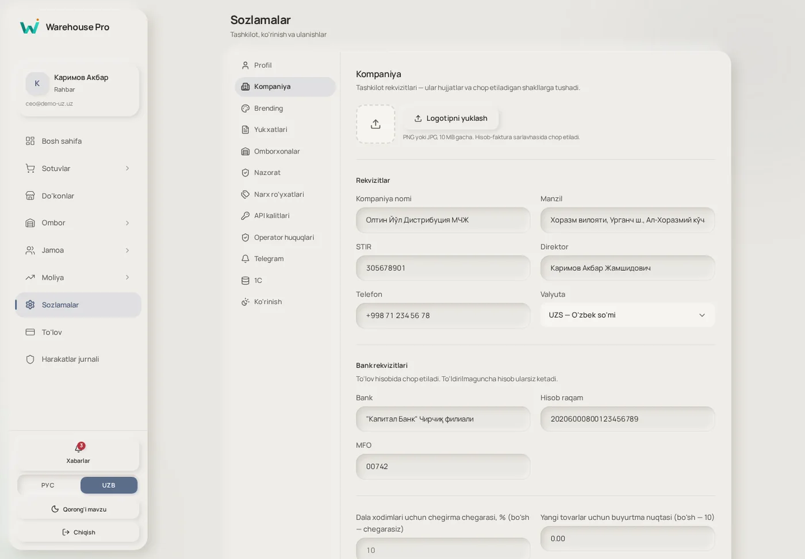
Rasm 2. «Sozlamalar» → «Kompaniya»: yuk xati uchun rekvizitlar, valyuta, chegirma chegarasi va buyurtma nuqtasi
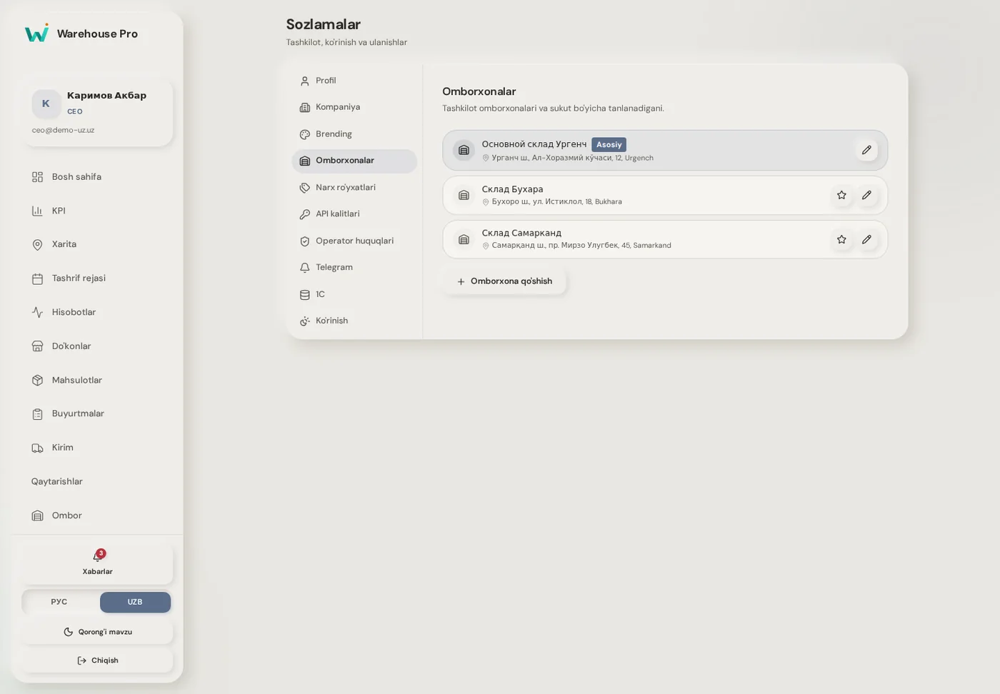
Rasm 3. «Sozlamalar» → «Omborxonalar»: asosiy ombor belgilangan — sotuv shu yerdan. Qolganlari — saqlash va ko'chirish uchun
MaslahatBitta ombor — eng oddiy holat: dastur hech qayerda «qaysi ombordan?» deb so'ramaydi. Ikkinchi omborni faqat tovar haqiqatan ikki joyda yotganda oching. Shunda «Ombor»da «Taqqoslash» va «Ko'chirishlar» ilovalari paydo bo'ladi.
1-kun. «Mahsulotlar»: katalogni yuklash
Nima uchun: buyurtmani faqat katalogdagi mahsulotga olish mumkin. Sotish narxi — tushum. Tannarx — P&L dagi foyda. Shtrix-kod — kirim va yig'ishda skaner. Qadoq — do'konda quti bilan sanash.
Qatorlarni to'ldiring. Majburiy: kod, nom va sotish narxi. Tannarx — P&L foydani hisoblashi uchun. «Ед. измерения»: kg, l, pcs (dona), box, pack. Har bir mahsulotning kodi o'ziniki bo'lsin — keyin shu kod bo'yicha qidiriladi va skanerlanadi.
Faylni import oynasiga tashlang yoki «yoki tanlash uchun bosing» maydonini bosing. Dastur birinchi qatorlarni va xatolarni ko'rsatadi. Xato bo'lsa — faylda tuzating va qayta yuklang. Hali hech narsa yozilmagan.
«Import qilish — N qator» → «Tayyor». Mahsulotlar ro'yxatda paydo bo'ldi. Tepadagi «JAMI MAHSULOTLAR» soni fayldagi qatorlar soniga teng bo'lishi kerak.
Bitta mahsulot qo'shish — «Qo'shish»: «Kod *», «Shtrix-kod (ixtiyoriy)», «Nomi *», «Kategoriya», «Tannarx», «Sotish narxi *», «1 dona vazni, kg (quti=8)», «Qayta buyurtma chegarasi», «Qadoqda, dona (12)», «Qadoq nomi (quti)», «Tavsif» → «Saqlash».
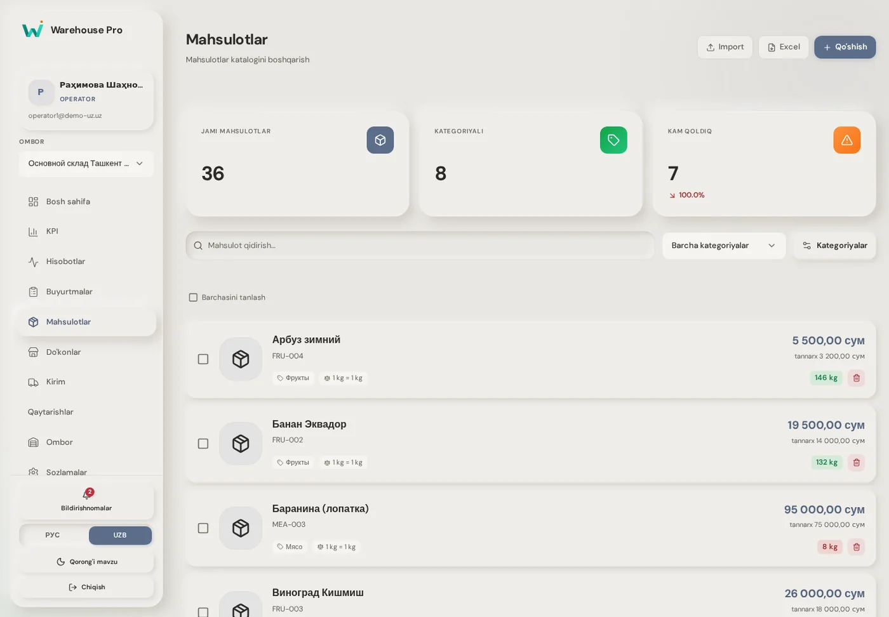
Rasm 4. «Mahsulotlar»: katalog — har qatorda narx, tannarx va qoldiq
1«Import» — Excel shabloni, yozishdan oldin har qator tekshiriladi
2«Qo'shish» — bitta mahsulotni qo'lda kiritish
3«Kam qoldiq» — nechta mahsulot o'z chegarasidan past
4Nom va kod bo'yicha qidiruv
Maslahat1-kuni tannarxni aniq bilmasangiz — oxirgi xarid narxini yozing. Tannarx bo'lmasa, P&L 100% foyda ko'rsatadi, va bu raqam sizni o'zingizni aldaydi.
«Qayta buyurtma chegarasi» — qoldiq shu sondan tushsa, mahsulot «Kam stok»ga va «Qayta buyurtma» ilovasiga tushadi. Yetkazib beruvchidan tovar kelguncha qancha sotilsa, shuncha qo'ying.
«Qadoqda, dona» va «Qadoq nomi» — agent do'konda «2 quti» deb buyurtma bersin, ombor esa «24 dona»ni ko'rsin. «1 dona vazni» — yuklash varaqasining og'irligi uchun.
«Rasm» — 2 MB gacha. Rasmni agent katalogda va telefondagi mahsulot sahifasida ko'radi. Rasm bilan do'konda buyurtma tezroq olinadi.
1-kun. «Kirim»: boshlang'ich qoldiq
Nima uchun: qoldiq faqat kirim orqali paydo bo'ladi. Kirimning har bir qatori — muddati bor partiya. Keyin ombor buyurtmani shu partiyalar bo'yicha yig'adi: «muddati oldin tugaydigan — oldin ketadi» (FEFO). Direktor esa tez orada muddati tugaydigan tovarni ko'radi.
Javonlarni sanab chiqing. Har bir mahsulotning haqiqiy soni kerak. Oziq-ovqat uchun — partiya raqami va muddati, yorliqdan.
«Kirim» → «Yangi kelish». Boshlang'ich qoldiq uchun «Mashina ma'lumotlari» va «Sana va xarajatlar»ni tegmang (sana o'zi bugungi bo'ladi). «Yetkazib beruvchi va qarz» — «Yetkazib beruvchisiz». Bo'lmasa dastur sizga yetkazib beruvchiga qarz yozib qo'yadi.
Mahsulot qatori: «Mahsulotni tanlang…» → «Miqdor» → «Tannarx» (1 dona xarid narxi) → «Partiya» → «Muddati». Keyingi mahsulot — «Mahsulot qo'shish». Skaner bilan tezroq: kursorni «Shtrix-kod + Enter» maydoniga qo'ying, har bir skan — bitta dona qo'shadi.
«Izoh»ga «boshlang'ich qoldiq» deb yozing. Bir yildan keyin bu raqamlar qayerdan kelganini shu izoh tushuntiradi.
Shaklning pastida: «Saqlash va yakunlash». «Ombor»dagi qoldiq darhol o'zgaradi. Shunchaki «Saqlash» — qoralama: qoldiq o'zgarmaydi, kirim «Kutilmoqda» holatida qoladi. Keyin ro'yxatdan yakunlash mumkin: «Tushirilmoqda» → «Yakunlash».
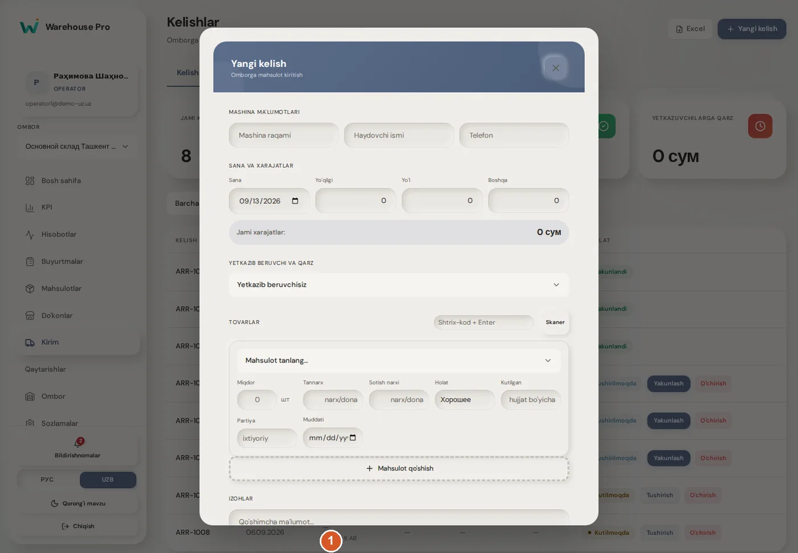
Rasm 6. «Yangi kelish»: har bir qatorga bitta kartochka — mahsulot, miqdor, tannarx, partiya va muddat. «Saqlash va yakunlash» tugmasi — shaklning pastida
1«Yetkazib beruvchisiz» — boshlang'ich qoldiq uchun; bo'lmasa yetkazib beruvchiga qarz paydo bo'ladi
2«Skaner» va «Shtrix-kod + Enter» maydoni — har bir skan bitta dona qo'shadi
3«Mahsulotni tanlang…» — 1-kundagi katalogdan, nomi bo'yicha
4«Miqdor» — javondagi haqiqiy soni
5«Partiya» — yorliqdagi raqam
6«Muddati» — FEFO va «muddati tugayapti» degan ogohlantirish shunga qarab ishlaydi
7«Mahsulot qo'shish» — keyingi qator
MaslahatPartiyasiz tez yo'l: mahsulot import shablonida «Остаток на складе» ustuni bor. Import shu sonlarni darrov asosiy omborga qo'yadi. Bu muddatsiz tovarlar (uy-ro'zg'or buyumlari) uchun yaraydi. Oziq-ovqat va ichimliklar uchun kirim qiling: partiya va muddat birinchi oydayoq o'zini oqlaydi.
Diqqat«Yetkazib beruvchi va qarz»da yetkazib beruvchi va summa ko'rsatilgan kirim — yetkazib beruvchiga qarz yaratadi. U «YETKAZIB BERUVCHILARGA QARZ» kartochkasiga, «Kontragentlar va qarzlar» bo'limiga va P&L xarajatlariga tushadi. Boshlang'ich qoldiq uchun yetkazib beruvchini ko'rsatmang.
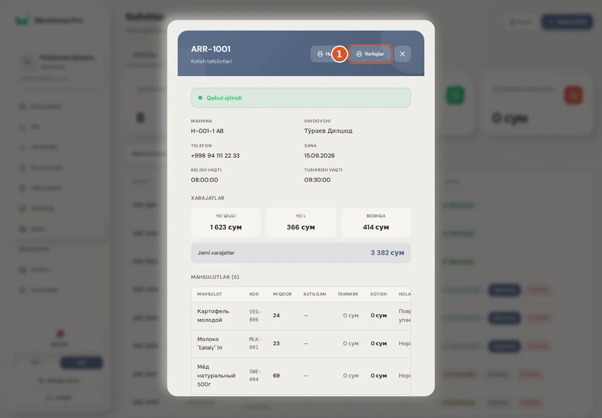
Rasm 7. Kirim qatori «Kelish tafsilotlari»ni ochadi: nima kutilgan va nima qabul qilingan, partiyalar, muddatlar, yo'l xarajatlari. «Yorliqlar» — partiyaga shtrix-kod chop etadi
1«Yorliqlar» — shu partiya qutilariga shtrix-kodlar
1-kun. Tekshiruv: «Ombor»
Nima uchun: «Ombor» — qoldiq agent do'konda ko'radigan holda ko'rsatiladigan yagona joy. «Mavjud» = «Jami» minus «Zahira» (allaqachon olingan buyurtmalarga band qilingan tovar). Bu yerdagi raqamlar javon bilan to'g'ri kelmasa — ertaga hamma buyurtma havoga olinadi.
«Ombor» → «Qoldiqlar» bo'limi. Tepada to'rtta plitka: «Pozitsiyalar» (va umumiy og'irlik kg da), «Qoldiq qiymati» (tannarx bo'yicha), «Chegaradan past» va «Sotuvsiz · 30 kun» — oxirgi ikkitasi bosiladi va «Qayta buyurtma» hamda «O'lik stok» bo'limlariga olib boradi.
Ro'yxatni ko'rib chiqing: har bir mahsulotning «Mavjud» soni javondagi bilan bir xil bo'lsin. «Zahira» 1-kuni — nol. Qizil qatorlar — chegaradan past: yoki yana buyurtma bering, yoki mahsulot kartochkasidagi «Qayta buyurtma chegarasi»ni to'g'rilang.
Sonda xato bo'lsa — qatordagi «Tuzatish»: «AMAL TURI», «MIQDOR», «IZOH» (sabab) → «Qo'llash». Tuzatish «Harakatlar jurnali»ga tushadi — bu normal, shunday bo'lishi kerak.
Farq ko'p bo'lsa — «Inventarizatsiya» bo'limi → «Yangi inventarizatsiya»: dastur shu paytdagi qoldiqni oladi, siz javonlarni sanaysiz (qo'lda yoki «Shtrix-kod + Enter» / «Skaner») → «Qo'llash» — hamma farq bitta hujjat bilan o'tkaziladi.
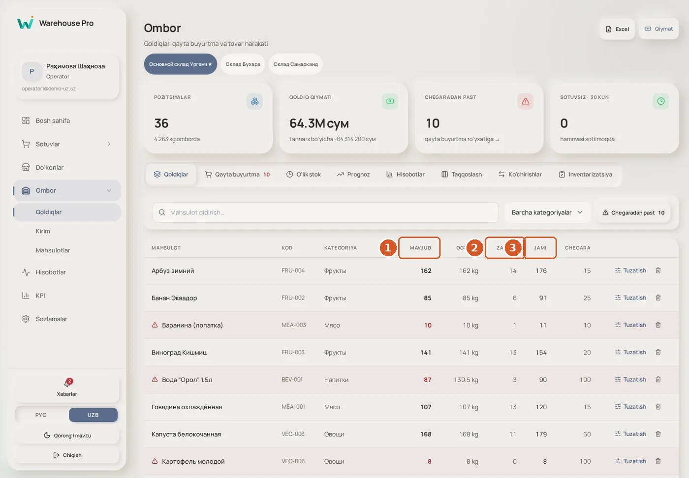
Rasm 8. «Ombor» → «Qoldiqlar»: har bir mahsulot bo'yicha mavjud, zahira, jami va chegara
1«MAVJUD» — agent shuni ko'radi; javon bilan bir xil bo'lishi kerak
2«ZAHIRA» — olingan, lekin hali jo'natilmagan buyurtmalar uchun band qilingan
3«CHEGARA» — undan past bo'lsa qator qizaradi va ogohlantirish keladi
4«Tuzatish» — sonni sabab bilan to'g'rilash
Tekshiruv
«Sozlamalar» → «Kompaniya»: valyuta, rekvizitlar, chegirma chegarasi va buyurtma nuqtasi to'ldirilgan
Hamma mahsulot yuklangan; sotiladiganlarida sotish narxi, tannarx va o'lchov birligi bor
Boshlang'ich qoldiq kirimi yakunlangan — holati «Qabul qilindi», «Kutilmoqda» emas
«Ombor» → «Qoldiqlar»: «Mavjud» javon bilan bir xil, «Zahira» — nol
2-kun. «Do'konlar»: nuqtalar va hududlar
Nima uchun: do'kon — bu sizga pul qarz bo'lgan odam. Boshlang'ich qarz va kredit limiti shu yerda kiritiladi. Shu kundan boshlab qarzni dastur o'zi yuritadi: har bir yetkazish qarzni oshiradi, har bir to'lov kamaytiradi. Hudud — agentning marshruti; supervayzer oylik rejani shu hudud bo'yicha tuzadi.
«Долг» — do'kon bugungi kunda daftar bo'yicha sizga qancha qarz. Qarz qo'lda faqat shu bir marta kiritiladi: keyin u yetkazish va to'lovlar bo'yicha hisoblanadi. «Территория» — hudud nomi; bunday hudud bo'lmasa, import uni o'zi yaratadi.
Faylni yuklang → oldindan ko'rishni tekshiring → «Import qilish — N qator». Tepadagi «JAMI DO'KONLAR» va «UMUMIY QARZ» daftaringiz bilan bir xil bo'lishi kerak.
Hududlar: «Hududlar» (o'ng tepadagi tugma) → «Hudud qo'shish» — nomi va rangi. Yoki «Do'konlardan» → «Shaharlar bo'yicha» / «Tumanlar bo'yicha» — dastur yuklangan manzillardan hududlarni o'zi tuzadi.
Kredit limiti — do'kon kartochkasida: do'konni oching → «O'zgartirish» → «Kredit limiti (bo'sh — limitsiz)» → «Saqlash». Limitdan ortiq qarzga buyurtma agentda o'tmaydi: dastur «limit oshib ketdi» deb rad etadi — agent to'lov oladi yoki ofis limitni oshiradi.
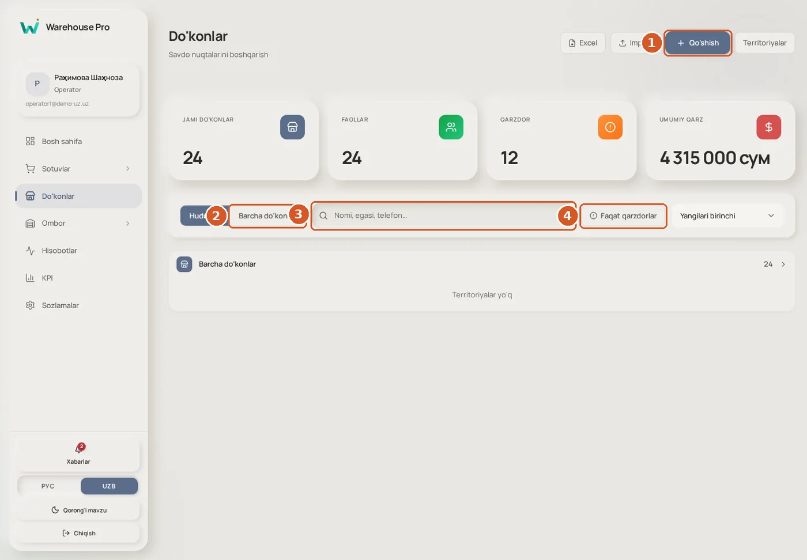
Rasm 9. «Do'konlar»: qarz bo'yicha xulosa, qidiruv, hududlar va nuqtalar ro'yxati
1«Import» — Excel shabloni, boshlang'ich qarz va hudud bilan
2«Qo'shish» — bitta nuqtani qo'lda
3«Hududlar» — agentlar marshrutlari
4«UMUMIY QARZ» — importdan keyin daftar bilan bir xil bo'lishi kerak
5Nom, egasi va telefon bo'yicha qidiruv — uchalasini ham to'ldiring
6«Faqat qarzdorlar» — hozir kim qarz
DiqqatBoshlang'ich qarz bir marta kiritiladi. Import mavjud do'konlarni yangilamaydi, yangisini yaratadi: faylni ikkinchi marta yuklasangiz — nuqtalar ikkilanadi, har birida ikkita qarz bo'ladi. Keyin qarzni faqat yetkazish, to'lov, qaytarish va do'kon kartochkasidagi qo'lda yozilgan summalar o'zgartiradi — hammasi ko'chirmada ko'rinadi.
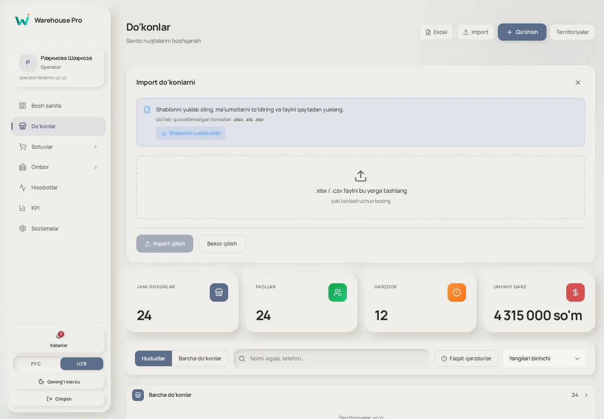
Rasm 10. «Do'konlar» → «Import»: do'konlarni Excel'dan yuklash. Shablonni yuklab oling, to'ldiring, yuklang — dastur nimani qabul qilishi va nimani qilmasligini ko'rsatadi
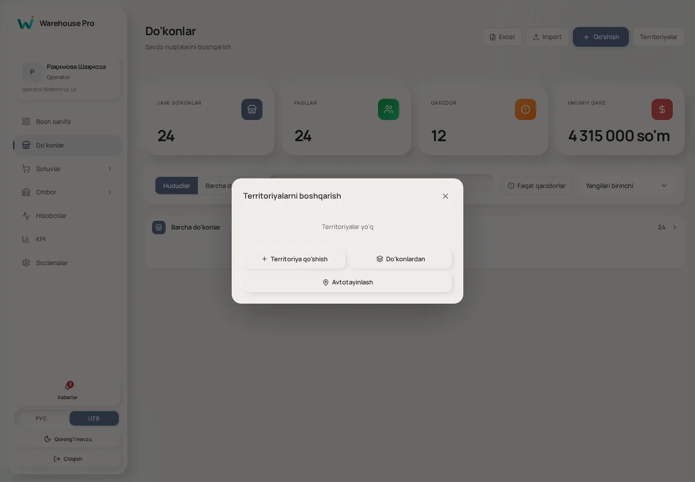
Rasm 11. «Territoriyalar»: nomi, rangi va radiusli markaz. «Avtotayinlash» do'konlarni «Shaharlar», «Tumanlar» yoki «Do'konlardan» bo'yicha hududlarga taqsimlaydi
Nima uchun: rol — odam nimani ko'rishi va nimani o'zgartira olishini belgilaydi. Agent boshqaning do'konlarini va oyligini ko'rmaydi, operator P&L ni ko'rmaydi, kuryer faqat o'z yetkazishlarini ko'radi. Bu ham pulni himoya qiladi, ham tartib: har kim o'z ekraniga javob beradi.
«Foydalanuvchilar» → «Yaratish». «Foydalanuvchi yaratish» shakli: «ISM *», «EMAIL *», «PAROL *» (kamida 8 ta belgi), «ROL *» → «Foydalanuvchi yaratish». Xodim shu parol bilan darhol kira oladi; parolni «Sozlamalar» → «Profil»da o'zi o'zgartiradi.
Har bir rolga bittadan odam yarating: operator, supervayzer, agent, kuryer, merchandayzer. Rollar — quyidagi jadvalda. Ikkinchi direktor yaratib bo'lmaydi — shunday qilingan.
Agentga hudud bering: agent qatoridagi «Ish zonasi» belgisi yoki sahifa pastidagi «Agentlar hududlari» bloki → «O'zgartirish» → hududlarni tanlang → «Saqlash». Hududsiz agentda 3-kuni reja bo'lmaydi.
Xodim ketdi — «O'chirish» (qatordagi quvvat belgisi). Uning buyurtmalari, qarzlari va tarixi qoladi; lekin u boshqa kira olmaydi. Parolni unutdi — «Parolni tiklash» (kalit belgisi).
Direktor ikki bosqichli himoyani yoqsin: «Sozlamalar» → «Profil» → «Ilova kodi bilan kirish» → «Yoqish» → «Sozlash kaliti»ni Google Authenticator ga kiriting → «Ilovadagi birinchi kod» → «Tasdiqlash va yoqish». Usiz baza nusxasini yuklab olib bo'lmaydi va harakatlar jurnalini tozalab bo'lmaydi.
Operatoringiz «o'ng qo'l» emas, «telefonda o'tiradigan odam» bo'lsa: «Sozlamalar» → «Operator huquqlari» → «Buyurtmalarni o'chirish», «Qoldiqlarni tuzatish», «Mukofotni yuritish»ni olib tashlang → «Saqlash». Rol — yuqori chegara, bu yerda siz uni faqat pastga tushirasiz.
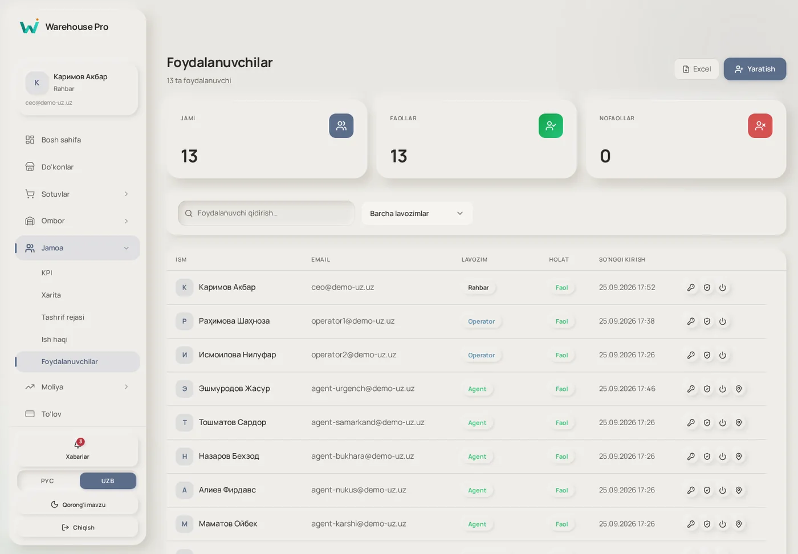
Rasm 13. «Foydalanuvchilar»: ro'yxat — rol, holat va oxirgi kirish
1«Yaratish» — ism, email, parol, rol; darhol kira oladi
2«ROL» — odam nimani ko'radi; qatorning o'zida o'zgartiriladi
3«Parolni tiklash» — xodim parolni unutsa
4«Ish zonasi» — tashrif rejasi uchun agentning hududlari
Rol
Veb
Telefon
Nimani ko'radi
Rahbar (direktor)
ha
ha
Hammasini: pul, hisobotlar, P&L, oylik, sozlamalar, foydalanuvchilar, harakatlar jurnali
Operator
ha
ha (faqat ko'rish)
Buyurtmalar, do'konlar, mahsulotlar, ombor, kirim, qaytarishlar; oylik — faqat o'ziniki
Supervayzer
ha
ha
Xarita, tashrif rejasi, agentlarning KPI si va oyligi, do'konlar
Agent
qisman
ha
O'z do'konlari, buyurtmalari, rejasi, qarzlari, KPI si va oyligi
Kuryer
qisman
ha
O'z yetkazishlari va oyligi
Merchandayzer
qisman
ha
Tashrif rejasi va javon bo'yicha hisobotlar
Tekshiruv
Hamma do'konda telefon va hudud bor; «UMUMIY QARZ» daftar bilan bir xil chiqdi
Hech bo'lmasa qarzdorlarga kredit limiti qo'yilgan
Har bir xodim o'z paroli bilan kirdi va o'z ekranini ko'rdi
Har bir agentda hudud bor
Direktorda ikki bosqichli himoya yoqilgan
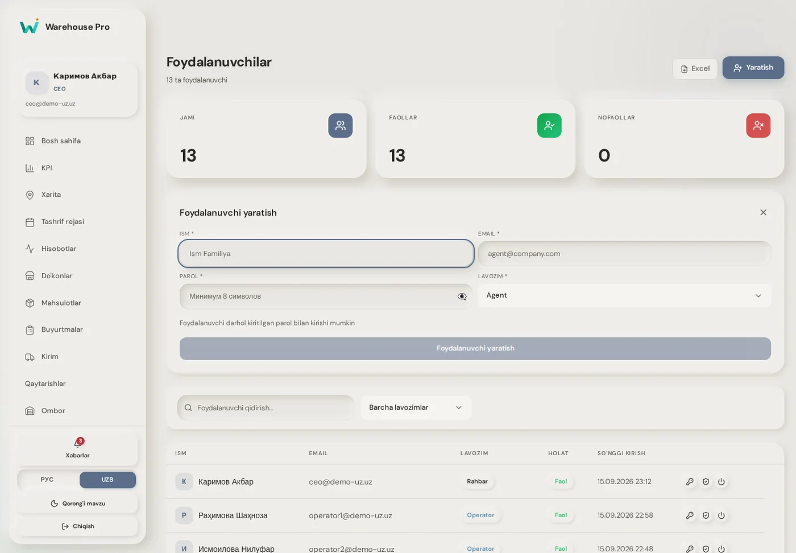
Rasm 14. «Foydalanuvchilar» → «Yaratish»: «ISM *», Email, «PAROL *» (kamida 8 ta belgi), «LAVOZIM *». Xodim darhol kiradi, xat kutmaydi
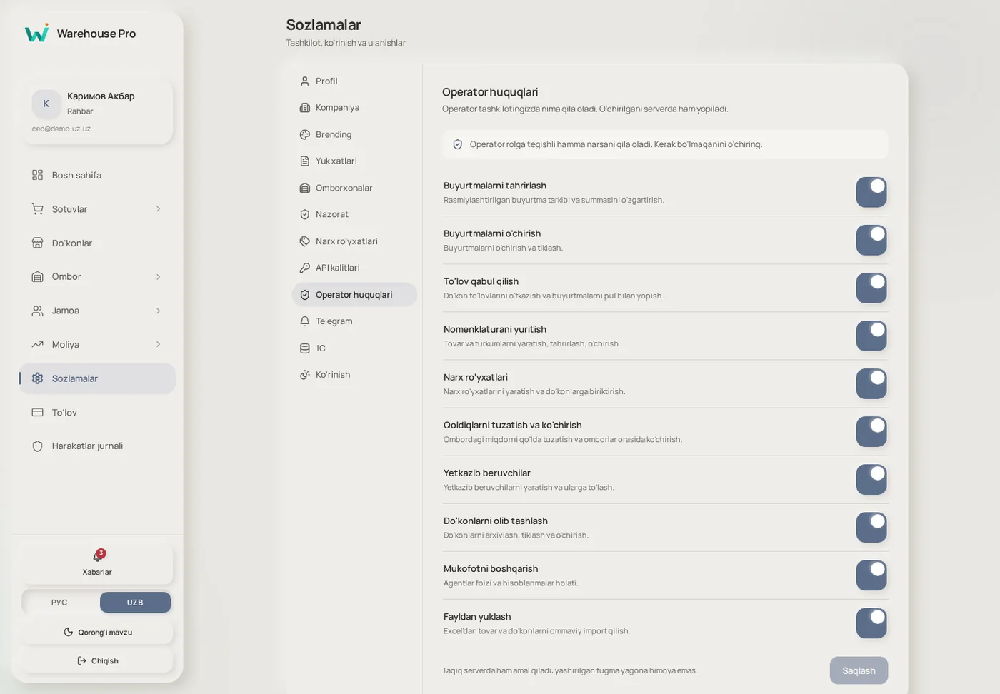
Rasm 15. «Sozlamalar» → «Operator huquqlari»: belgilar bilan — operatorga nima mumkin. Belgi olib tashlansa — tugma uning ekranidan yo'qoladi
Huquqlar: «Buyurtmalarni tahrirlash», «Buyurtmalarni o'chirish», «To'lov qabul qilish», «Nomenklaturani yuritish», «Narx ro'yxatlari», «Qoldiqlarni tuzatish va ko'chirish», «Yetkazib beruvchilar», «Do'konlarni olib tashlash», «Mukofotni boshqarish», «Fayldan yuklash».
Direktorga huquq kerak emas — unda hammasi bor. Lavozim — yuqori chegara; bu belgilar operator uchun uni faqat pastga tushiradi.
3-kun. Dala: telefonlar, reja, birinchi buyurtmalar
Nima uchun: do'konda telefondan olingan buyurtma darhol qoldiqni band qiladi va operatorga tushadi — qo'ng'iroqsiz, qayta yozishsiz. Tashrif rejasi agentga qayerga borishni aytadi, supervayzerga — kim borganini ko'rsatadi.
Agentlar, kuryerlar va merchandayzerlarga ilovani o'rnating (APK — dastur yetkazib beruvchisidan). Kirish — «Foydalanuvchilar»da yaratilgan email va parol bilan. Til — profilda.
Har bir telefonda joylashuvga «har doim» ruxsat bering. Ruxsatsiz supervayzerning xaritasi bo'sh bo'ladi, tashriflar tasdiqlanmaydi.
Supervayzer vebda: «Tashrif rejasi» → «Oy» bo'limi → «Xodim», «Nimani qo'yamiz» (hudud), «Hafta kunlari» → «Oyni taqsimlash» (tanlagandan keyin tugmada «Taqsimlash — N ta tashrif» yozuvi chiqadi). Dastur nuqtalarni kunlarga o'zi taqsimlaydi.
Agent telefondan: bosh sahifada «Bugungi tashriflar» ko'rinadi. «YANGI BUYURTMA» plitkasi (yoki «Do'konlar»da do'kon yonidagi savat belgisi) → do'kon → «Mahsulot qo'shish»: «Nomi yoki artikuli…» bo'yicha qidiruv yoki skaner, qator yonidagi «+» — qo'shishdan oldin qoldiq ko'rinadi → «Tayyor» → miqdor «− maydon +» → «Davom etish →» → to'lov usuli → «Buyurtmani tasdiqlash».
Birinchi buyurtmalarni supervayzer yonida turib oling: do'konda bir daqiqa — va odam boshqa so'ramaydi. Shu paytda operator «Buyurtmalar»ni kuzatadi: buyurtma «Yangi» holatida paydo bo'lishi kerak.
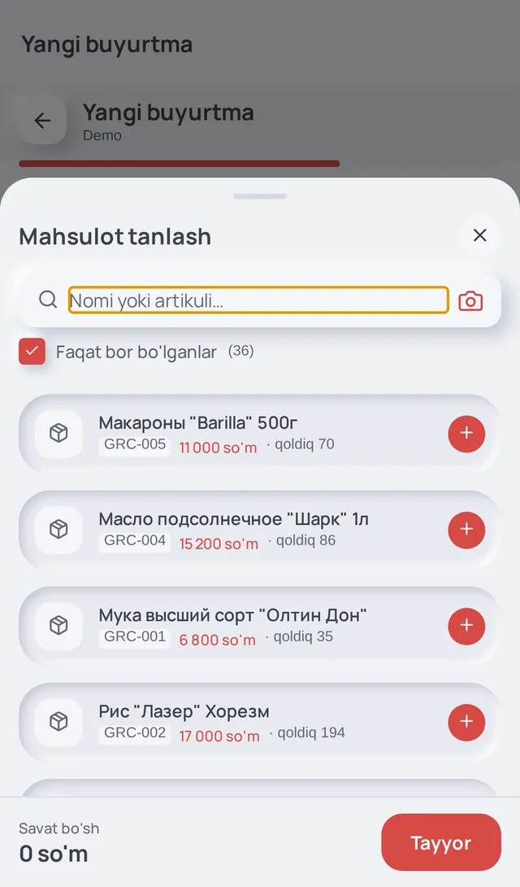
Rasm 16. Do'kondagi buyurtma, «Mahsulot tanlash»: qidiruv yoki skaner, har qatorda qoldiq, «+» savatga soladi
1«Nomi yoki artikuli…» — qidiruv; kamera belgisi — shtrix-kod skaneri
2«Faqat bor bo'lganlar» — omborda yo'q tovarni ko'rsatmaslik
3«Tayyor» — savatga: u yerda «− maydon +» va «Davom etish →»
MaslahatAgent telefoni haqida batafsil — «Savdo agenti (telefon)» bobida; oylik reja haqida — «Supervayzer» bobida.
Tekshiruv
Hamma agentda bir haftalik reja bor
Agentning birinchi buyurtmasi operatorning «Buyurtmalar»ida «Yangi» holatida ko'rinadi
«Ombor»da buyurtma qilingan mahsulotda «Zahira» paydo bo'ldi
Agent supervayzerning «Xarita»sida ko'rinadi
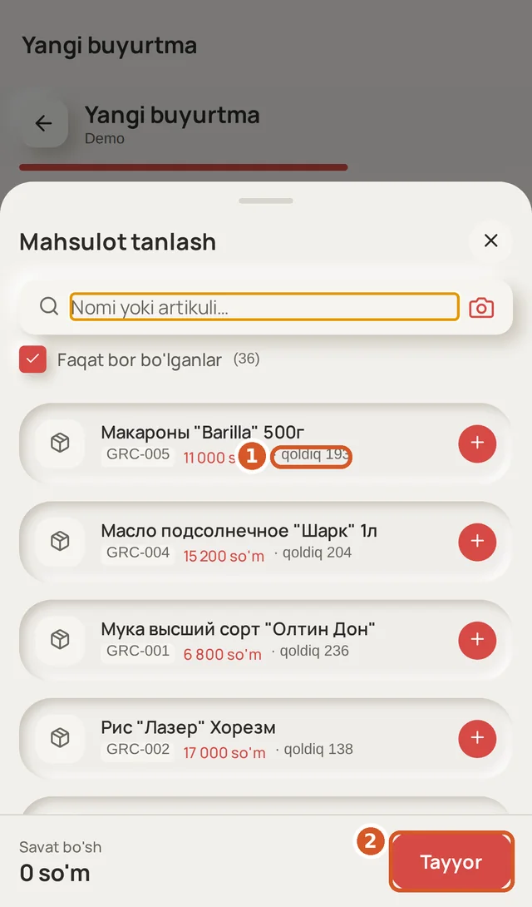
Rasm 17. 2-qadam, «Mahsulot tanlash»: narx va qoldiqli ro'yxat. Qatorga bosish mahsulotni qo'shadi, keyin qatorda «−» va «+» paydo bo'ladi. «Tayyor» buyurtmaga qaytaradi
1Mahsulot qatori: bossangiz — bitta qo'shiladi; qoldiqdan ko'p bermaydi
2«Tayyor» — buyurtmaga qaytish
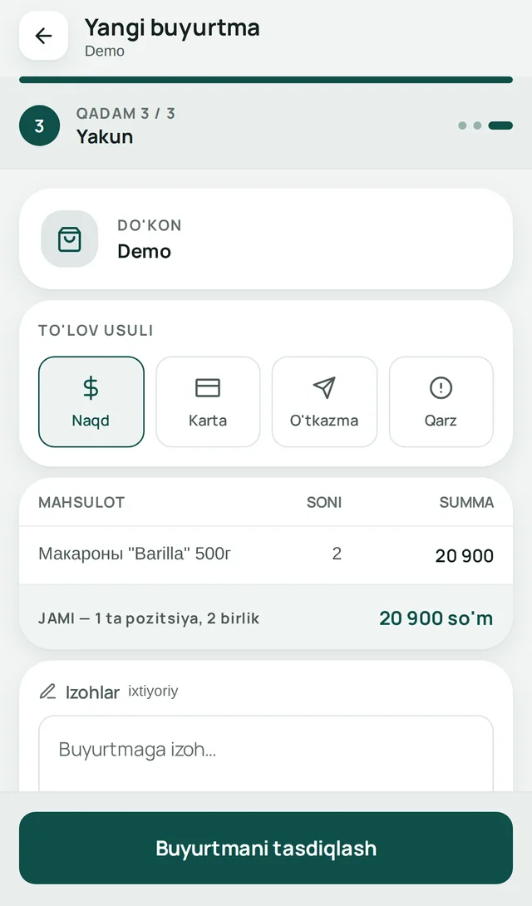
Rasm 18. 3-qadam: «DO'KON», «MAHSULOT / SONI / SUMMA» jadvali, «TO'LOV USULI», «Izohlar» va «Buyurtmani tasdiqlash» tugmasi
1«Buyurtmani tasdiqlash» — buyurtma operatorga ketadi va qoldiqni band qiladi
4-kun. Ombor va yetkazish
Nima uchun: bu kun qoldiq pulga aylanadi. Varaqa — omborga topshiriq va kuryerning reysi. Yig'ish — partiyalarni hisobdan chiqaradi. Yetkazish — naqd pulni va do'kon qarzini yozadi. Har bir qadamni bitta odam qiladi, dastur esa kim qilganini eslab qoladi.
Operator: «Buyurtmalar» → bugungi buyurtmalarga belgi qo'ying → «Yuklash varaqasi» → «Varaqa tuzish» → «Chop etish» yoki «Tayyor, chop etmasdan». Varaqa — omborga topshiriq va bir vaqtda kuryerning reysi.
Yig'ish: «Yuklash varaqalari» → «Yig'ish». Dastur qancha kerakligini va qaysi partiyadan olishni ko'rsatadi (FEFO). Omborchi «Yig'ildi» sonini faqat yetmagan joyda o'zgartiradi → «Yig'ishni tasdiqlash». Kam bo'lsa — bu kamomad, ofis buni darhol biladi.
Kuryer: «Yuklash varaqalari» oynasida, varaqa qatoridagi «Kuryer tayinlanmagan» ro'yxatidan odamni tanlang — u varaqadagi hamma buyurtmaga qo'yiladi. Kuryerning telefonida marshrut paydo bo'ladi.
Yetkazish: kuryer «Hammasiga yo'lga chiqdim (N)» ni bosadi. Nuqtada — naqd pul summasi va «Yetkazildi». Yetkazilmasa — «Yetkazilmadi» va sababi. Qisman to'lov yoki qaytarish — «Batafsil rasmiylashtirish».
Kechqurun operator solishtiradi: «Buyurtmalar» → «Yetkazilgan» filtri. Kuryerning naqd puli — har bir buyurtma kartochkasida. Do'kon qarzi — uning kartochkasida va «Hisobotlar» → «Qarzlar»da.
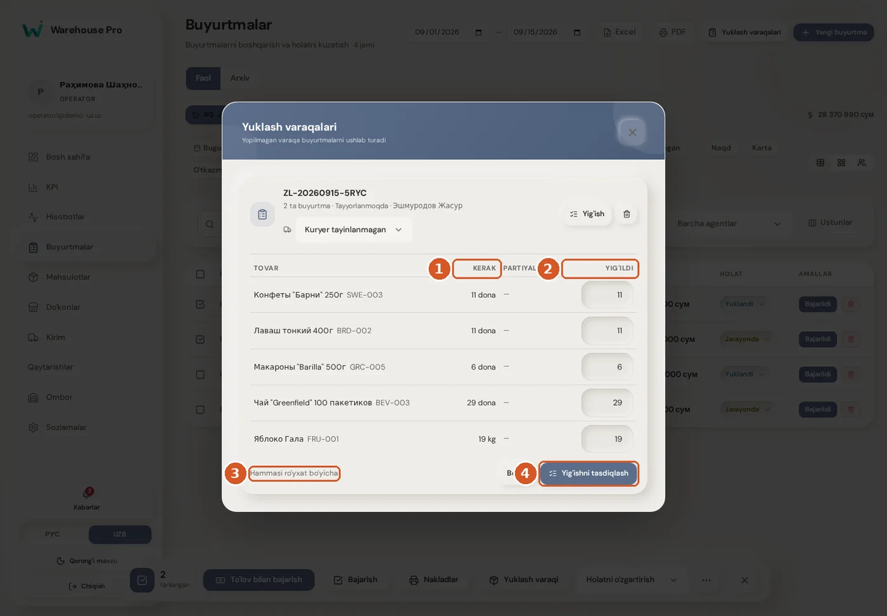
Rasm 19. Varaqani qatorma-qator yig'ish: kerak, FEFO bo'yicha partiyalar, yig'ildi
1«Yig'ildi» — faqat yetmagan joyda o'zgartiring
2«Yig'ishni tasdiqlash» — varaqa «Tayyor» bo'ladi
DiqqatQoldiq jo'natishda hisobdan chiqadi, pul va qarz — yetkazishda yoziladi. Kuryer hisobot bermaguncha buyurtmani qo'lda «Yetkazildi»ga o'tkazmang. Bo'lmasa do'kon qarzi yetkazilmagan tovar bo'yicha hisoblanadi.
MaslahatSuratlar bilan qadamma-qadam: varaqa va yig'ish — «Ofis operatori va ombor» → «Yuklash varaqasi» va «Varaqani yig'ish va kuryer»; kuryer telefoni — «Kuryer (telefon)».
Tekshiruv
Varaqa yig'ildi, kuryer tayinlandi
Buyurtma «Yuklandi» → «Yetkazildi» yo'lini o'tdi
«Ombor»da «Mavjud» aynan jo'natilgan songa kamaydi
Do'kon qarzi va kuryerning naqd puli qog'oz bilan bir xil
1«Buyurtmani tugatish» — qoldiq chiqadi, pul va qarz yoziladi
5-kun. «Bosh sahifa»: kunning 5 ta savoli
Nima uchun: shu kundan boshlab siz so'rashni to'xtatib, ko'rishni boshlaysiz. Direktorning bosh sahifasi 5 ta savolga javob beradi: qancha sotdik, qancha yetkazdik, bizga qancha qarz, foyda qancha va nima «yonyapti».
Direktor bo'lib kiring. «Bosh sahifa»: «TUSHUM · BUGUN», «BUYURTMALAR · BUGUN» va ostida «Bugun yetkazildi N tadan M», «MIJOZLAR QARZI», «YALPI FOYDA».
Pastda — ogohlantirish kartochkalari: kam qoldiq, muddati tugayotgan partiyalar, yangi buyurtmalar, muddati o'tgan qarzlar. Istalganini bosing — shu masala hal qilinadigan ekran ochiladi («Ombor», «Buyurtmalar», «Hisobotlar» → «Qarzlar»).
«Savdo dinamikasi» — «7k» / «30k» / «Oy». «Ishdagi buyurtmalar» — hozir nechtasi ochiq. «Oxirgi buyurtmalar» — kim va qanchaga.
Menyuda «KPI»: qaysi agent rejani bajaryapti, qaysi biri yo'q. Agent qatorini bossangiz — davr bo'yicha tahlil va oylik.
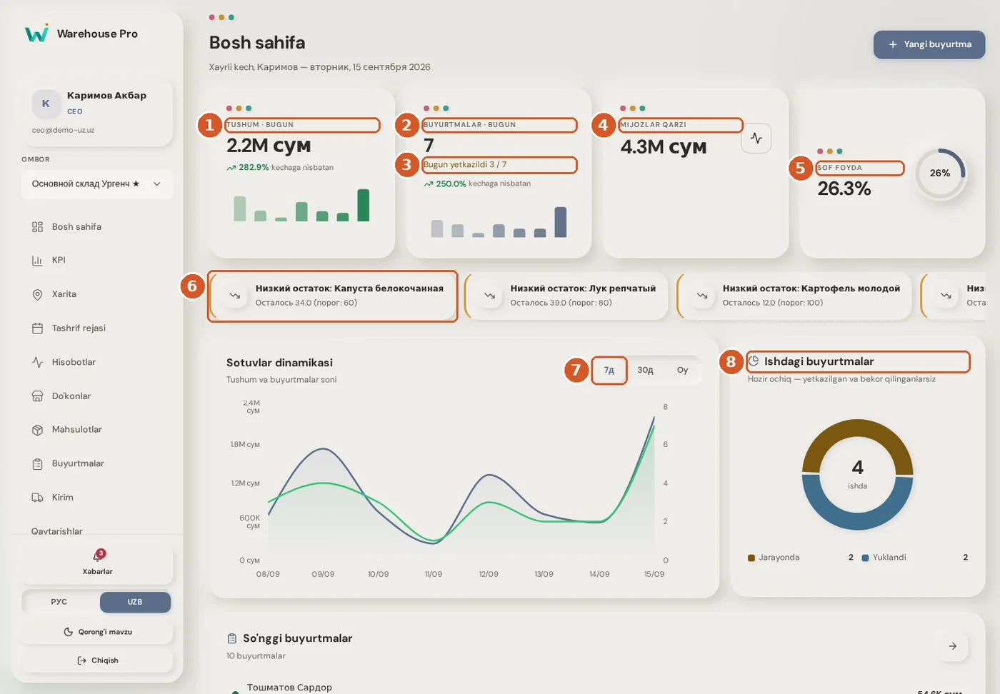
Rasm 21. Direktorning bosh sahifasi: kun savollariga javob bitta ekranda
1Bugungi tushum va kechagi bilan solishtirish
2Bugun yetkazildi N tadan M — M N dan ancha katta bo'lsa, kuryerlarni tekshiring
3Mijozlar qarzi — «Hisobotlar» → «Qarzlar»ga olib boradi
4Ogohlantirishlar — har biri kerakli ekranni ochadi
5-kun. «Hisobotlar» va «Qarzlar»
Nima uchun: bosh sahifa bugunni ko'rsatadi, hisobotlar — davrni. Bu yerda nima sotilayotgani, qaysi agent olib kelayotgani ko'rinadi. Eng muhimi — do'konlarda qancha pul qolib ketgani va qachondan beri.
«Hisobotlar» → davr «7 kun» / «30 kun» / «90 kun». «Umumiy» bo'limi: «TUSHUM», «BUYURTMALAR», «O'RTACHA CHEK», «QARZDA QOLGAN»; «Tashriflar va buyurtmalar» grafigi; agentlar bo'yicha «Bugungi reja»; pastda «Top mahsulotlar», «Top do'konlar», «Eng yaxshi agentlar», «Eng ko'p qarzdorlar».
«Savdo» — agentlar va mahsulotlar bo'yicha. «Agentlar» — kim olib kelyapti, kim tushib ketdi. «Xulosa» — joriy davr uchun Excel. «Chop etish» — chop etish oynasi (faylga saqlash uchun printer sifatida «Сохранить как PDF»ni tanlang). «Barcha yuklamalar» — hamma hisobot bir joyda.
«Qarzlar» bo'limi: «Bizga qarz» — umumiy summa va qarzdorlar soni. Muddat bo'yicha 4 ta guruh: «7 kungacha», «8–30 kun», «31–60 kun», «60 dan ko'p». Sariq va qizil — bu pul ortidan borish vaqti kelgan.
Pastdagi jadval — do'kon, qarz, eng eski qarzning muddati. Uning tepasidagi «Excel» va «Chop etish» — qo'ng'iroq qilish uchun qarzdorlar ro'yxati. Do'kon bo'yicha ko'chirma (har bir yetkazish, to'lov va qaytarish) va buyurtmasiz to'lov — «Do'konlar»da: do'konni oching → «To'lov qo'shish».
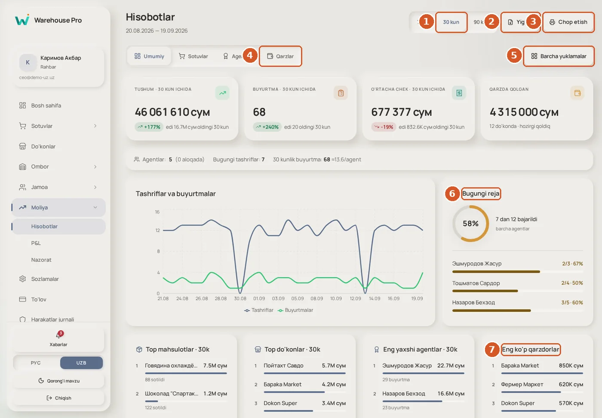
Rasm 22. «Hisobotlar» → «Umumiy», 30 kun: tushum, buyurtmalar, qarzlar va eng yaxshi/eng yomonlar
1Davr — ekrandagi hamma raqam qayta hisoblanadi
2«Qarzlar» — kim, qancha, qachondan beri
3«QARZDA QOLGAN» — bu pul allaqachon sizniki, lekin hali qo'lingizda emas
4«Xulosa» — tanlangan davr uchun Excel
5«Eng ko'p qarzdorlar» — qo'ng'iroqni kimdan boshlash
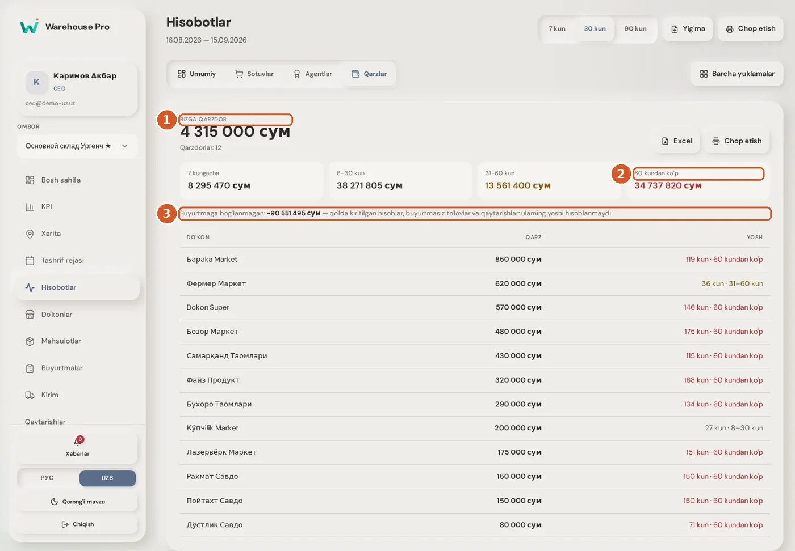
Rasm 23. «Hisobotlar» → «Qarzlar»: summa, muddat bo'yicha guruhlar va qarzdorlar jadvali
1«Bizga qarz» — hamma do'kon bo'yicha jami
2«7 kungacha» — oddiy muhlat
3«60 dan ko'p» — qizil: yo'qotish ehtimoli katta, o'zingiz hal qiling
DiqqatDavr bo'yicha qarz va buyurtma bo'yicha qarz — boshqa-boshqa narsa. «Hisobotlar» → «Qarzlar»da — hozir qancha qarz. Buyurtma kartochkasida — shu buyurtma bo'yicha qancha qarz. Birini ikkinchisi bilan solishtirmang — «4-qism. Pul va qoldiq»ga qarang.
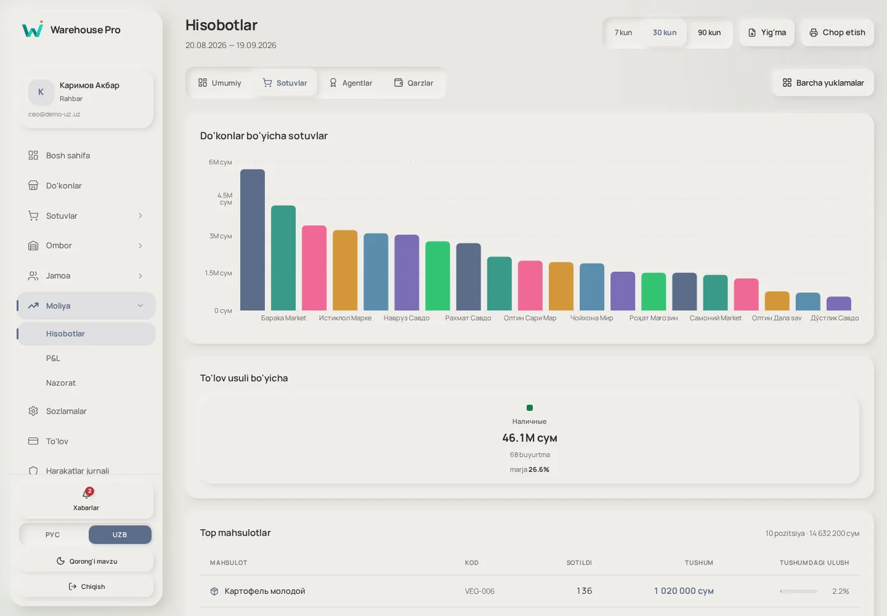
Rasm 24. «Hisobotlar» → «Sotuvlar»: kunlar, mahsulotlar va kategoriyalar bo'yicha tushum, tanlangan davr uchun
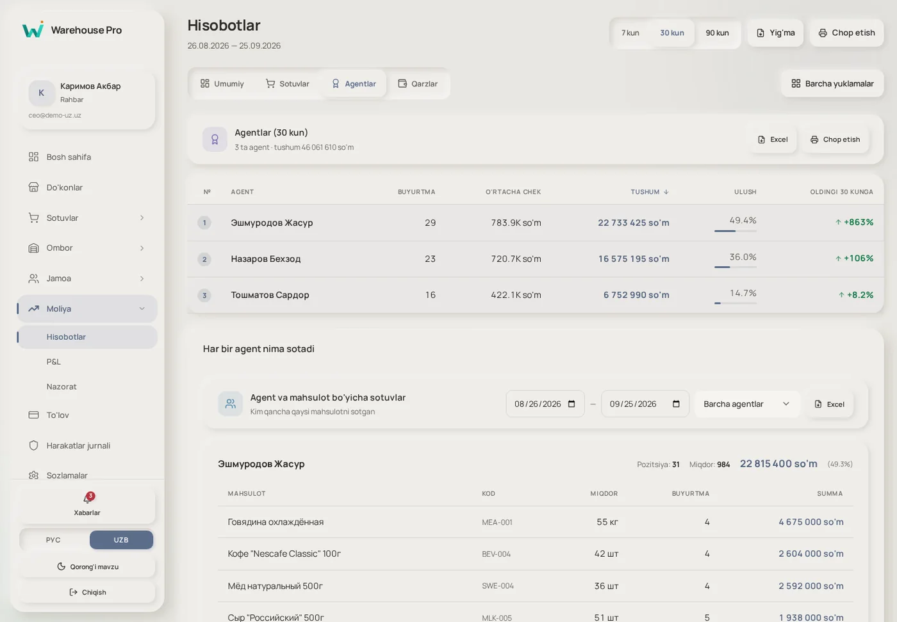
Rasm 25. «Hisobotlar» → «Agentlar»: kim qancha sotdi, nechta tashrif qildi va qancha qarz yig'di
5-kun. «P&L»: foyda qildikmi yoki zarar
Nima uchun: tushum — bu foyda emas. P&L tushumdan sotilgan tovarning tannarxini (kirimdagi partiyalar bo'yicha), kirim xarajatlarini va berilgan oylikni ayiradi. Va bitta raqam aytadi: «DAVRDA FOYDA» yoki «DAVRDA ZARAR».
Tepadagi kartochka — davr yakuni va o'tgan davr bilan solishtirish. O'ngda «YALPI FOYDA» (tushum minus tannarx) va «SOF FOYDA» (yana minus xarajatlar va oylik). Pastdagi chiziq tushum qayerga ketganini ko'rsatadi: «Tannarx», «Xarid», «Oylik», «Qoldi» — bo'sh qismlar chizilmaydi.
To'rtta kartochka: «TUSHUM», «TANNARX», «YALPI FOYDA», «XARAJATLAR». Agar «TANNARX» — 0 so'm, foyda esa 100% bo'lsa — demak, mahsulotlarda tannarx to'ldirilmagan (1-kun). Bu raqam haqiqiy emas.
«Oylar bo'yicha dinamika»: ustunlar — tushum va tannarx, chiziq — sof foyda. «Excel» va «PDF» — buxgalter uchun hisobot.
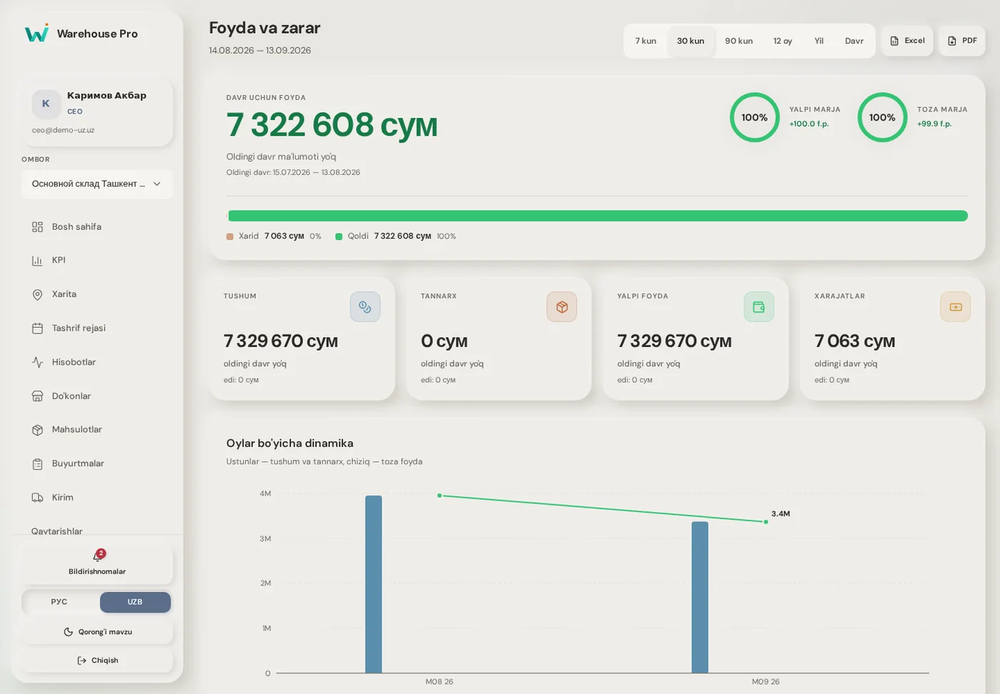
Rasm 26. «P&L», 30 kun: yakun, foyda, tushumning bo'linishi va oylar bo'yicha dinamika
1Davr — bir haftadan bir yilgacha va o'z sanalaringiz
2«DAVRDA FOYDA» — hammasi shu bitta raqam uchun
3«YALPI FOYDA» — tushum minus sotilgan tovar tannarxi
4«SOF FOYDA» — yana minus xarajatlar va berilgan oylik
5«TANNARX» — 0 so'm bo'lsa, mahsulotlarda tannarx to'ldirilmagan
6«Excel» — buxgalterga shu davr uchun fayl
MaslahatP&L ga berilgan oylik kiradi, hisoblangani emas: «To'lash»ni bosmaguningizcha xarajat yozilmaydi. Shuning uchun oylik P&L kassa bilan to'g'ri keladi.
5-kun. «Ish haqi»
Nima uchun: oylik tushum hisoblanadigan o'sha buyurtma va yetkazishlardan hisoblanadi. Stavkalarni bir marta sozlasangiz, oy oxirida Excelsiz va bahssiz vedomost olasiz.
«Ish haqi» → davr («Hafta» / «Oy» / «Chorak») → xodim qatorida «Oklad» → «OYLIK OKLAD», «KOMISSIYA, SAVDODAN %» → «Saqlash». Komissiya odam o'zi olgan buyurtmalardan hisoblanadi.
Kuryerga — «KPI» menyusida → «Oylik sozlamasi» → «Kuryerlarga yetkazish uchun to'lov»: har bir yetkazilgan buyurtma uchun summa («so'm») yoki yetkazilgandan foiz («%») — har bir odam uchun alohida tanlanadi. O'sha yerda «Tushlik va yo'l puli» — ish kuni uchun.
«HISOBLANDI», «TO'LANDI», «QOLDIQ» ustunlari o'zi hisoblanadi. «Faqat qoldiq bilan» — kimga hali qarzmiz.
To'lash kuni: bittadan «To'lash» («To'lov» yoki «Avans», summa → «Berilganini yozish») yoki «Hammaga berish». Xodim olganini telefonda tasdiqlaydi. «Vedomost» — davr uchun Excel. Imzo uchun xarajat orderi — «To'lovlar» bo'limida «Orderni chop etish».
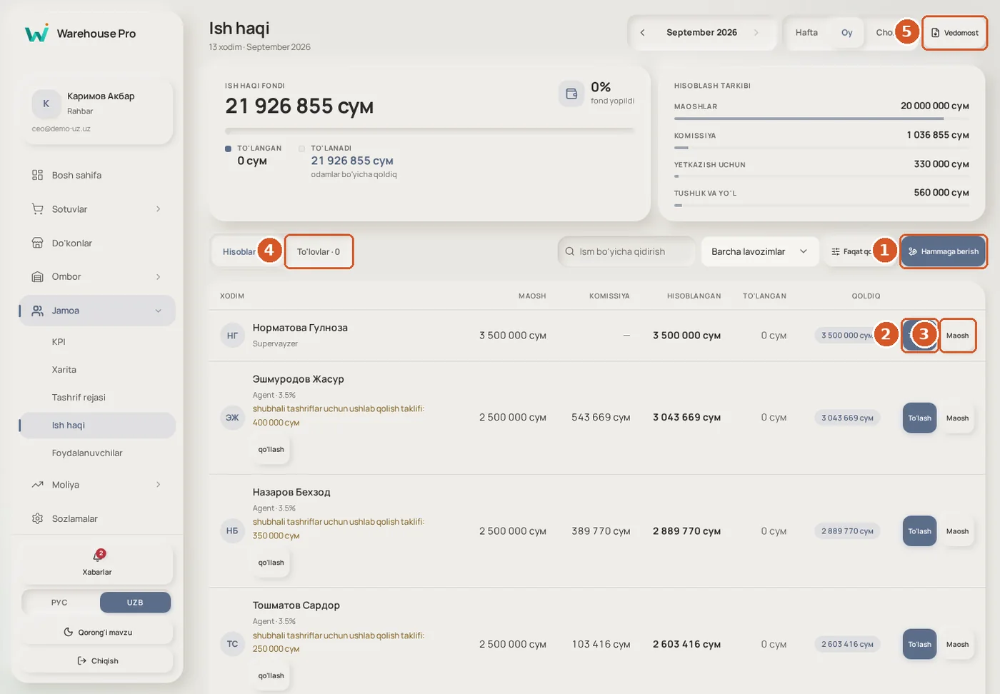
Rasm 27. «Ish haqi», oy: fond, hisoblandi/to'landi, berish tugmalari
1«Oklad» — xodimning stavkasi va foizi
2«Hammaga berish» — oyni bitta tugma bilan yopish; xodimlar telefonda tasdiqlaydi
3«Vedomost» — tanlangan davr uchun Excel
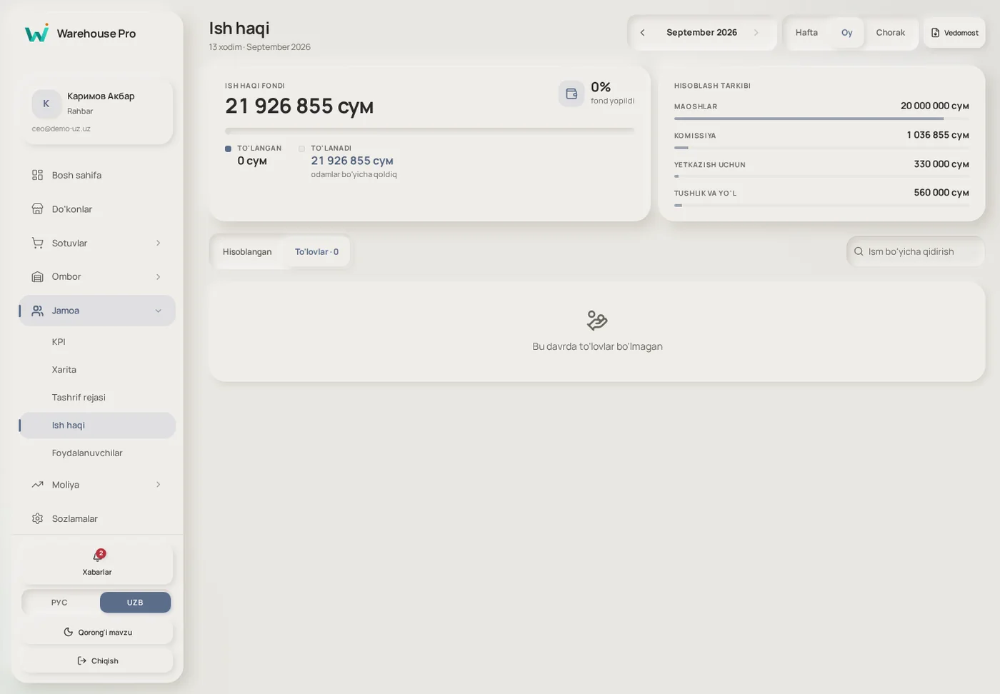
Rasm 28. «Oyliklar» → «To'lovlar»: davr ichida nima berilgan — kimga, qachon, qancha. Kim telefondan olganini tasdiqlagani ham shu yerda ko'rinadi
5-kun. «Harakatlar jurnali» va Telegram
Nima uchun: harakatlar jurnali «buni kim qildi?» degan savolga javob beradi. Qoldiqning har bir tuzatilishi, to'lovning bekor qilinishi, limitning o'zgarishi, parolning tiklanishi — ism va vaqt bilan yozilgan. Telegram — yangi buyurtma va qarzlar haqida dasturni ochmasdan bilish uchun.
«Harakatlar jurnali» → filtrlar: «Hammasi», «Foydalanuvchilar», «Buyurtmalar», «To'lovlar», «Do'konlar», «Ombor», «Tashkilot». Bugun u deyarli bo'sh — bu normal: bu yerga har bir bosish emas, faqat muhim harakatlar tushadi.
Haftada bir marta «To'lovlar» (bekor qilingan to'lovlar) va «Ombor» (tuzatishlar va inventarizatsiya)ni ko'ring: pul shu ikki joyda yo'qoladi. «CSV yuklab olish» — buxgalter bilan tekshirish kerak bo'lsa.
«Sozlamalar» → «Telegram» → «1 bosishda ulash» (bot ochiladi) yoki qo'lda: botga /start → raqamli ID ni nusxalang → «Sizning Telegram chat ID» → «Ulash». «Tekshiruv yuborish» — xabar kelayotganiga ishonch hosil qiling.
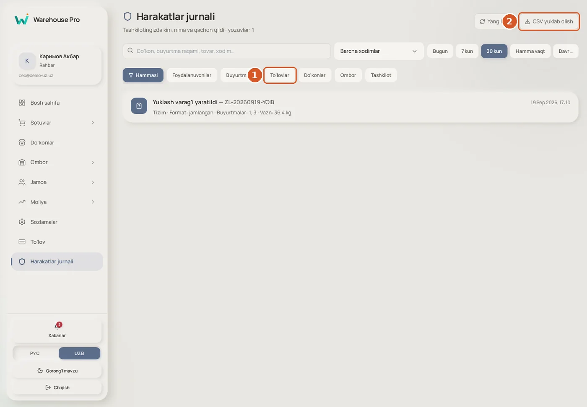
Rasm 29. Birinchi kundagi «Harakatlar jurnali»: harakat turi bo'yicha filtrlar va yuklab olish
1«To'lovlar» — bekor qilingan va qabul qilingan to'lovlar: har hafta ko'ring
2«Tashkilot» — sozlamalar, limitlar, baza nusxalari
3«CSV yuklab olish» — buxgalter bilan tekshirish uchun fayl
Tekshiruv
Direktor kunning 5 ta savoliga «Bosh sahifa»dan, boshqa ekranlarni ochmasdan javob berdi
«Hisobotlar» → «Qarzlar»: summa bosh sahifadagi «MIJOZLAR QARZI» bilan bir xil
P&L da tannarx noldan katta
Hammaga oylik stavkalari qo'yilgan, vedomost kutilgandek chiqyapti
Telegram ulangan, tekshiruv xabari keldi
5 kun o'tdi — endi kitob rollar bo'yicha davom etadi: har bir xodim 2-qismda o'z bobini o'qiydi, xo'jayin esa 4-qismni — pul qanday hisoblanishi haqida.
2-qism. Har bir xodimning ish kuni
Bu yerda har bir rol o'z kuni qanday o'tishi bo'yicha yozilgan: ertalab, kunduzi, kechqurun. Avval ofis (veb), keyin dala (telefon). Faqat o'z bobingizni o'qisangiz bo'ladi; direktorga hammasini bilish foydali. Tugma va menyu nomlari «qo'shtirnoq» ichida, dasturda qanday yozilgan bo'lsa, shunday.
Kim nimani ko'radi
Rol — bu chegara: odamga umuman nima ochiq. Vebdagi menyu va telefondagi bo'limlar har bir rolda o'ziniki. Quyida ular so'zma-so'z yozilgan — xodim kerakli bandni darrov topsin.
Javon: surat, terib qo'yish ro'yxati, raqobatchilar
Band birorta bo'limda yo'q — demak, bu rolga u berilmagan. Manzil orqali qidirmang: server rad etadi.
Operatorni roldan ham qattiqroq cheklash mumkin: «Sozlamalar» → «Operator huquqlari». O'chirilgani serverda ham yopiladi, faqat tugmalarda emas.
O'z KPI si va o'z oyligini har kim ko'radi. Hamma agentlarning KPI sini — direktor, operator va supervayzer; boshqaning oyligini — faqat direktor va supervayzer.
Til: vebda — menyuning pastida «РУС» / «UZB», telefonda — «Profil» → «Til». Bu shaxsiy sozlama, boshqalarga ta'sir qilmaydi.
Ofis operatori va ombor
Ertalab«Kutishda» va yangi buyurtmalarni ko'rish, yuklash varaqalarini tuzish, kuryerlarni tayinlash
KunTelefon orqali buyurtma olish, kirim va qaytarishlarni o'tkazish, do'konlarga qarz haqida solishtirma dalolatnoma bo'yicha javob berish
KechqurunYetkazilgan buyurtmalarni to'lov bilan yopish, varaqalarni «Jo'natildi»gacha olib borish, kirim va qaytarishlarni tekshirish
Operator vebda ishlaydi. Chapdagi menyu: «Bosh sahifa», «Sotuvlar» (ichida — Buyurtmalar, Qaytarishlar), «Do'konlar», «Ombor» (Qoldiqlar, Kirim, Mahsulotlar), «Hisobotlar», «KPI», «Sozlamalar»; bo'lim bosish bilan ochiladi, siz turgan bo'lim o'zi ochiq turadi. Operatorda «Bosh sahifa» «Buyurtmalar»ni ochadi. Ombor hisobotlari — «Ombor» sahifasidagi «Hisobotlar» bo'limi; «Shtrix-kodlar» /barcode manzilida ochiladi.
Buyurtmalar — asosiy ish ekrani
Rasm 30. «Buyurtmalar» ekrani: «Faol» bo'limi
1Xulosa — har bir raqam filtr; «Kutishda» — ofis qarorini kutayotgan buyurtmalar
2«Arxiv» — yetkazilgan, bekor qilingan va o'chirilganlar; «Faol» — hali ishda bo'lgan hammasi
3Buyurtma raqami yoki do'kon bo'yicha qidiruv; agent — «Barcha agentlar» filtri orqali
4«Yuklash varaqalari» — yig'ish va kuryerlar
5«Yangi buyurtma» — qo'ng'iroq bo'yicha buyurtma
6Belgi — buyurtmani belgilash; pastda ommaviy amallar paneli chiqadi
8«Bajarildi» — «Buyurtmani tugatish» oynasi: nima yetkazildi va qancha to'landi
Tepadagi xulosa: «Jami», «Kutishda», «Yangi», «Jarayonda», «Yuklandi», «Yetkazildi», «Hisob-kitob kutmoqda», «Bekor qilindi» — raqamni bossangiz, ro'yxat toraydi. O'ngda — ko'rsatilgan buyurtmalarning summasi. «Hisob-kitob kutmoqda» — yetkazilgan, lekin ofis hali pulini qabul qilmagan buyurtmalar (3-qism, «Buyurtma bo'yicha hisob-kitob»).
Xulosa ostidagi tez filtrlar: «Bugun», «Kecha», «Shu hafta», «Shu oy», holatlar va to'lov usuli («Naqd», «Plastik», «O'tkazma», «Qarzga»). Tepadagi sanalar davrni belgilaydi. «Excel» va «PDF» ko'rsatilganini yuklab beradi.
Bir nechta buyurtmani belgilang — pastda panel chiqadi: «To'lov bilan bajarish», «Bajarish», «Yuk xatlari», «Yuklash varaqasi», «Holatni o'zgartirish», «…» («Boshqa amallar») ichida — «Agent tayinlash», «Kuryer tayinlash» va tanlanganlar bo'yicha Excel.
«Bajarildi» tugmasi (va qatordagi «Yetkazildi» holati) «Buyurtmani tugatish» oynasini ochadi. Kuryer og'zaki hisobot berganda operator buyurtmani shu yerda uning o'rniga yopadi:
«MAHSULOTLAR» blokida har bir pozitsiyada — «Qoldirdi» yoki «Qaytarish». Qaytarish uchun «Miqdor» va «Sabab»ni ko'rsating. Pastda «Qoldirildi» va «Qaytarish» ko'rinadi.
«TO'LOV» blokida «To'lov summasi»ni kiriting yoki «To'liq» / «Hech narsa»ni bosing. Farq «Qarzga» ketadi. «To'lov usuli»ni tanlang.
«Buyurtmani tugatish». Buyurtma «Yetkazildi» bo'ladi: qoldiq yetkazilgan bo'yicha hisobdan chiqadi, do'kon qarzi = yetkazilgan − to'lov.
DiqqatQoldiq ombordan faqat «Yetkazildi»da chiqadi. Ungacha buyurtma zahirani ushlab turadi: «mavjud» kamaygan, «jami» — yo'q. «Bekor qilindi» zahirani bo'shatadi; qarzga olingan buyurtma bekor bo'lsa, qarz ham olib tashlanadi.
Buyurtma kartasi: «Kutishda», kuryer, qisman yetkazish
Qatorni bossangiz, buyurtma kartasi butun sahifada ochiladi. Tepasida — «Orqaga», raqam, holat (shu yerda o'zgaradi, «Holat o'zgartirilsinmi?» savoli bilan) va «Hujjatlar». Chapda — qarzi bilan «Xaridor», «Agent», «Yetkazib berish», «To'lov usuli», «Narxlar ro'yxati», «Chegirma (%)», «Tahrirlash» bilan tarkib, jami, «Izoh» va «Tuzatmalar tarixi». O'ngda — «Pul» (buyurtma bo'yicha hisob-kitob) va «Kuryer». Pastda — buyurtmaga izohlar.
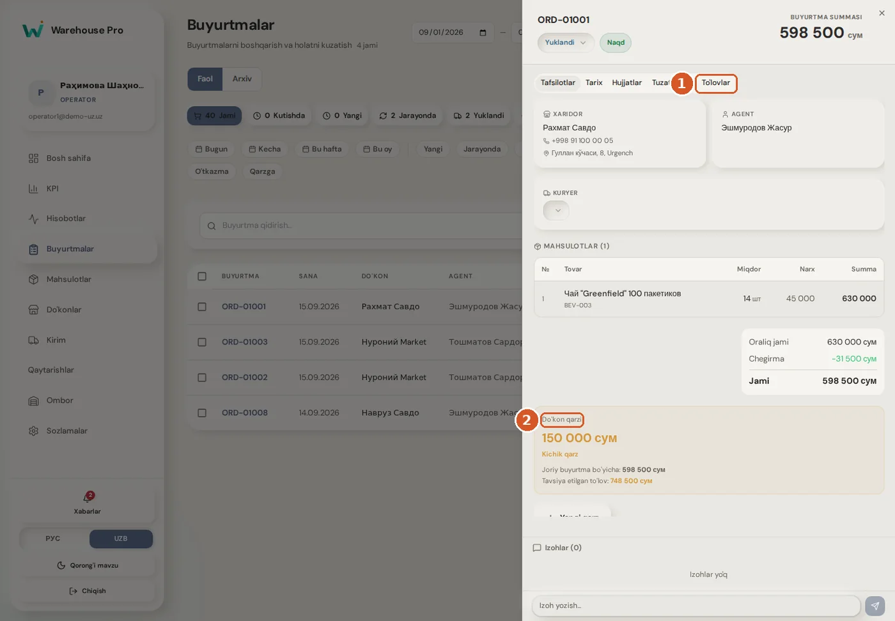
Rasm 31. Buyurtma kartasi: chapda tarkib, o'ngda «Pul» va «Kuryer»
1Holat — bu yerda dastur «Holat o'zgartirilsinmi?» deb so'raydi; «Yetkazildi» «Buyurtmani tugatish» oynasini ochadi
2Do'kon qarzi — kuryerdan qancha so'rash
«Kutishda». Agentning chegaradan katta chegirmali buyurtmasi (chegarani direktor «Sozlamalar»da qo'yadi: «Dala xodimlari uchun chegirma chegarasi, %») do'konda rad etilmaydi — ofisga «Kutishda» holatida keladi va zahirani ushlab turadi. Ofisga «ORD-… buyurtmasi tasdiq kutmoqda» degan xabar keladi.
Xulosada «Kutishda»ni bosing → buyurtmani oching. Karta tepasining ostida sariq yozuv: «Ofis tasdig'ini kutmoqda — tasdiqlash uchun holatni «yangi»ga o'tkazing», sababi bilan: N% chegirma M% chegaradan yuqori.
Tarkib va chegirmani tekshiring. Kerak bo'lsa tarkib yonidagi «Tahrirlash» yoki «Chegirma (%)» maydoni → «Saqlash».
Tasdiqlash — tepada «Yangi» holatini tanlang: buyurtma yig'ishga ketadi. Rad etish — «Bekor qilindi» holati: zahira bo'shaydi, agent buni telefonida ko'radi.
Qisman yetkazish. Kuryer «Batafsil rasmiylashtirish»ni bosgan bo'lsa (qarang: «Kuryer (telefon)»), tarkib qatorida «Qisman yetkazish — sabab» belgisi chiqadi: buyurtma qilingan miqdor chizilgan, yonida — yetkazilgani. «Tuzatmalar tarixi»da — «Qisman yetkazish» yozuvi: summa «bo'lgan → bo'ldi», kim kiritgan va nechta surat; «Pul» blokida — «Buyurtma jami» yetkazilgani bo'yicha, «Olindi», «Qo'lda» va «Qoldiq». Do'kon qarzi yetkazilgan bo'yicha hisoblanadi, buyurtma qilingan bo'yicha emas.
MaslahatKutish sababi faqat buyurtma kartasida ko'rinadi — buyurtmani oching, holatni qatordan ko'r-ko'rona o'zgartirmang. Rad etilgan buyurtmani agent to'g'ri chegirma bilan qaytadan oladi.
Buyurtma kartasi: hujjatlar, pul, kuryer
Nima uchun: bitta kartada buyurtma haqida so'raladigan hamma narsa bor: qaysi yuk xati chop etilgan, qancha olingan va qancha qarz qolgan, kim olib boryapti, nima va qachon tuzatilgan. Bo'limlar bo'ylab yurish shart emas.
«Pul»: «Buyurtma jami», «Olindi», «Qo'lda» (kuryer naqdni e'lon qilgan, lekin ofisga hali topshirmagan), «Naqdsiz yo'lda» (ko'chirmasiz karta yoki o'tkazma), «Qoldiq» — va «Hisob-kitob kutmoqda» yoki sana bilan «Hisoblangan» yozuvi. Pastda — har bir to'lov qatori; naqdsizda pul ko'chirmada tasdiqlanganda «Keldi» tugmasi.
«Pulni qabul qilish» → «Naqd olindi» (odatda — kuryer e'lon qilgani), kerak bo'lsa «Yana qabul qilindi» karta yoki o'tkazma bilan, qoldiq — muddati bilan «do'kon qarziga» → «Hisob-kitobni yopish». E'lon qilinganidan kam bo'lsa — «Kamomad», u kuryerda qoladi (batafsil — 3-qism, «Buyurtma bo'yicha hisob-kitob»).
«Kuryer»: «Kuryerni tanlang» ro'yxati — bitta buyurtmaga; butun reysga kuryer «Yuklash varaqalari»da qo'yiladi.
«Tuzatmalar tarixi»: qisman yetkazish va to'lovlar — «bo'lgan → bo'ldi», kim kiritgan, suratlar. Pastdagi izohlar — ofisning buyurtma bo'yicha yozishmasi, uni ochgan hamma ko'radi.
MaslahatDo'kon «yuk xati bo'lmagan» desa — «Harakatlar jurnali»ni «Buyurtmalar» filtri bilan oching: sana va vaqt bilan «yuk xatlari chop etildi» yozuvi bahsni yopadi. Chop etilmagan bo'lsa — kartadagi «Hujjatlar»dan chop eting.
«Bajarildi»: buyurtmani pul bilan yopish
Nima uchun: kuryer og'zaki hisobot berdi, buyurtma yetkazildi — qancha pul kelgani va qanday kelganini yozish qoldi. Bitta oyna: summa, usul, izoh. Undan keyin qoldiq chiqarilgan, to'lov ofis tomonidan yozilgan va buyurtma bo'yicha hisob-kitob darhol yopilgan — do'kon qarzi o'zi to'g'ri chiqadi.
1«Buyurtmani tugatish» — holat «Yetkazildi», pul va qarz yozildi
Buyurtma qatorida «Bajarildi»ni bosing (buyurtma jarayonda yoki jo'natilgan bo'lishi kerak).
«To'lov summasi»: «To'liq» — butun summa; bir qismi — sonni kiriting, qolgani do'konning qarzi bo'ladi; «Hech narsa» — pul bo'lmagan, butun buyurtma qarzga.
«To'lov usuli»: «Naqd», «Karta» yoki «O'tkazma» — bu P&L dagi «Nima bilan to'lashadi»ga va Nazoratdagi «Daladagi pul»ga tushadi. «ESLATMALAR» — buxgalterga aytadigan gap bo'lsa.
«Buyurtmani tugatish» → holat «Yetkazildi», kartadagi «Pul» blokida «olindi» belgisi bilan to'lov va «Hisoblangan» paydo bo'ladi, do'kon qarzida — qoldiq.
DiqqatDo'kon hammasini olmagan bo'lsa — bu shu yerda emas. Tovarning bir qismini kuryer telefonda «Batafsil rasmiylashtirish» («Qisman qaytarish») orqali qaytaradi, yoki operator — «Qaytarishlar»da. Tugatilgan buyurtma qoldiqni allaqachon chiqargan; summada adashgan bo'lsangiz — do'kon kartasida to'lovni storno qiling («Do'kon puli» → «Storno»), u jurnalda iz qoldiradi.
Telefon orqali buyurtma
«Yangi buyurtma» ikki qadamli oynani ochadi: «2 qadamdan 1-chi · do'kon va mahsulotlar» va «2 qadamdan 2-chi · tekshiruv va to'lov». Ofisda olingan buyurtma operator nomida bo'ladi. Uni do'konning agentiga yozish uchun (KPI va oylik) buyurtmani belgilang → «…» → «Agent tayinlash».
1Do'kon — nom, egasi, tuman bo'yicha qidiruv; o'ngda qizil — qarz
2Mahsulotlar — kod yoki nom; skanerdan: kod + Enter
3Savat — miqdor «−/+», «Jami»
4«Keyingi» — to'lovga; «Bekor qilish» hech narsa yozmaydi
«Yangi buyurtma» → «Do'konni nom, egasi, tuman bo'yicha qidirish…» maydoniga uchtasidan istalganini yozing → do'konni bosing. Do'kon yonida «qarz N» ko'rinadi — mijozga buni darrov ayting.
«Mahsulot qidirish…»ga kod yoki nomni yozing (yoki shtrix-kodni skanerlab Enter bosing) → «+» mahsulotni «Savat»ga soladi. Har bir mahsulotda «bo'sh N» yozilgan; nol bo'lsa «+» bosilmaydi.
Savatda miqdorni «−/+» bilan to'g'rilang → «Keyingi».
«Buyurtma yaratish». Buyurtma ro'yxatda «Yangi» holatida paydo bo'ladi va darhol qoldiqni band qiladi.
Diqqat«Qarzga» buyurtma summasini do'kon qarziga qo'shadi. Do'konda kredit limiti bo'lsa va shu buyurtma bilan qarz limitdan oshsa, dastur rad etadi: «„…“ do'konining kredit limiti oshib ketdi: qarz … + buyurtma …» — to'lovni boshqa usulda oling. Limit do'kon kartochkasida o'zgartiriladi, «Kredit limiti (bo'sh — limitsiz)» maydoni, lekin bu direktorning qarori.
MaslahatChegirma chegarasi operatorga ta'sir qilmaydi: ofisda chegirma bilan olingan buyurtma darrov «Yangi» bo'ladi. Chegirma baribir harakatlar jurnaliga tushadi.
Yuklash varaqasi
Varaqa — omborga bitta reys uchun topshiriq: tanlangan buyurtmalar uchun qaysi tovarlardan qancha yig'ish. Bitta buyurtma faqat bitta yopilmagan varaqada bo'lishi mumkin.
Buyurtmalarni belgilang (odatda bitta marshrutning «Yangi» va «Jarayonda»lari) → pastda «Yuklash varaqasi».
«Yuklash varaqasi» oynasida «Format»ni tanlang: «Jamlangan» — ombor uchun mahsulotlar bo'yicha jami; «Marshrut bo'yicha» — kuryer uchun do'konlar bo'yicha.
«Varaqa tuzish». Shu tugmagacha hech narsa yozilmaydi — «Bekor qilish» iz qoldirmaydi. Bosgandan keyin varaqa ZL-… raqamini oladi, buyurtmalar unga biriktiriladi.
Oldindan ko'rishda — «Buyurtmalar», «Pozitsiyalar», «Vazn» va qatorlar. «Chop etish» — omborchiga topshiriq. «Tayyor, chop etmasdan» — oynani shunchaki yopish.
3«Varaqa tuzish» — buyurtmalar faqat hozir biriktiriladi
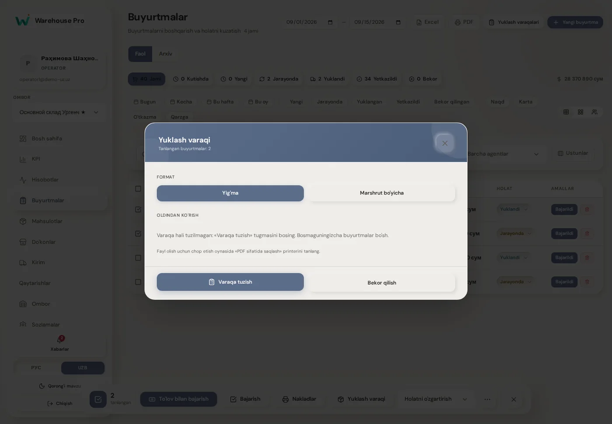
Rasm 35. Varaqa tuzildi: oldindan ko'rish va chop etish
MaslahatQog'oz o'rniga fayl olish uchun chop etish oynasida printer sifatida «Сохранить как PDF»ni tanlang. «Partiya (muddat)» ustuni omborchiga qaysi partiyani birinchi olishni aytadi — muddati yaqinini.
Varaqani yig'ish va kuryer
«Yuklash varaqalari» («Buyurtmalar» ekranining tepasidagi tugma) — oxirgi varaqalar, jo'natilganlari ham: raqami, nechta buyurtma, holati, agent, kuryer, kamomad.
2Butun varaqaga kuryer — buyurtmalar uning telefoniga ketadi
3«Yig'ish» — qatorma-qator yig'ish
4Varaqani o'chirish — buyurtmalar bo'shaydi, buyurtmalarning o'ziga tegilmaydi
«Yig'ish» → varaqa ostida jadval ochiladi: «Mahsulot», «Kerak», «Partiyalar», «Yig'ildi». «Yig'ildi»da avval «Kerak» soni turadi — faqat kamomad bo'lgan qatorlarni to'g'rilang.
Pastda — «Hammasi ro'yxat bo'yicha» yoki «Kamomad: N poz.» → «Yig'ishni tasdiqlash». Varaqa «Tayyor» bo'ladi. Kamomad qatorlarda qoladi va ofisga xabar bo'lib ketadi.
«Kuryer tayinlanmagan» maydonida kuryerni tanlang — varaqadagi hamma buyurtma uning telefonidagi «Yetkazishlar»da paydo bo'ladi.
Keyin varaqa yonidagi tugma keyingi qadamni ko'rsatadi: «Yuklanmoqda» → «Yuklandi» → «Jo'natildi». Jo'natilgan varaqa yopiq: uning buyurtmalarini qaytadan yig'ish uchun yangi varaqa kerak.
3Yakun: «Hammasi ro'yxat bo'yicha» yoki «Kamomad: N poz.»
4«Yig'ishni tasdiqlash» → varaqa «Tayyor»
DiqqatYopilmagan varaqa o'z buyurtmalarini ushlab turadi — ularni ikkinchi marta yig'ib bo'lmaydi. Xato yig'ilgan varaqani «Jo'natildi»gacha «haydab» bormang: bu bo'lmagan jo'natishni yozib qo'yadi. Varaqa yonidagi savatchani bosing — «Yuklash varaqasi o'chirilsinmi?» → «O'chirish»: buyurtmalar bo'shaydi.
Kamomad bilan nima qilish: «Ombor» → «Mavjud» va mahsulotning partiyalarini solishtiring. Javon bilan farq inventarizatsiya bilan yopiladi (quyida «Ombor»ga qarang). Buyurtmaning o'zi o'zgarmaydi — do'konga kamroq borsa, kuryer qisman yetkazishni rasmiylashtiradi.
Kirim
«Kirim» — tovarning omborga kelishi: mashina, yetkazish xarajatlari, yetkazib beruvchi va unga qarz, partiya va muddati bilan tovar qatorlari. «Kontragentlar va qarzlar» bo'limi — yetkazib beruvchilar bilan hisob-kitob.
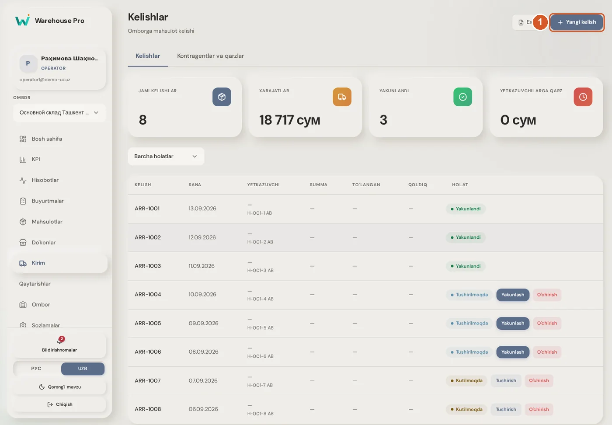
Rasm 38. «Kirim» ekrani: ro'yxat va holatlar
1«Yangi kelish»
2«Kontragentlar va qarzlar» — yetkazib beruvchilar, to'lovlar, yetkazib beruvchiga qaytarish
3Yetkazib beruvchilarga qarz — yopilmagan yetkazmalar bo'yicha summa
4«Tushirilmoqda» — kirim «Kutilmoqda» → mashina tushirilmoqda
5«Yakunlash» — faqat hozir ombordagi qoldiq oshadi
«Sana va xarajatlar»: «Sana», «Yoqilg'i», «Yo'l», «Boshqa» — «Jami xarajat» o'zi hisoblanadi va hisobotlarga tushadi.
«Yetkazib beruvchi va qarz»: «Yetkazib beruvchisiz», ro'yxatdan yetkazib beruvchi yoki «+ Yangi yetkazib beruvchi…». Yetkazib beruvchida «Qarz summasi», «Valyuta», «To'lov muddati»ni ko'rsating. Dollar bo'lsa — «Bitim kunidagi kurs».
«Mahsulotlar»: qator — «Mahsulotni tanlang…», «Miqdor», «Tannarx», «Sotish narxi», «Holati», «Kutilgan» (yuk xati bo'yicha), «Partiya», «Muddati». «Mahsulot qo'shish» — keyingi qator. Skaner: «Shtrix-kod + Enter» maydoni yoki «Skaner» tugmasi — har bir kod bitta dona qo'shadi.
«Saqlash» — kirim «Kutilmoqda» holatida yozildi, qoldiq hali o'zgarmadi. «Saqlash va yakunlash» — darrov «Qabul qilindi», tovar omborda.
Rasm 39. «Yangi kelish»: mashina, xarajatlar, yetkazib beruvchi, tovar qatorlari
1Mashina ma'lumotlari — ixtiyoriy
2Yetkazib beruvchi va qarz — «Yetkazib beruvchilarga qarz» shu yerdan olinadi
3Shtrix-kod + Enter — klaviatura-skaner
4Tovar qatori: miqdor, tannarx, sotish narxi
5«Kutilgan» — yuk xati bo'yicha; «Miqdor» bilan farqi kirimda ko'rinadi
6Partiya va «Muddati» — bularsiz muddat hisoboti va FEFO ishlamaydi
7«Mahsulot qo'shish» — keyingi qator
Ro'yxatdagi holatlar: «Kutilmoqda» → «Tushirilmoqda» tugmasi → «Yakunlash» → «Qabul qilindi». Qoldiq faqat «Qabul qilindi»da oshadi. Ungacha kirimni «O'chirish» mumkin.
Qatorni bossangiz — «Kirim tafsilotlari»: mashina, xarajatlar, mahsulotlar. «Yuk xati» va «Yorliqlar» tugmalari hujjatni va partiya uchun shtrix-kodlarni chop etadi.
«Kontragentlar va qarzlar»: filtrlar «Hammasi», «Qarzi bor», «Muddati o'tgan». Yetkazmada — «To'lash» → «Kontragentga to'lov» oynasi: «To'lov summasi», «To'lov usuli» → «To'lovni yozish». «Tovarni qaytarish» → «Qaytarish va qarzdan ayirish»: tovar ombordan chiqadi, yetkazib beruvchiga qarz tannarx bo'yicha kamayadi.
MaslahatKirim qoralamasi kompyuterda saqlanadi: oynani yopsangiz yoki aloqa uzilsa, keyingi «Yangi kelish»da «Boshlangan kirimni davom ettiramiz» chiqadi.
DiqqatKirim qatoridagi tannarx — bu partiyaning P&L dagi va ombor bahosidagi tannarxi. Bo'sh yoki noto'g'ri narx direktorning foydasini buzib ko'rsatadi. Kirimni «O'chirish» — qaytarib bo'lmaydi.
Rasm 40. «Kelish tafsilotlari»: «Kutilgan» va «Miqdor», «Partiya», «Muddati», «Tannarx», xarajatlar «Yo'l», «Yo'qilgi», «Boshqa» va «Jami xarajatlar»
1«Yorliqlar» — shu partiyaga shtrix-kod chop etish
Kontragentlar va yetkazib beruvchilarga qarz
Nima uchun: qarzga olingan kirim — bu sizning yetkazib beruvchiga qarzingiz. Dastur uni do'konning sizga qarzi kabi yuritadi: «Bizga qarzdor» va «Qarz +», to'lovlar, solishtirma dalolatnoma, qarzdan chiqarib tovar qaytarish.
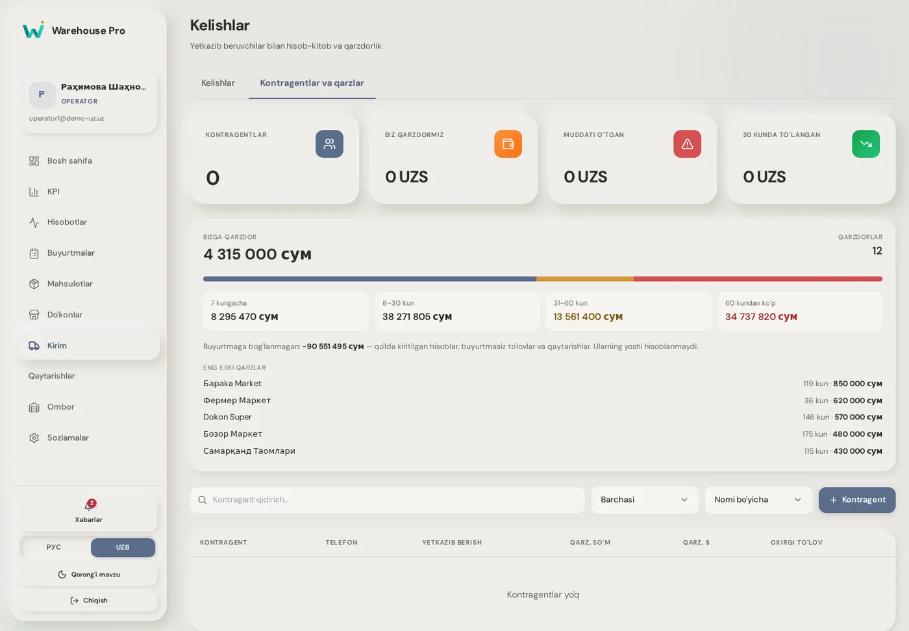
Rasm 41. «Kirim» → «Kontragentlar va qarzlar»: yetkazib beruvchilar ro'yxati, so'm va dollardagi qarz, «To'lovni yozish», «Solishtirma dalolatnoma», «Mahsulot qaytarish»
Yetkazib beruvchiga to'ladingiz — «To'lovni yozish»: summa va sana. Qarz qoldig'idan ko'pini dastur qabul qilmaydi.
Summa bo'yicha bahs — «Solishtirma dalolatnoma»: davr ichidagi hamma kirim va to'lovlar, boshlang'ich va oxirgi qoldiq bilan; chop etiladi va yuboriladi.
Yaroqsizni qaytardingiz — «Mahsulot qaytarish» → «Qaytarish va qarzdan chiqarish»: qoldiq kamayadi, qarz ham. Dollardagi qarz o'sha yetkazib berish kursi bo'yicha qayta hisoblanadi.
Do'konlardan qaytarishlar
Qaytarishni agent do'konda telefondan kiritadi; ofis uni ko'rib chiqadi va o'tkazadi. Qaytarish o'tkazilmaguncha na qoldiq, na do'kon qarzi o'zgaradi.
Qator yonidagi strelka «Qaytarish tarkibi»ni ochadi — mahsulotlar va miqdor. Kuryer olib kelgani bilan solishtiring.
«Tasdiqlash» yoki «Rad etish». Rad etilgan qaytarish pulga tegmaydi.
Tasdiqlanganida — «Omborga» (tovar yaroqli, qoldiqqa qaytadi) yoki «Hisobdan chiqarish» (brak, muddati o'tgan). Dastur so'raydi: «Qaytarish omborga o'tkazilsinmi?» / «…hisobdan chiqarilsinmi?» → tasdiqlang. Qaytarish «o'tkazildi» bo'ladi, do'konning shu buyurtma bo'yicha qarzi kamayadi.
«Oy davomida o'tkazildi — sabablar bo'yicha» bloki nima uchun qaytarishayotganini ko'rsatadi. «Muddati o'tgan» ko'payayotgan bo'lsa — «Ombor» → «Hisobotlar» → «Yaroqlilik muddati»ga qarang. «Boshqa tovar» bo'lsa — agent bilan gaplashing.
Diqqat«Omborga» va «Hisobdan chiqarish» — qaytarib bo'lmaydi: birinchisi qoldiqni oshiradi, ikkinchisi yo'q, lekin do'kon qarzini ikkalasi ham kamaytiradi. Yetkazib beruvchiga qaytarish bu yerda emas — «Kirim» → «Kontragentlar va qarzlar»da.
Ombor: qoldiq, zahira, bo'sh
Rasm 43. «Ombor» ekrani, «Qoldiqlar» bo'limi
1«Mavjud» = «Jami» − «Zahira»; sotish faqat shuni mumkin
2«Zahira» — ochiq buyurtmalar ushlab turgan tovar
3«Ko'chirishlar» — omborlar orasida
4«Inventarizatsiya» — hujjat bilan qayta sanash
Mahsulot qatori: «Mavjud», «Vazn», «Zahira», «Jami», «Chegara». Qizil uchburchak — qoldiq qayta buyurtma chegarasidan past (chegara mahsulot kartochkasida qo'yiladi).
«Tuzatish» → «Tovar harakati»: «AMAL TURI» — «Kirim» (qo'shish), «Chiqim» (hisobdan chiqarish), «Tuzatish» (aniq miqdorni qo'yish) → «MIQDOR» → «IZOH» (masalan: «mijozdan qaytdi») → «Qo'llash». Har bir harakat tarixda qoladi.
Plitkalar ostidagi bo'limlar lentasi: «Qoldiqlar»; «Qayta buyurtma» — nima allaqachon chegaradan past va sotuv tezligiga ko'ra qancha buyurtma qilish; «O'lik stok» — N kun sotilmagan tovarlar; «Prognoz» — qachon tugaydi; «Hisobotlar» — yaroqlilik muddatlari, kategoriyalar, harakat, aylanma; ikki omborda — «Taqqoslash» va «Ko'chirishlar»; qoldiqni tuzatish huquqi bilan — «Inventarizatsiya». Bo'limdagi hisoblagich faqat raqam harakatga chaqiradigan joyda turadi.
Inventarizatsiya: «Yangi inventarizatsiya» shu paytdagi qoldiqni oladi → javonni sanang («Shtrix-kod + Enter» maydoni yoki «Skaner» bittadan qo'shadi; «Faqat farqlar» — filtr) → «Qo'llash». Ortiqcha va kamomad donada va tannarx bo'yicha ko'rsatiladi. «Bekor qilish» — hech narsani o'zgartirmaydi.
O'ng yuqorida — «Excel» (qoldiqlar) va «Baho» (tannarx bilan qoldiqlar — rol uni ko'rsa). Jadval ustida — qidiruv, «Barcha kategoriyalar» va «Chegaradan past» chipi: erkin qoldig'i chegaradan oshmagan qatorlarni qoldiradi. Jadval ostida — qatorlar hisoblagichi, «Yana ko'rsatish» va sokin «Qoldiq satrlarini yaratish» havolasi: hali qoldiq satri bo'lmagan mahsulotlar uchun (ombor paydo bo'lishidan oldin yuklangan eski katalog).
DiqqatInventarizatsiyani «Qo'llash» — bu farqga qoldiq harakati: kamomad tannarx bo'yicha hisobdan chiqadi va P&L ga tushadi. Bir qoralamada bir necha kun sanang, lekin bir marta qo'llang.
Ombor ilovalari: o'lik stok, qayta buyurtma, prognoz, inventarizatsiya
Nima uchun: qoldiq — bu «qancha bor». To'rtta ilova keyingi savollarga javob beradi: nima harakatsiz yotibdi, nimani buyurtma qilish vaqti keldi, qachon tugaydi va hisob javon bilan to'g'ri keladimi.
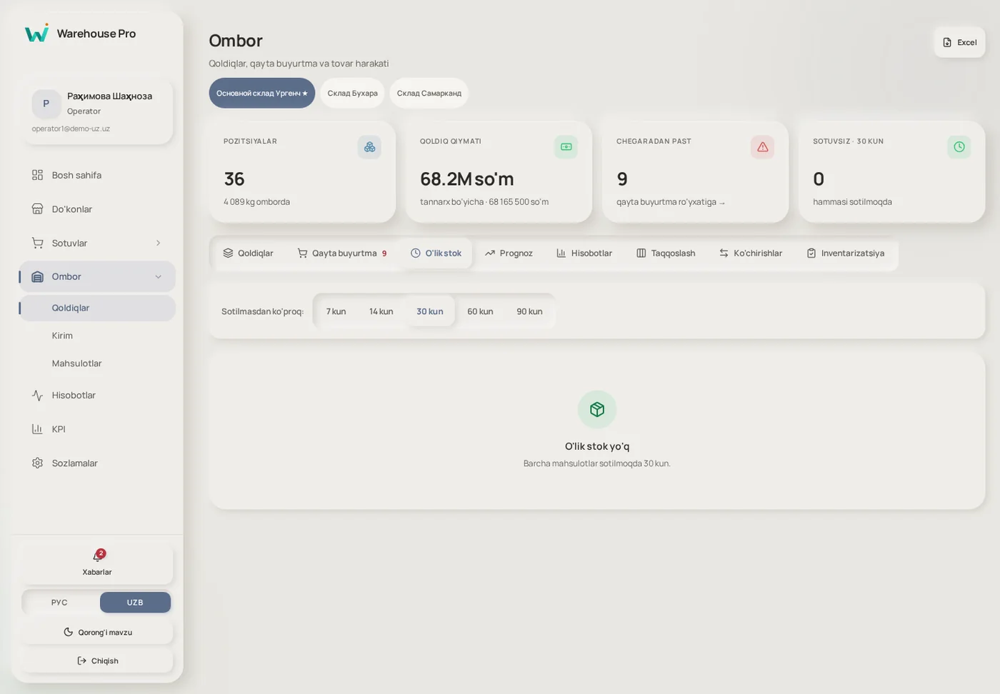
Rasm 44. «O'lik stok»: «Sotilmasdan ko'proq» N kun yotgan mahsulotlar — javonda yotgan pul. «Eksport» ro'yxatni Excel'ga beradi
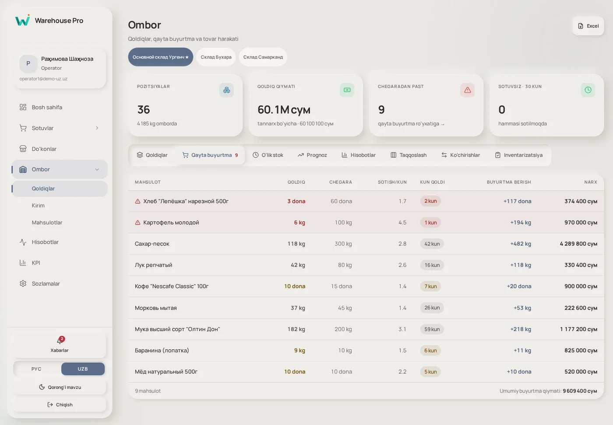
Rasm 45. «Qayta buyurtma»: «Qayta buyurtma tavsiyalari» — nima allaqachon «Qayta buyurtma chegarasi»dan past va qanchaga
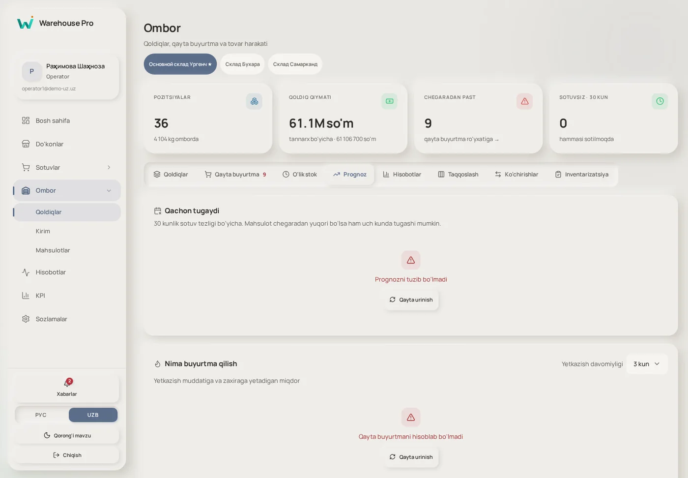
Rasm 46. «Prognoz»: «Kuniga» qancha sotiladi, «Qachon tugaydi», «Yetkazish davomiyligi» necha kun — va tovarsiz qolmaslik uchun qancha «Buyurtma» qilish
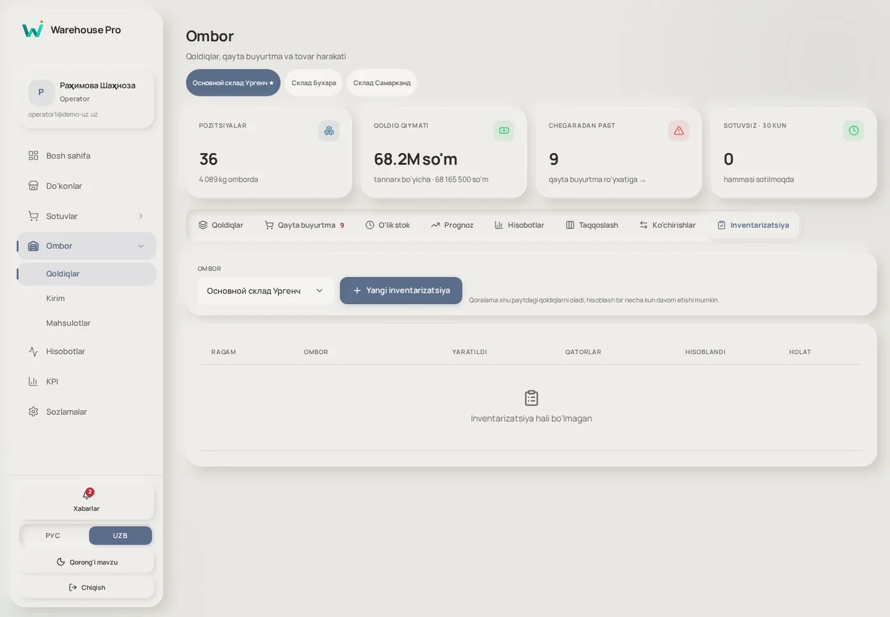
Rasm 47. «Inventarizatsiya»: qoldiq surati bilan hujjat. «Yangi inventarizatsiya» → javonni sanaysiz («Skaner» ham mumkin) → «Qo'llash» — hammasi birdan
1«Yangi inventarizatsiya» — shu paytdagi hisobdagi qoldiqni qayd etish
«Yangi inventarizatsiya»: dastur har bir mahsulot bo'yicha shu paytdagi «HISOBDA»ni eslab qoladi. Keyingi sotuvlar xalaqit bermaydi — bemalol sanang.
«HISOBLANDI»ni qo'lda kiriting yoki «Skaner»: har bir o'qish bitta qo'shadi. Farq darhol ko'rinadi: «Kamomad» yoki «Ortiqcha».
«Qo'llash» — qoldiq hisoblanganga teng bo'ladi, farq harakatlar jurnaliga tuzatish sifatida tushadi. «Bekor qilish» — hisoblanganlar yo'qoladi, qoldiqlar o'zgarmaydi.
Bir nechta ombor: taqqoslash va ko'chirish
Nima uchun: tovar ikki joyda yotganda ikkita javob kerak — qayerda qancha va qanday olib o'tish. Sotuv esa doim asosiy ombordan boradi: agentning buyurtmasi aynan uning qoldig'ini band qiladi.
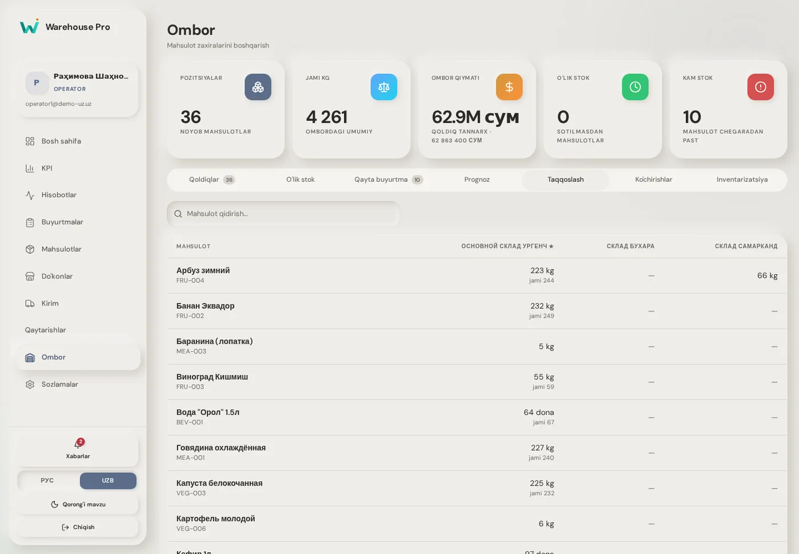
Rasm 48. «Taqqoslash»: bitta jadval — qatorda mahsulot, ustunlarda omborlar. Qayerda bo'sh, qayerda ortiqcha yotgani darhol ko'rinadi
1«Mahsulot qidirish…» — jadvalni toraytirish
2Ustunlar — omborlar; qalin — asosiysi
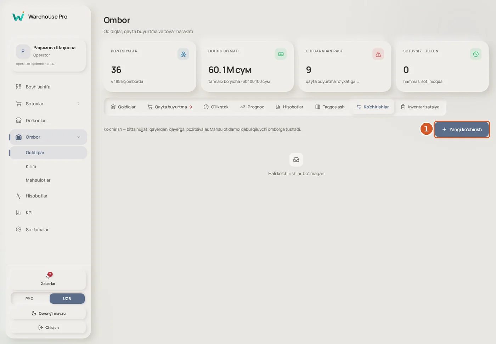
Rasm 49. «Ko'chirishlar»: «Yangi ko'chirish» va tarix — «Qayerdan → qayerga», pozitsiyalar, sana, kim o'tkazgan
1«Yangi ko'chirish» — bir nechta mahsulotga hujjat
2«O'tkazish» — qoldiq bir ombordan chiqib, ikkinchisiga bir qadamda kiradi
«Ombor» → «Ko'chirishlar» → «Yangi ko'chirish». «Qayerdan» va «Qayerga»ni tanlang — ikkita ombor, har xil.
Mahsulot nomini yozishni boshlang, ro'yxatdan tanlang, «Miqdor»ni qo'ying. Manba ombordagi mavjuddan ko'pini dastur o'tkazmaydi.
«O'tkazish» → «Ko'chirish o'tkazilsinmi?» → «O'tkazish». Qoldiq ikkala omborda birdan o'zgaradi; «Harakatlar jurnali»da ikkala ombor bilan «Ko'chirish o'tkazildi» yozuvi paydo bo'ladi.
MaslahatOperator ham ko'chira oladi — agar direktor «Sozlamalar» → «Operator huquqlari»da unga «Qoldiqlarni tuzatish va ko'chirish» belgisini qo'ygan bo'lsa. Belgisiz operatorda «Yangi ko'chirish» tugmasi yo'q.
DiqqatKo'chirish — sotuv emas: undan qarz va tushum o'zgarmaydi. Ikkinchi ombordagi tovarni asosiyga olib o'tmaguncha agentlar sota olmaydi.
«Ombor» → «Hisobotlar»: nima muddati tugayapti
Bu «Ombor» sahifasidagi «Hisobotlar» bo'limi. Tepada — baho satri: «Chakana baho», foiz bilan «Marja» va bo'limlar ustidagi plitkadagi tannarx bo'yicha qiymat; «Excel» va «PDF» hisobotni to'liq yuklab beradi.
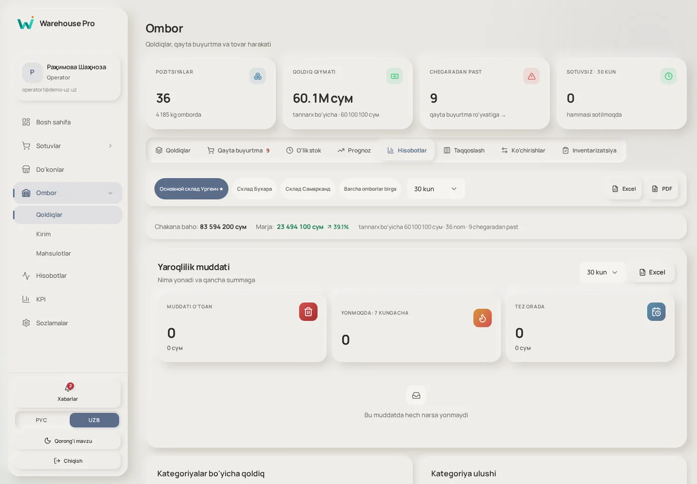
Rasm 51. «Ombor» → «Hisobotlar»: yaroqlilik muddatlari, kategoriyalar, harakat va aylanma
1Hisobot davri: 7, 14, 30, 90 kun
2Excel / PDF — butun hisobot
3«Yaroqlilik muddatlari» — nima tugayapti va qancha summaga
4«Muddati o'tgan» — jo'natishga ketmaydi, faqat hisobdan chiqarish yoki yetkazib beruvchiga qaytarish
5«Yonyapti: 7 kungacha» — birinchi sotish kerak
6«Tez orada» — tanlangan davr ichida
Muddatli partiyalar kirim qatorlaridan olinadi («Partiya», «Muddati»). Muddatsiz kirim bu hisobotga tushmaydi.
Muddati o'tganni hisobdan chiqarish: «Ombor» → «Inventarizatsiya» (yoki «Tuzatish» → «Chiqim») orqali, yoki «Kirim» → «Kontragentlar va qarzlar» → «Tovarni qaytarish». Muddati o'tgan partiya jo'natishga tushmaydi — FEFO uni o'tkazib yuboradi.
Pastda — «Kategoriyalar bo'yicha qoldiq», «Kategoriyalar ulushi», «Tovar harakati» (davr uchun kirim/chiqim), kirimlardagi «Yetkazish xarajatlari», «Qiymat bo'yicha top mahsulotlar», «Aylanma».
Mahsulotlar va do'konlar
Rasm 52. «Mahsulotlar» ekrani: katalog
1«Qo'shish» — yangi mahsulot
2«Import» — Excel dan katalog (.xlsx, .xls, .csv)
3Nom yoki kod bo'yicha qidiruv
4«Kategoriyalar» — yaratish va qayta nomlash
5«Kam qoldiq» — nechta mahsulot chegaradan past
«Qo'shish» → «Yangi mahsulot»: majburiy «Kod *», «Nomi *», «Sotish narxi *». «Shtrix-kod» — skaner uchun. «Tannarx» — hali kirim bo'lmaganda. «Qayta buyurtma chegarasi» qoldiqni qizil qiladi. «Qadoqda, dona» va «Qadoq nomi» — kirimda quti bilan kiritish uchun. «1 dona vazni, kg» — varaqa vaznini hisoblaydi → «Saqlash».
Mahsulot kartochkasi: narx, «tannarx», kategoriya, qoldiq; o'ngdagi savatcha — o'chirish. Buyurtma yoki kirim tarixi bor mahsulot o'chirilmaydi — faol emas bo'ladi va katalogdan chiqadi.
Rasm 53. «Do'konlar» ekrani: hududlar va qidiruv
1«Qo'shish» — yangi nuqta
2«Barcha do'konlar» — hududlar o'rniga oddiy ro'yxat
3Qidiruv: nom, egasi, telefon
4«Faqat qarzdorlar» — kimga qo'ng'iroq qilish
«Qo'shish»: «Nomi *», «Egasi», «Telefon», «Shahar», «Tuman», «Manzil», «— Agent —», «— Hudud —», «Izoh». Agentsiz nuqta uning telefonidagi «Do'konlar»da, tashrif rejasida va KPI sida ko'rinmaydi.
Do'kon «qancha qarzman?» deb qo'ng'iroq qilsa — uning kartochkasini oching: «JORIY QARZ», «Do'kon puli» (30 kunlik to'lovlar, xatosini «Bekor qilish»), «To'lov qo'shish» — ofisda olingan pul. Davr uchun «Solishtirma dalolatnoma» — mijoz uchun «Chop etish» yoki Excel.
«Arxivga» nuqtani rejalardan, xaritadan va qidiruvdan olib tashlaydi, lekin buyurtma va qarzni qoldiradi. «Ishga qaytarish» — orqaga. «Butunlay o'chirish» faqat tarixi yo'q nuqta uchun.
Rasm 54. «Qo'shish»: yangi mahsulot kartochkasi — kod, nomi, narxlar, kategoriya, shtrix-kod, qayta buyurtma chegarasi, qadoq, vazn va rasm
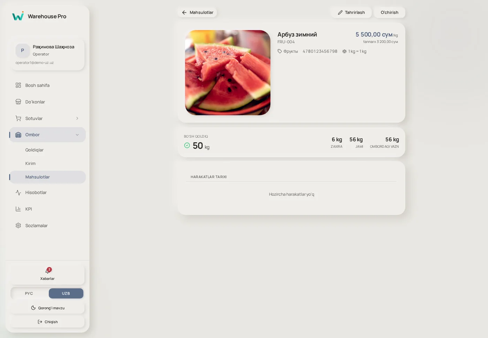
Rasm 55. Mahsulot sahifasi: katta rasm, narx va tannarx, zahira va «Mavjud» bilan qoldiq, partiyalar va harakatlarRasm 56. Do'kon kartochkasi: qarz va to'lovlar, do'kon buyurtmalari, tashrif hisobotlari, «Arxivga» / «Ishga qaytarish»Rasm 57. Do'konlarni Excel'dan «Import»: shablon → to'ldirish → yuklash → dastur nimani qabul qilganini tekshirishRasm 58. «Territoriyalar»: markaz va radiusli rangli hududlar; «Avtotayinlash» do'konlarni shaharlar, tumanlar yoki do'konlarning o'zi bo'yicha taqsimlaydi
Shtrix-kodlar
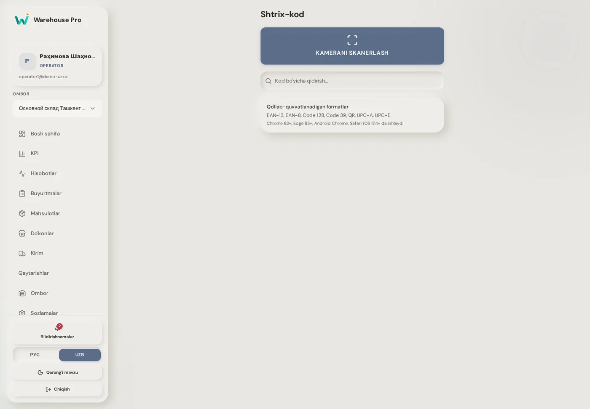
Rasm 59. «Shtrix-kodlar» ekrani (/barcode)
1«KAMERA BILAN SKANERLASH» — noutbuk yoki telefon
2Kod yoki nom bo'yicha qidiruv — narx va qoldiqni ko'rsatadi
Topilgan mahsulot: «Buyurtma» — yangi buyurtma ustasiga o'tish (/orders/new), mahsulot u yerda qaytadan tanlanadi. Printer belgisi — «CHOP ETISH NAVBATI»ga → «Yorliqlarni chop etish».
MaslahatKlaviatura-skaner mahsulot qidiruv maydoni bor har joyda ishlaydi: «Yangi buyurtma»da, kirimda, inventarizatsiyada. Kodni skanerlang — mahsulot qo'shiladi, keyingi skan keyingisini qo'shadi. Qabul qilishda bu har qanday ro'yxatdan tez.
Kun oxiri — tekshiring
Tekshiruv
«Buyurtmalar» → «Kutishda» = 0: har biriga «Tasdiqlash» yoki «Rad etish» bosilgan.
«Yuklash varaqalari»: ketganlari — «Jo'natildi», xatolari — o'chirilgan, kamomadlar hal qilingan.
«Buyurtmalar» → «Hisob-kitob kutmoqda» = 0: har bir yetkazilgan buyurtma bo'yicha kuryerning puli qabul qilingan — kartada «Hisob-kitobni yopish» yoki summa bilan «Bajarildi».
«Kirim»: tushirilgan mashinalar — «Qabul qilindi», qatorlarda partiya va «Muddati» bor.
ErtalabBosh sahifa: tushum, yetkazildi, qarzlar, ogohlantirishlar; xarita — kim ishga chiqdi
KunAgentlar KPI si, «Kutishda» va bahsli buyurtmalar, harakatlar jurnali
KechqurunKun hisobotlari; haftada bir — P&L; oyda bir — oylik
Direktorga hammasi ochiq: «Bosh sahifa», «Sotuvlar», «Do'konlar», «Ombor», «Jamoa», «Moliya», «Sozlamalar», «To'lov», «Harakatlar jurnali». Bu bobda — boshqalarda yo'q sahifalar: «Bosh sahifa», «Hisobotlar» va «P&L» («Moliya»), «Ish haqi» va «Foydalanuvchilar» («Jamoa»), «Sozlamalar», «To'lov» va «Harakatlar jurnali»; «Nazorat» 3-qismda. Xarita, rejalar va KPI direktorda supervayzerdagidek — «Supervayzer» bobiga qarang. Buyurtmalar, kirim va ombor — «Ofis operatori va ombor» bobida.
Bosh sahifa — kunning 5 ta savoli
Rasm 60. Bosh sahifa: 4 ta plitka, ogohlantirishlar lentasi, dinamika va ishdagi buyurtmalar
1Bugungi tushum va «kechaga nisbatan» strelkasi; bossangiz — «Hisobotlar»
2Bugun nechta buyurtma olindi; bossangiz — «Buyurtmalar»
3Bugun yetkazildi N tadan M — yetkazilmaganlar bor ekan, sariq
4Hozirgi paytda hamma do'konning qarzi; bossangiz — «Hisobotlar» → «Qarzlar»
590 kunlik «Yalpi foyda»: tushum minus qaytarishlar va tannarx
6Ogohlantirishlar — har bir kartochka shu masala hal qilinadigan ekranga olib boradi
7Savdo dinamikasi: 7 kun, 30 kun yoki oy
8Ishdagi buyurtmalar — hozir ochiqlari, yetkazilgan va bekor qilinganlarsiz
Plitka
Nimani hisoblaydi
Bossangiz qayerga olib boradi
«Tushum · bugun»
Bugun olingan va allaqachon yetkazilgan buyurtmalar summasi. Strelka — kechaga nisbatan; kecha bo'sh bo'lsa, strelka yo'q.
«Hisobotlar»
«Buyurtmalar · bugun»
Bugun nechta buyurtma olindi; pastdagi qatorda «Bugun yetkazildi N tadan M»: N — bugun yetkazilgani, M — kuryerlarga tayinlangan, lekin hali yetkazilmaganlar bilan birga.
«Buyurtmalar»
«Mijozlar qarzi»
Hozirgi paytda hamma do'konning qarz summasi.
«Hisobotlar» → «Qarzlar»
«Yalpi foyda»
Oxirgi 90 kun uchun: (tushum − qaytarishlar − tannarx) / (tushum − qaytarishlar). Tannarx sotuv paytidagi buyurtma qatorlaridan olinadi.
«Hisobotlar»
Plitkalar ostidagi ogohlantirishlar lentasi — bugun javob berish kerak bo'lgan narsalar. Ko'pi bilan 4 tasi, shoshilinchlik tartibida: yaroqlilik muddati, qoldiq, yangi buyurtmalar, tashrif rejasi, qarzlar. Ogohlantirish matni doim rus tilida, o'zbek interfeysida ham.
Ogohlantirish
Qachon chiqadi
Qayerga olib boradi
«Muddati o'tgan partiyalar: N»
Omborda muddati o'tgan partiyalar bor; summa — xarid narxi bo'yicha
«Ombor» → «Hisobotlar»
«Bir haftada tugaydi: N part.»
Yaroqlilik muddati yaqin 7 kunda tugaydi
«Ombor» → «Hisobotlar»
«Kam qoldiq: mahsulot»
Asosiy ombordagi bo'sh qoldiq buyurtma nuqtasidan past (5 tagacha mahsulot)
«Ombor»
«N ta yangi buyurtma»
«Yangi» holatidagi buyurtmalar ofisni kutmoqda
«Buyurtmalar»
«Reja: 5/13 (38%)»
Hamma agent bo'yicha bugungi tashriflar; qizil — yarmidan kam bajarilgan
«Tashrif rejasi»
«Qarz: do'kon»
Do'kon qarzi 500 000 so'mdan ko'p (eng katta uchtasi)
«Hisobotlar» → «Qarzlar»
Ertalab, ikki daqiqa: 4 ta plitkaga qarang → ogohlantirishlarni chapdan o'ngga ko'rib chiqing → «Ishdagi buyurtmalar»ni oching: tushga yaqin «Yangi»lar ko'p bo'lsa — ofis ulgurmayapti.
17:00 dan keyin «Yetkazildi N tadan M» sariq bo'lsa — operatorga qo'ng'iroq qiling: kuryerlar hisobot bermagan yoki varaqa yopilmagan.
Pastdagi «Oxirgi buyurtmalar» — eng yangi o'ntasi; o'ngdagi strelka to'liq ro'yxatga olib boradi.
MaslahatPlitkalar har bir yangi buyurtma va holat o'zgarishida o'zi yangilanadi — sahifani qayta yuklash shart emas. Faqat «Kam qoldiq» ogohlantirishi asosiy ombor bo'yicha hisoblanadi.
Hisobotlar — umumiy, savdo, agentlar, qarzlar
Rasm 61. Hisobotlar: davr, 4 ta bo'lim, «Xulosa», «Chop etish» va yuklamalar katalogi
1Davr — 7, 30 yoki 90 kun; sanalar sarlavha ostida ko'rinadi
2«Xulosa» — butun sahifa qanday bo'lsa, shunday Excel
3«Chop etish» — chop etish oynasi; fayl uchun printer sifatida «Сохранить как PDF»ni tanlang
4«Qarzlar» — to'rtinchi bo'lim; yonida «Umumiy», «Savdo», «Agentlar»
5«Barcha yuklamalar» — tayyor Excel hisobotlar katalogi
6«Bugungi reja» — agentlar bo'yicha tashriflar, hozirgi holatda
7«Eng ko'p qarzdorlar» — birinchi kimga qo'ng'iroq qilish
«Umumiy»: davr uchun tushum, buyurtmalar, o'rtacha chek va «Qarzda qolgan» — o'tgan shunday davr bilan solishtirib; tashriflar va buyurtmalar grafigi; top mahsulotlar, do'konlar, agentlar.
«Savdo»: do'konlar bo'yicha, to'lov usullari bo'yicha, davr uchun top mahsulotlar.
«Agentlar»: agentlar jadvali va pastda «Har bir agent nimani sotadi» — o'z sanalari uchun mahsulotlar bo'yicha savdo tarkibi.
«Qarzlar»: hozirgi qarzdorlar va «Qarz arxivi» — qachon olingan va qachon to'langan.
Rasm 62. Qarzlar: kim, qancha, qachondan beri; jadval ostida — harakatlar arxivi
1«Bizga qarz» — umumiy summa va qarzdorlar soni
2Qarz muddati: 7 kungacha, 8–30, 31–60, 60 dan ko'p
3«Buyurtmaga bog'lanmagan» — qo'lda yozilgan qarzlar va buyurtmasiz to'lovlar; ularda muddat hisoblanmaydi
4«Muddat» — do'konning eng eski buyurtmasi necha kun turibdi
5«Excel» — qarzdorlar jadvali fayl bo'lib
«Hisobotlar» → «Qarzlar»ni oching: tepada — summa va muddat bo'yicha 4 ta guruh.
To'q sariq «31–60 kun» va qizil «60 dan ko'p» guruhi — bugunoq agentga qo'ng'iroq. Muddati 60 kundan oshgan do'konni oldindan to'lovga o'tkazing.
Jadval ostida — «Qarz arxivi»: do'kon va davrni tanlang → «Qarzga olindi», «To'landi», «Qarz o'zgarishi» va har bir harakat hujjati bilan ko'rinadi.
DiqqatQarz buyurtma bo'yicha hisoblanadi: yetkazilgan summa minus shu buyurtma bo'yicha to'lovlar. Operator kuryer hisobotidan oldin buyurtmani qo'lda «Yetkazildi»ga o'tkazsa, do'kon qarzi hali yetkazilmagan tovar hisobiga oshadi. Qoidalar — «3-qism»da.
Rasm 63. «Sotuvlar»: kunlar, mahsulotlar va kategoriyalar bo'yicha tushum. Davr — yuqorida; «Excel» jadvalni beradiRasm 64. «Agentlar»: har biri bo'yicha sotuv, tashrif va yig'ilgan qarz — kimni maqtash, kim bilan gaplashish
«Sotuvlar» «nima sotilyapti?»ga javob beradi: tushumni tortayotgan mahsulot yoki kategoriya, va umuman sotilmayotganlar — ularning o'rni «O'lik stok»da.
«Agentlar» «kim sotyapti?»ga javob beradi: summa, buyurtmalar soni, o'rtacha chek va tashriflar. Tashrif ko'p, buyurtma kam — agent yuradi, lekin sotmaydi; aksincha bo'lsa — kirmasdan telefon orqali sotadi.
P&L — foyda qildikmi yoki zarar
Rasm 65. «Daromad va xarajatlar»: davr uchun javob, 4 ta plitka, oylar bo'yicha dinamika
3«Davrda foyda» yoki «Davrda zarar» — sahifaning asosiy javobi
4Yalpi va sof foyda foizda; «p.p.» — o'tgan davrga nisbatan o'zgarish
5Tannarx — sotuv paytidagi kirim partiyalari bo'yicha
6Xarajatlar — berilgan oylik, yetkazish (yoqilg'i, yo'l)
7Ustunlar — tushum va tannarx, chiziq — sof foyda
8«Excel» — 4 ta varaq: xulosa, solishtirish, mahsulotlar bo'yicha, to'lov bo'yicha
9«PDF» — chop etish oynasi orqali bosma shakl
Formula: yetkazilgan buyurtmalar tushumi − qaytarishlar − tannarx = yalpi foyda; minus berilgan oylik va yetkazish xarajatlari = sof foyda.
Javob ostidagi chiziq tushum qayerga ketganini ko'rsatadi: xarid, oylik, «Qoldi».
Grafik ostida: «Nimadan foyda qildik» — mahsulotlar bo'yicha foyda va marja; «Qanday to'lashadi» — naqd, o'tkazma, qarz; «Yetkazishga qancha ketdi» — yoqilg'i va yo'l bilan kirimlar.
DiqqatTannarx kirimdagi xarid narxidan olinadi. Kirimlar narxsiz kiritilgan bo'lsa, tannarx nolga teng, foyda esa 100% ko'rsatadi — suratdagidek. Bu foyda emas, bu to'ldirilmagan kirimlar: operatordan har bir qatorga xarid narxini yozishni so'rang.
MaslahatHaftada bir marta: «30 kun» → «Foyda»ni o'tgan davr bilan solishtiring → «Nimadan foyda qildik»ni oching va foydasi 10% dan past mahsulotlarni toping — ularni yo qimmatroq sotish, yo arzonroq olish kerak.
Oylik — hisoblash va berish
Rasm 66. Oylik: davr uchun fond, hisoblash tarkibi, odamlar bo'yicha qatorlar, «Hammaga berish»
1Davr: «Hafta», «Oy», «Chorak»; strelkalar — orqaga va oldinga
2«Vedomost» — davr uchun hamma xodim bo'yicha Excel
3To'lov fondi: jami hisoblandi, to'landi, to'lanishi kerak
4Tarkibi: okladlar, komissiya, yetkazishlar uchun, tushlik va yo'l puli
5«To'lovlar · N» — orderlar bilan berish jurnali
6«Faqat qoldiq bilan» — hammasi berilganlarni yashirish
7«To'lash» — bittaga berish: to'lov yoki avans, summa, izoh
8«Oklad» — oylik oklad va savdodan komissiya, %
9«Hammaga berish» — har kimga o'z qoldig'i bitta tugma bilan; tasdiqlash majburiy
«Oy»ni va strelkalar bilan kerakli oyni tanlang. Sarlavha ostida — hisobda nechta xodim.
«Hisoblash tarkibi»ni tekshiring: «Okladlar» nolga teng bo'lsa — okladlar qo'yilmagan. Xodim qatoridagi «Oklad»ni bosing → «Oylik oklad» va «Komissiya, savdodan %»ni kiriting → «Saqlash». Oklad joriy taqvim oyiga yoziladi, ekranda o'tgan oy bo'lsa ham; o'tgan oylar o'zgarmaydi.
Agent qatorida «shubhali tashriflar uchun ushlab qolish taklif qilingan» yozuvi chiqishi mumkin — «qo'llash»ni bosing yoki shundayligicha qoldiring. Direktor hal qiladi, dastur faqat taklif qiladi.
Bittaga berish: «To'lash» → «To'lov» yoki «Avans» → summa yoki «Butun qoldiq» → izoh → «Berilganini yozish».
Hammaga berish: «Faqat qoldiq bilan» → «Hammaga berish» → oynada nechta odamga va qancha ekani ko'rinadi → «To'lash».
Xodim to'lovni telefonida ko'radi va «Oldim»ni bosadi. «To'lovlar»da «Olindi» ustunida «kutilmoqda» o'rniga sana chiqadi. O'sha yerda — «Berdi» / «Oldi» imzolari bilan «Orderni chop etish».
DiqqatTo'lov yozuvi o'zgartirilmaydi va o'chirilmaydi. Xato berilgan pul minus bilan qarshi yozuv orqali yopiladi. «Hammaga berish»dan oldin sarlavhadagi oyni tekshiring — tugma aynan shu oyning qoldig'ini beradi.
MaslahatStavkalar bir joyda: «KPI» → «Oylik sozlamasi». U yerda «Agentlar komissiyasi» (yetkazilgan buyurtmalar tushumidan %), «Kuryerlarga yetkazish uchun to'lov» (donasiga summa yoki yetkazilgandan % — har birida alohida tanlanadi), «Tushlik va yo'l puli» (ish kuni uchun) va «Mahsulotlar bo'yicha foizlar» — alohida pozitsiyalar uchun istisnolar. Stavka keyingi hisobga qo'llanadi; allaqachon hisoblangan oyni «Oy komissiyalarini qayta hisoblash» tugmasi qayta hisoblaydi.
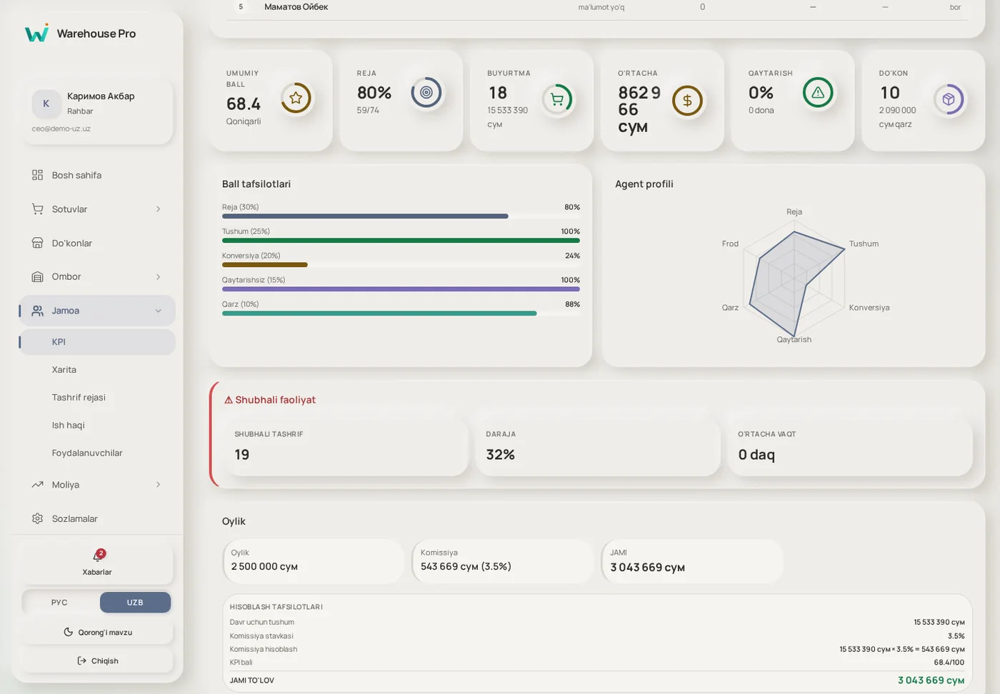
Rasm 67. KPI: agentni bossangiz — ball tahlili, shubhali tashriflar va davr uchun oylik
3Shubhali harakat: do'kondan 500 m dan uzoq tashrif, 5 daqiqadan qisqa, bir kunda bitta do'konga ikkitadan ko'p, yoki GPS almashtirilgan
4Davr uchun oylik: oklad, komissiya, jami
5Hisob tafsiloti — komissiya qayerdan kelgan
Rasm 68. «To'lovlar»: davr ichida berilgan — xodim, sana, summa va u telefondan olganini tasdiqlagani belgisi
«Hisoblangan» — qancha tegishli; «To'lovlar» — qancha berilgan. Ular orasidagi farq — «berish uchun qoldiq», «Hammaga berish» tugmasi shu bo'yicha ishlaydi. P&L ga xarajat sifatida hisoblangani emas, berilgani tushadi.
Foydalanuvchilar — yaratish, parolni tiklash, o'chirish
Rasm 69. Foydalanuvchilar: hisoblagichlar, qidiruv, rol, amallar qatori
6O'chirgich — «O'chirish»: kirish yopiladi, tarix qoladi
7Belgi — agentning xaritadagi «Ish zonasi»
«Yaratish»ni bosing → «Ism», «Email», «Parol» (kamida 8 ta belgi)ni kiriting → «Rol»ni tanlang → «Foydalanuvchi yaratish». Xodim shu email va parol bilan darhol kiradi — vebda ham, ilovada ham.
Rollar ro'yxatida «Rahbar» yo'q: kompaniyada direktor bitta.
Kompaniyadan ketdi: o'chirgich belgisi → «O'chirish». Odamning buyurtmalari, tashriflari va oyligi hisobotlarda qoladi. Qaytarish — o'sha belgi bilan, «Yoqish».
Eskisining o'rniga yangi odam keldi: qalqon belgisi — «Kirishni topshirish» → «Yangi login (Email)» va «Yangi parol» → «Saqlash». Do'konlar va tarix unga o'tadi, eski kirish yopiladi.
Agentlarda to'rtinchi belgi bor — «Ish zonasi»: xaritadagi hudud, uning ichidagi tashriflar normal hisoblanadi.
Jadval ostida — «Takliflar» (birinchi kirish yordamchisi orqali kim chaqirilgan va kim hali kirmagan; «muddat o'tdi — qayta chaqiring») va «Agentlar hududlari»: har bir agentda o'z hududlari, «O'zgartirish» tugmasi. Hudud — bu supervayzer oylik rejani tuzadigan marshrut.
DiqqatKetgan odamning o'rniga o'sha ism bilan yangi foydalanuvchi yaratmang — hisobotlarda ikki odam bo'lib qoladi. «Kirishni topshirish» yoki o'chirishdan foydalaning.
Rasm 70. «Yaratish»: ism, email, parol va lavozim. Parolni siz qo'yasiz — xodim uni «Profil»da o'zgartiradi
Harakatlar jurnali — kim va qachon
Rasm 71. Harakatlar jurnali: bo'limlar bo'yicha filtrlar, «Yangilash», «CSV yuklab olish». Yangi kompaniyada bo'sh — bu normal
3«CSV yuklab olish» — buxgalter uchun jurnal fayl bo'lib
Bu yerga muhim harakatlar yoziladi: buyurtma bekor qilindi, to'lov bekor qilindi, holatlar ommaviy o'zgartirildi, yuk xatlari chop etildi, do'konning kredit limiti o'zgartirildi, ombor tuzatildi va inventarizatsiya, mahsulot yoki narxlar ro'yxati o'chirildi.
Va kirish bilan bog'liq harakatlar: parol tiklash, kirishni topshirish, o'chirish, operator huquqlari, API kalitlari, tasdiq kodini yoqish va o'chirish.
Har bir yozuvda — kim, qachon va «Tafsilotlar»: aynan nima o'zgardi. Qatorni bossangiz, ular ochiladi.
MaslahatHaftada bir marta «To'lovlar» filtrini oching: har bir bekor qilishning tushunarli sababi bo'lishi kerak. Jurnal dasturdan tozalanmaydi — yozuvlar saqlanadi; eski yozuvlarni faqat dastur yetkazib beruvchisi tozalaydi, va bu ham jurnalga tushadi.
To'lov — tarif va limitlar
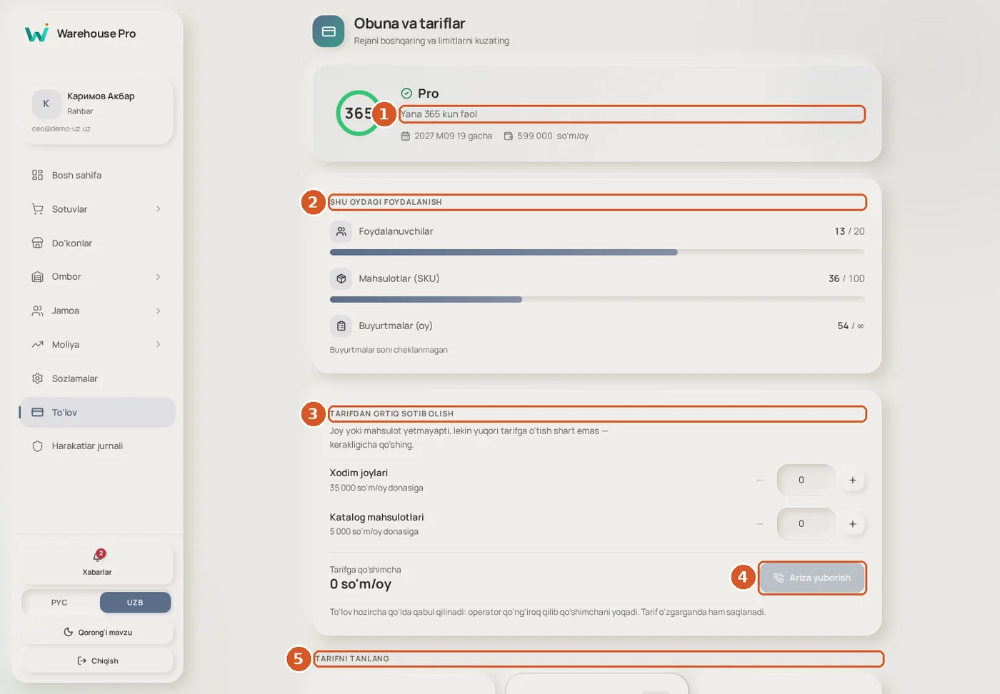
Rasm 72. «Obuna va tariflar»: muddat, limitlardan foydalanish, joy qo'shib olish, tarif tanlash
1Joriy tarif, necha kun qoldi, sana va oylik narx
2Foydalanish: foydalanuvchilar, mahsulotlar (SKU), oylik buyurtmalar — limitga nisbatan
3«Tarifdan tashqari qo'shib olish» — xodim joylari va katalog pozitsiyalari donalab
4«So'rov yuborish» — operator qo'ng'iroq qiladi va qo'shimchani yoqadi
5«Tarifni tanlang» — limitlari bilan tarif kartochkalari; joriysi belgilangan
Uchta hisoblagich. Foydalanuvchilar: limitga yetganda yangi xodim qo'shilmaydi. Mahsulotlar: limitga yetganda katalogga yangi mahsulot kirmaydi. Oylik buyurtmalar — faqat ma'lumot uchun: oyning birinchi kuni nolga tushadi, buyurtmalarni to'xtatmaydi.
Bir-ikki joy yetmayapti, katta tarif esa kerak emas — «Tarifdan tashqari qo'shib olish»: «+» «Xodim joylari» yoki «Katalog pozitsiyalari»ga beshtadan qo'shadi, aniq sonni maydonga yozing → «So'rov yuborish». Qo'shimcha tarif o'zgarganda ham qoladi.
To'lov — Click, Payme, Uzum Pay; so'rovdan keyin 30 daqiqa ichida yetkazib beruvchining operatori bog'lanadi. Sinov davri hamma imkoniyatni beradi.
DiqqatObuna tugaganda kirish butun kompaniya uchun yopiladi — daladagi agentlar uchun ham. Bir hafta oldin uzaytiring: kunlar halqasi — «To'lov» sahifasida, tepadagi ogohlantirish chizig'i esa faqat sinov davri tugashiga 3 kun qolganda chiqadi.
1«Kompaniya» — yuk xatlari uchun rekvizitlar, valyuta, chegirma chegarasi, buyurtma nuqtasi
2«Operator huquqlari» — kompaniyangizda operator nima qila oladi
3«Telegram» — o'zingizga, guruhga va xodimlarga xabarlar
4«1С» — nomenklatura, kontragentlar va buyurtmalar almashinuvi
5«Ilova kodi bilan kirish» — direktor uchun ikkinchi bosqich
Bo'lim
Nima bor
Kimga ko'rinadi
«Profil»
Ism, telefon, parolni o'zgartirish, «Ilova kodi bilan kirish»
hammaga
«Kompaniya»
Nomi, valyuta, rekvizitlar, logotip, chegirma chegarasi, yangi mahsulotlar uchun buyurtma nuqtasi
direktor
«Brending»
Xodimlar uchun ilova va kirish ekranining logotipi va ranglari
direktor
«Omborxonalar»
Omborlar ro'yxati va asosiysi — sotuv shundan
direktor
«Narxlar ro'yxati»
Alohida do'konlar uchun o'z narxlari; narxni ustuvorligi yuqori ro'yxat beradi
direktor, operator
«API kalitlari»
Boshqa dasturning ma'lumotlarga kirishi; kalit bir marta ko'rinadi
direktor
«Operator huquqlari»
Amallar bo'yicha belgilar; o'chirilgani serverda ham yopiq
direktor
«Telegram»
O'z Telegram, xodimlar guruhi, «Kimga nima keladi»
hammaga; guruh va qoidalar — direktor
«1С»
OData orqali 1С:Buxgalteriyaga ulanish va almashinuv jadvali
direktor
«Ko'rinish»
Mavzu va til — shaxsiy sozlama
hammaga
Telegram — yangi buyurtma, qarz va qoldiq haqida dasturni ochmasdan bilish uchun.
«Sozlamalar» → «Telegram» → «1 bosishda ulash»: bot ochiladi, unda «Start»ni bosing. Yoki qo'lda: Telegramda @userinfobot ni toping → /start → raqamli ID ni nusxalang → maydonga qo'ying → «Ulash».
Tekshiring: «Tekshiruv yuborish» — xabar Telegramga darrov kelishi kerak.
Ofis uchun guruh: «Guruh uchun kod olish» → Telegramda guruh yarating, xodimlarni va Warehouse Pro botini qo'shing → guruhga kod bilan /link buyrug'ini yuboring. Voqealar shu chatga keladi.
Xodimlar: «Xodimlar» ro'yxatida kim ulanganini ko'rasiz. «Ulanmaganlarga eslatish» — bot har biriga o'zi yozadi. Xodimning ID sini qo'lda ham yozish mumkin.
«Kimga nima keladi»: voqealar × rollar jadvali — «Yangi buyurtma», «Tovar tugayapti», «Muddati o'tgan qarz», «Yetkazish tayinlandi». Kimga nima yuborishni belgilang. Kechasi 22:00 dan 08:00 gacha xabarlar yig'ilib, ertalab keladi.
1С — qisqacha. O'zbekiston uchun 1С:Buxgalteriya 8, OData e'lon qilingan bo'lishi kerak. «Sozlamalar» → «1С»: «E'lon manzili», «1С foydalanuvchisi» va «Parol»ni kiriting → «Aloqani tekshirish» → 1С ning o'z ro'yxatlaridan «Tashkilot», «Ombor», «Narx turi»ni tanlang → «Almashinuv oralig'i, daq»ni qo'ying → keraklisini yoqing: «1С dan nomenklatura», «1С dan kontragentlar», «Yetkazilgan buyurtmalar → realizatsiya» → «Jadval bo'yicha almashinuv yoqilgan». Tepada oxirgi almashinuv, navbat va oxirgi rad ko'rinadi; 1С da jufti yo'q do'konlar shu bo'limdagi tugma bilan yaratiladi.
Maslahat«Profil»da «Ilova kodi bilan kirish»ni birinchi kunoq yoqing: direktorning paroli — butun kompaniyaning kaliti, kod bilan esa o'g'irlangan parol kirishni ochmaydi.
Tekshiruv
«Kompaniya»da rekvizitlar va valyuta to'ldirilgan
Telegram ulangan, «Kimga nima keladi» sozlangan
Okladlar va stavkalar qo'yilgan, birinchi vedomost to'g'ri chiqdi
Direktorda ikkinchi bosqich yoqilgan
Sozlamalar bo'limlar bo'yicha
Quyida «Sozlamalar»ning har bir bo'limi alohida surat bilan: unda nima bor va qachon kerak. «Profil» va «Ko'rinish» hammada bor; qolganlarini faqat direktor ko'radi (narx ro'yxatlarini — huquqli operator ham).
Rasm 74. «Kompaniya»: nomi, manzil, STIR, direktor, telefon — bular yuk xatida chop etiladi; «Valyuta»; chegirma chegarasi va buyurtma nuqtasi
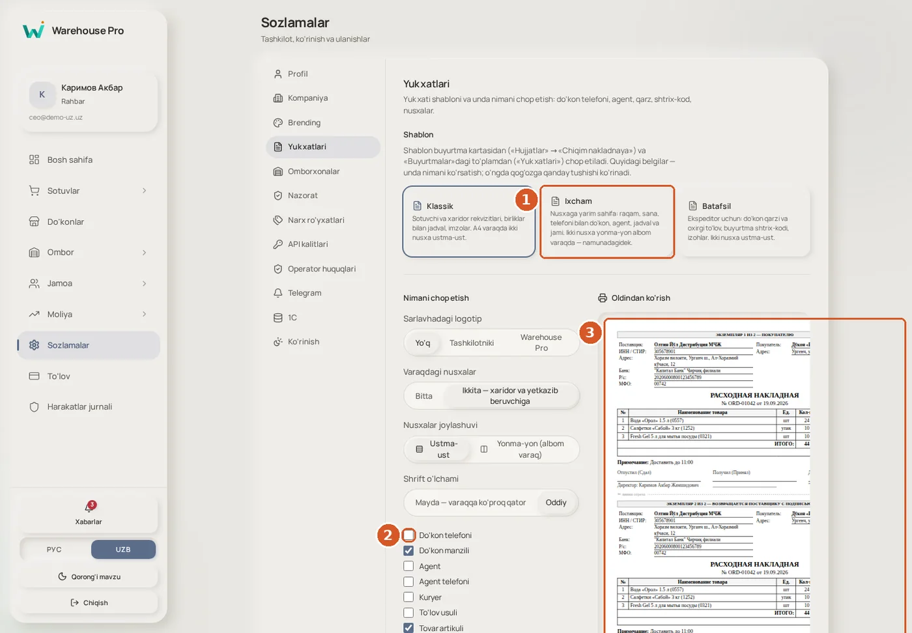
Rasm 75. «Yuk xatlari»: uchta tayyor shablon, ustun belgilari va jonli oldindan ko'rish. Tanlov buyurtma kartasiga ham, to'plam bilan chop etishga ham ta'sir qiladi
1Shablon: «Klassik» — har doim chop etilgandek; «Ixcham» — bir varaqda ikkita nusxa yonma-yon, mayda shrift, do'kon telefoni va agent; «Batafsil» — qo'shimcha do'kon qarzi va shtrix-kod
2Belgilar: logotip (yo'q / tashkilot / tizim belgisi), 1 yoki 2 nusxa, tagma-tag yoki yonma-yon, shrift o'lchami, do'kon telefoni va manzili, agent, kuryer, artikul, birlik, chegirma, qarz, shtrix-kod, to'lov usuli, imzolar, izoh, chop etish vaqti
3Oldindan ko'rish darhol o'zgaradi; «Saqlash» — va shu daqiqadan hamma shunday chop etadi
Rasm 76. «Brending»: «Logotip», favicon, tugma va sarlavha ranglari, «Kirish sarlavhasi», «Qo'llab-quvvatlash email». O'zgarishlarni tashkilotning barcha xodimlari ko'radiRasm 77. «Omborxonalar»: omborlar ro'yxati, «Tahrirlash», asosiysi belgisi. Sotuv — faqat asosiydanRasm 78. «Narx ro'yxatlari»: «Yangi narx ro'yxati» → «Nomi», «Turi» (do'kon bo'yicha yoki «Miqdordan») → mahsulotlar bo'yicha narxlar → «Kimga tayinlangan». Ro'yxat hech kimga tayinlanmaguncha hech narsaga ta'sir qilmaydiRasm 79. «API kalitlari»: nomi va ruxsatlari bilan «Kalit chiqarish»; «Berilgan kalitlar» — «To'xtatish» yoki «Bekor qilish». Kalit bir marta ko'rsatiladiRasm 80. «Operator huquqlari»: o'nta belgi — «Buyurtmalarni tahrirlash»dan «Fayldan yuklash»gacha. «Saqlash» hamma operatorlarga birdan qo'llanadiRasm 81. «Telegram»: botni oching, /start ni bosing, «Telegram chat ID»ni kiriting → «Ulash». Pastda — nimalarni olasiz va xodimlar jamoasi ularning ulanishi bilanRasm 82. «1C»: OData «Nashr manzili», login va parol, tashkilot, ombor va narx turi; «1C dan nomenklaturani yuklash», «Yetkazilgan buyurtmalar → sotuv», «Almashinuv oralig'i, daq», «Almashinuv jurnali»
Yuk xatlari ko'p qog'oz olsa — «Ixcham»ni yoqing: bitta A4 varaqda ikkita nusxa, sarlavhada do'kon raqami va telefoni. Shablon tanlanmaguncha buyurtma kartasi «Klassik»ni, to'plam «Batafsil»ni chop etadi.
«Do'kon bo'yicha» narx ro'yxati — yirik mijozga o'z narxi; «Miqdordan» — N donadan boshlab narx pastroq. Tayinlangan ro'yxatni agent do'konda o'zi ko'radi: do'kon tanlanganda narx o'zi tushadi.
API kaliti faqat tashqi dasturga kerak (sayt, bot, hisob). Har bir dasturga alohida kalit bering va «Kimga berilgan»ni yozing — keyin nimani bekor qilishni bilasiz.
1C: aloqa manzil kiritilgandan keyin darhol tugma bilan tekshiriladi. «Almashinuv jurnali» bo'sh yoki qizil ekan — buyurtmalar 1C ga ketmaydi; xato matnini o'qing, odatda bu manzil yoki 1C foydalanuvchisining huquqi.
Bildirishnomalar va qo'llab-quvvatlash
Rasm 83. «Bildirishnomalar»: yangi buyurtma, kam qoldiq, to'lov — ro'yxat bilan; «O'qilmaganlar» va «Hammasini o'qish»Rasm 84. «Qo'llab-quvvatlash»: to'g'ridan-to'g'ri oynaga yozing — javob shu yerga keladi. «Yakunlash» suhbatni yopadi
Yuqoridagi qo'ng'iroqcha o'qilmaganlar sonini ko'rsatadi; hodisalar Telegram'ga ketadiganlar bilan bir xil. «Qo'llab-quvvatlash»ga nimani bosganingiz va nimani ko'rganingizni yozing — javob pochtaga emas, shu oynaga keladi.
Supervayzer
ErtalabXarita: kim ishga chiqdi, kim signalsiz — qo'ng'iroq qilish
KunRejalar: qo'ng'iroq bo'yicha agent o'rniga tashrifni belgilash, nuqta qo'shish; KPI — kim ortda
Kechqurun«Kun qanday o'tdi»: nuqtalardagi vaqt, kilometrlar, e'tirozlar
Supervayzerda vebda: «KPI», «Xarita», «Tashrif rejasi», «Do'konlar», «Buyurtmalar», «Hisobotlar», «Sozlamalar». Do'konlar va buyurtmalar — faqat ko'rish uchun: yaratish va o'zgartirish tugmalari yo'q. Telefonda: «Bosh sahifa», «Do'konlar», «Rejalar», «Normalar», «Qarzlar», «Xarita». Direktor ham shu ekranlarni ko'radi.
Xarita — kim ishga chiqdi
Rasm 85. Xarita: chapda jamoa, agentlar va do'konlar belgilari, har 30 soniyada yangilanadi
1Filtrlar: «Hammasi», «Aloqada», «Oldin bo'lgan», «Signalsiz» — sonlari bilan
2Jamoadan oxirgi signal — ancha bo'lgan bo'lsa, telefonlar o'chiq
3«Yangilash» — 30 soniya kutmaslik uchun
4«Hammani ko'rsatish» — hamma agentni ekranga sig'dirish
5«Do'konlar» — xaritadagi nuqtalar: «Ko'pdan beri to'lamaydi», «Qarzi bor», «Hisob-kitob qilib turadi», «Buyurtma bo'lmagan»
6Agent kartochkasi: qachon bo'lgan, aniqlik ±m, kunlik aylanish; bossangiz — marshrut
Holat
Ma'nosi
Nima qilish
«Aloqada» (yashil)
Oxirgi 10 daqiqada signal bor
Hech narsa — odam ishlayapti
«Oldin bo'lgan» (sariq)
Bir kun ichida signal bo'lgan, lekin 10 daqiqadan oldin — telefon cho'ntakda, tarmoqsiz yoki quvvat tejayapti
Vaqtga qarang; ish vaqtida bir soatdan ko'p bo'lsa — qo'ng'iroq qiling
«Signalsiz» (kulrang)
Bir kun ichida birorta nuqta yo'q: GPS o'chiq yoki joylashuvga ruxsat «har doim» emas
Qo'ng'iroq qiling: GPS ni va «har doim» ruxsatini yoqsin («4-qism»ga qarang)
Chapdagi agent kartochkasini bosing → xarita uning kunlik marshrutini ko'rsatadi, kartochka ostida — «Aylanish» (rejadagi nuqtalardan nechtasi), «Norma» (oylik savdo rejasi), km da yurilgan yo'l, telefon quvvati va «Fotohisobotlar».
Agentda qizil «koordinatalar almashtirilgan» belgisi — telefon koordinatalarni ilova qo'yganini xabar qildi. Bunday tashriflar KPI dagi «Shubhali harakat»ga tushadi.
«Do'konlar»ni yoqing → qizil belgilar — «Ko'pdan beri to'lamaydi», sariq — «Qarzi bor», yashil — «Hisob-kitob qilib turadi». Belgini bossangiz: «Hamma vaqt uchun olib keldi», buyurtmalar, qarz. Koordinatasiz do'konlar xaritaga tushmaydi — koordinatalar do'kon kartochkasida to'ldiriladi.
DiqqatKartochka ostidagi qizil batareya belgisi — quvvat 20% dan past: nuqtalar va fotohisobotlar tez orada to'xtaydi, tashriflar tasdiqlanmay qoladi. Agent rozetka yonida ekan, ogohlantiring.
Rasm 86. «Do'konlar» tugmasi do'konlar qatlamini yoqadi: agent qaysi do'kon oldida turgani va keyingisigacha qancha qolgani ko'rinadi
Tashrif rejasi — kun
Rasm 87. «Tashrif rejalari», «Kun» bo'limi: agentlar bo'yicha nuqtalar, qo'ng'iroq bo'yicha belgilar, «Kun qanday o'tdi»
1«Reja yaratish» — tanlangan kunga qo'lda: agent, hudud, do'konlar
4«Tashriflar jadvali» — har bir nuqtada hafta kunlari, bir marta qo'yiladi
5«Kun qanday o'tdi» — koordinatalar bo'yicha tahlil: yurilgan yo'l, nuqtalardagi va yo'ldagi vaqt
6«Tashrif qilindi» — agent telefon orqali hisobot bergan bo'lsa, tashrifni uning o'rniga yopish
7«O'tkazib yuborildi» — do'kon yopiq yoki agent yetib bormagan; hisobotda qoladi
Bir martalik reja: «Reja yaratish» → «Agent» → «Hudud» (qavsda — nechta do'kon) → keraksiz nuqtalardan belgini oling → hamma uchun «Izoh» → yaratish. Har bir nuqta shu kun uchun alohida tashrif bo'ladi.
Kun davomida: agent telefonda tashrifni belgilaganda «Rejalashtirilgan» qatorlar «Tashrif qilindi»ga o'zgaradi. Qo'ng'iroq orqali hisobot bergan bo'lsa — «Tashrif qilindi»ni o'zingiz bosing; yetib bormagan bo'lsa — «O'tkazib yuborildi».
Qatorning o'ngidagi qizil summa — shu do'konning qarzi: agent tashrifda pulni olib kelishi kerak.
Kechqurun: har bir agentda «Kun qanday o'tdi» → kunlik yurilgan yo'l, «nuqtalarda», «yo'lda», «chiqdi — tugatdi», «e'tirozli tashriflar». E'tiroz — tashrif do'kondan uzoqda yoki juda tez belgilangan. Kun davomida birorta GPS nuqta kelmagan bo'lsa, tahlil shuni aytadi: tashriflarni tasdiqlashga asos yo'q.
Qatordagi surat belgisi — «Fotohisobotni ochish»: tashrifdagi surat.
«Tashriflar jadvali — bir marta qo'yish va rejalarga yoyish»: blokni oching → agentni tanlang → do'konni toping → hafta kunlarini belgilang → «Yaratish». Keyin oy shu jadval bo'yicha bitta tugma bilan taqsimlanadi.
Bir tugma bilan oylik reja
Rasm 88. «Oy» bo'limi: tashriflarni taqsimlash va kunlar bo'yicha reja/fakt to'ri
1«Xodim» — kimga qo'yamiz
2«Nimani qo'yamiz» — «Xodim jadvali bo'yicha» yoki hafta kunlari bilan hudud
3«O'tgan kunlarni to'ldirmaslik» — normani buzmaslik uchun
4To'r: katakdagi son — kuniga nechta tashrif; o'ngda «Reja / fakt» va foiz
5«Yopilmaganlarni olib tashlash» — butun oydan «rejalashtirilgan» tashriflarni olib tashlash; tashrif qilinganlar qoladi
«Tashrif rejasi» → «Oy» → strelkalar bilan oyni tanlang (keyingisini oldindan taqsimlash mumkin).
«Xodim» → agent. «Nimani qo'yamiz»: jadval allaqachon qo'yilgan bo'lsa — «Xodim jadvali bo'yicha»ni qoldiring; bo'lmasa — hududni tanlang, «Hafta kunlari»ni belgilang va «Jadval sifatida eslab qolish — keyingi oy bitta tugma bilan»ni qo'ying.
«O'tgan kunlarni to'ldirmaslik» belgisini qoldiring → «Taqsimlash — N ta tashrif»ni bosing. Tugma ostida yozilgan: nechta nuqta × nechta kun.
To'rni tekshiring: agentda «oy taqsimlanmagan» bo'lsa — u uchun takrorlang. Dam olish kunlari kulrang.
Agent ketdi yoki marshrut o'zgardi — «Yopilmaganlarni olib tashlash» → tasdiqlang → qaytadan taqsimlang. Allaqachon tashrif qilinganlarga tegmaydi.
MaslahatKeyingi oyni 25-sanada taqsimlang: agent rejani telefonida oldindan ko'radi, tashriflar normasi esa to'liq oy bo'yicha hisoblanadi.
Normalar va KPI — kim ortda
«Tashrif rejalari»dagi «Normalar» bo'limi: har bir agentga oyiga — «Savdo summasi», «Buyurtmalar», «Tashriflar» (yopilganlar ulushi, %). Bo'sh maydon — norma yo'q. «Tarix bo'yicha taklif» o'tgan oylar bo'yicha to'ldiradi, «Normalarni saqlash» — yozadi. O'ngda — «Oylik fakt»: sotildi, buyurtmalar, tashriflar; bajarilgani ajratib ko'rsatilgan. Normani agent telefonida ham ko'radi.
Rasm 89. «Agentlar KPI si»: jamoa bo'yicha xulosa va jadval; qatorni bossangiz — agent tahlili
1Davr: «Hafta», «Oy», «Chorak»
2«Hudud» — faqat bitta marshrutning agentlari
3«GPS siz» — nechta agent xaritada birorta nuqta qoldirmasdan tashriflarni belgilagan
4«Kuryerlar» — yetkazildi, buzildi, ulush, olib kelingan pul
5Qator: ball va baho, buyurtmalar, tushum, rejadagi tashriflar, GPS; bossangiz — tahlil
6«Excel» — jadval fayl bo'lib
Ball 5 qismdan: tashrif rejasi 30%, tushum 25%, konversiya (tashrifga buyurtma) 20%, qaytarishsiz 15%, qarz yig'ish 10%; minus shubhali tashriflar uchun jarima. Baho: A — 90 dan, F — 40 dan past.
Ball o'rniga «ma'lumot yo'q» — agentga hech narsa tayinlanmagan va buyurtma yo'q: solishtirishga asos yo'q. Tashriflarda «—» — davr uchun reja qo'yilmagan.
Kulrang «GPS yo'q» — hukm emas, fakt: xaritada iz yo'q. Avval telefonni tekshiring, keyin odamdan so'rang.
Qatorni bossangiz tahlil ochiladi: plitkalar, «Ball tafsiloti», «Shubhali harakat» va davr uchun agent oyligi — surat «Direktor: Oylik» bobida.
MaslahatDushanba: «Hafta» → ball bo'yicha ko'z bilan saralang → oxirgi ikkitasiga tushgacha qo'ng'iroq qiling. Ball tashrif rejasi va tushumga qurilgan (100% tushum — davr uchun 10 mln); normalar unga kirmaydi, tashrif rejasi bo'lmasa esa ballning uchdan biri bo'sh.
Rasm 90. «Normalar»: har bir xodim bo'yicha — oyga «Tashrif», «Buyurtma», «Savdo summasi» va yonida «Oylik fakt». «Tarix bo'yicha taklif» o'tgan oylardan to'ldiradiRasm 91. «Hisobotlar»: merchandayzerlarning oylik tashrif hisobotlari — «Javon surati», «Javonda», «Raqobatchilar», «Promo»
«Normalar» → oyni tanlang → har bir agentga uchta sonni kiriting yoki «Tarix bo'yicha taklif»ni bosing → «Normalarni saqlash».
Norma agentga telefonda ko'rinadi («Mening kunim» va «Oylik»), sizga — KPI da bajarilish foizi sifatida. Normasiz telefon «Bu oyga norma qo'yilmagan» deb yozadi.
Supervayzerning telefoni
Ilovada direktordagi o'sha 6 ta bo'lim: «Bosh sahifa», «Do'konlar», «Rejalar», «Normalar», «Qarzlar», «Xarita». To'liq tahlillar vebda qulayroq; telefon — yo'lda kim qayerdaligini ko'rish, reja va norma qo'yish uchun. Agent o'rniga tashrifni yopish faqat vebda.
Rasm 92. Telefon, «Xarita»: aloqada / aloqada emas / jami, agentlar belgilari, oxirgi signal vaqti bilan ro'yxat
1«Aloqada» — oxirgi daqiqalarda signal bor; «Aloqada emas» — ancha bo'lgan
2«Hammasi» — hammani xaritaga sig'dirish
Rasm 93. Telefon, «Rejalar»: kun, agent bo'yicha filtr, qarzli nuqtalar; tepada — «Oylik norma» (nishon) va «+» — yangi reja
«Normalar» («Ko'rsatkichlar»): «Normalar» — agentlar bo'yicha reja, fakt va o'rtacha bajarilishi; «Tashriflar» — agent bo'yicha filtr bilan kunlar bo'yicha tashriflar. Bo'sh — normalar hali yaratilmagan.
«Qarzlar»: qarzi va agenti bor do'konlar, «bir oydan eski», «Do'kon yoki agent» qidiruvi, summa yoki muddat bo'yicha saralash, «Do'konni ochish →» — egasining telefoni va buyurtmalar.
«Bosh sahifa»: «Kun jarayoni», «Yetkazishlar», «Do'konlar qarzi», «Savdo dinamikasi», «Oxirgi buyurtmalar»; vebdagidek ogohlantirishlar bu yerda yo'q.
Rasm 94. Telefon, «Normalar»: «Normalar» va «Tashriflar»; normalar yo'q ekan — ularni «Rejalar»da yaratish haqida eslatma
1Normalar «Rejalar» ekranidagi nishon orqali yoki vebda — «Tashrif rejasi» → «Normalar»da yaratiladi
Tekshiruv
Har bir agentda oy taqsimlangan va norma qo'yilgan
Ertalab xaritada tushuntirishsiz «Signalsiz» yo'q
Kechqurun ortda qolganlarning «Kun qanday o'tdi» ko'rib chiqilgan
Rasm 95. «Qarzlar»: tashkilotning barcha qarzdorlari — do'kon, agent, summa, muddat. «Summa bo'yicha saralash» / «Muddat bo'yicha», «Do'konni ochish →»
Bir oydan eski qarzlar ajratilgan: keyingi suhbatda agentdan so'raydiganlaringiz shular. Agent ismi bo'yicha filtr kimda to'planayotganini ko'rsatadi.
Savdo agenti (telefon)
ErtalabBosh sahifa: bugungi tashriflar va qarzlar — kimdan pul yig'ishga borish; GPS yoqilgan
KunNuqtada: do'konning qoldig'i va qarzi, bir daqiqada buyurtma, rejada «Tayyor»
KechqurunBuyurtmalar: hammasi serverga ketdimi; oylik: qancha hisoblandi
Agent faqat telefondan ishlaydi. Pastda 5 ta bo'lim: «Bosh sahifa», «Do'konlar», «Katalog», «Buyurtmalar», «Profil». Tashrif rejasi, qarzlar, GPS va oylik bosh sahifadan va profildan ochiladi.
Pastda — marshrut do'konlari bo'yicha «QARZLAR», «KO'RSATKICHLAR» (oy bahosi: tashriflar, tushum, konversiya, qaytarishsiz, qarzlar) va «Oylik» qatori.
Diqqat«Tayyor»ni mashinada emas, do'konda turib bosing: belgi bilan koordinatalar ketadi. Do'kondan 500 m dan uzoq yoki 5 daqiqadan qisqa tashrifni dastur shubhali deb belgilaydi, va direktor buning uchun oylikdan ushlab qolishi mumkin — «Shubhali tashriflar uchun ushlab qolish» qatori.
Do'konlar va katalog
Rasm 99. «Do'konlar»: hududlar bo'yicha; «+» — yangi do'kon
1Nom, manzil, tuman bo'yicha qidiruv
2«Barcha do'konlar» yoki alohida hudud
«Do'konlar» → hudud yoki «Barcha do'konlar» → ro'yxat. GPS yoqilgan bo'lsa, navigatsiya belgisi masofa bo'yicha saralaydi: yaqinlari birinchi, har birida — metr va yo'l vaqti.
Do'kon kartochkasidagi savat belgisi — bir bosishda buyurtma. Kartochkaning o'zi do'konni ochadi: «JORIY QARZ», telefon, manzil, «Yangi buyurtma», tahrirlash va «Joylashuvni aniqlash».
Yangi nuqta: o'ng tepadagi «+» → «Yangi do'kon»: nomi, egasi, telefon, shahar, tuman, manzil, surat. Do'kon oldida turib «Joylashuvni aniqlash»ni bosing → «Koordinatalar saqlandi» → «Do'kon yaratish».
Rasm 100. «Katalog»: har bir mahsulotda narx, qoldiq, savat
1Nom yoki artikul bo'yicha qidiruv
2«Bor» va kilogramm yoki donada qoldiq
«Katalog» — do'kon «nima bor?» deb so'raganda narx va qoldiq ma'lumotnomasi. Kartochkadagi savat mahsulotni savatga qo'shadi (kartochkada «− n +» chiqadi); pastda «Buyurtmada: N ta tovar · summa» plashkasi → «Rasmiylashtirish» shu qatorlar bilan oddiy «Yangi buyurtma»ni ochadi: do'kon, to'lov, chegirmalar. Yig'ilgan hamma tovarga bitta buyurtma. Kartochkani bossangiz mahsulot ochiladi: miqdor «− n +» va «Buyurtmaga».
Rasm 101. Telefondagi do'kon kartochkasi: «QARZ», egasi, manzil, «JOYLASHUV» va buyurtma tugmasi. Do'konning koordinatalari ham shu yerda tuzatiladi
Rasm 102. Telefondan yangi do'kon: «Nomi», «Egasi», «Shahar», «Manzil», «Rasm qo'shish», «Joylashuv (ixtiyoriy)» — koordinatalar siz turgan joydan, telefondan olinadi
Rasm 103. Mahsulot sahifasi: katta rasm, «… NARXI», «QOLDIQ», «Kamroq» / «Ko'proq» miqdor va «Buyurtmaga · summa» tugmasi
1Bir dona yoki qadoq narxi
2Hozirgi paytdagi asosiy ombordagi «QOLDIQ»
3Buyurtmaga qancha qo'yish
4«Buyurtmaga» — shu mahsulot bilan yangi buyurtma ochadi
Do'kon «nima borligini ko'rsat» desa — «Katalog»dan mahsulotni oching: butun ekranga rasm, narx, qoldiq. Miqdorni qo'ydingiz → «Buyurtmaga» → do'konni tanlash qoladi. Shunday qilib, do'konda buyurtma ro'yxat qatorlaridan emas, kartochkalardan yig'iladi.
Yangi buyurtma: 1-qadam — do'kon
Rasm 104. «3 QADAMDAN 1-CHI» — «Do'kon»
1Nom, manzil, tuman bo'yicha qidiruv
2Shahar bo'yicha filtr
3Do'konda qarz darrov ko'rinadi
4«Davom etish →» — do'kon tanlangandan keyin faol
Bosh sahifadan «Yangi buyurtma», «Buyurtmalar»da «+ Yangi» yoki do'kon kartochkasidagi savat.
Do'konni toping: qidiruv, shahar bo'yicha filtr, «YAQINDAGILAR» bloki. Nom yonida — «Qarz: …» — buyurtma olishdan oldin unga qarang.
Do'konni tanlang → «Davom etish →».
2-qadam — mahsulotlar
Rasm 105. «Mahsulot tanlash»: qidiruv, skaner, «Faqat bor bo'lganlar», mahsulot yonida «+»
1Nom yoki artikul; kamera belgisi — shtrix-kod skaneri
2«Faqat bor bo'lganlar» — omborda yo'qni yashiradi
3Savat: nechta pozitsiya va qancha summaga
4«Tayyor» — tanlashni yopish va buyurtma ro'yxatiga qaytish
«Mahsulot qo'shish»ni bosing → «Mahsulot tanlash» ochiladi. Nom yoki artikul bo'yicha qidiring, yoki kamerani bosib shtrix-kodga qarating — «Har bir skan — bitta dona».
Har bir mahsulotda — narx va «qoldiq N». «+» savatga qo'shadi. Tugatdingiz — «Tayyor».
Buyurtma ro'yxatida qator yonida: «MIQDOR» «− n +» bilan, «CHEGIRMA (%)», «SUMMA»; krestik pozitsiyani olib tashlaydi. Qoldiqdan ko'p buyurtma qilib bo'lmaydi.
«Davom etish →» — 3-qadamga.
Rasm 106. «Mahsulot tanlash»: yuqorida qidiruv, «Faqat bor bo'lganlar», narx va qoldiqli ro'yxat; qatorga bosish mahsulotni qo'shadi, «−» va «+» keyin paydo bo'ladi. Pastda «Tayyor»
1Qatorga bosing — mahsulot savatda; «+» keyin qo'shadi, qoldiq tugaganda o'chadi
«TO'LOV USULI»: «Naqd», «Karta», «O'tkazma» yoki «Qarz».
«MAHSULOT / MIQDOR / SUMMA» jadvalini va yakunni tekshiring. «Izohlar» — ombor va kuryer bilishi kerak bo'lgan narsa.
«Va'da qilingan muddat» — do'konga qachon olib kelishga va'da berilgani; ixtiyoriy. Aytilmagan sanani qo'ymang: muddati o'tgan buyurtmalar ofisga ajratib ko'rsatiladi.
«Buyurtmani tasdiqlash» → «Buyurtma yaratildi!». Buyurtma darhol ombordagi qoldiqni band qiladi; keyin uni operator ko'radi (qarang: «Ofis operatori va ombor»).
DiqqatDirektor qo'ygan chegaradan katta chegirma do'konda o'tmaydi: «Buyurtma yaratildi va ofis tasdig'ini kutmoqda — chegirma chegaradan yuqori» chiqadi. Do'konga faqat ofis tasdiqlaydigan narsani va'da qiling.
MaslahatEkranni o'rtasida yopdingiz — buyurtma yo'qolmadi: keyingi «Yangi buyurtma»da «Qoralamani davom ettirasizmi?» chiqadi → «Davom etish» yoki «Qaytadan boshlash».
Buyurtmalar
Rasm 108. «Buyurtmalar»: xulosa va kunlar bo'yicha ro'yxat
1«+ Yangi» — yangi buyurtma
2Buyurtma qatori: raqam, vaqt, summa — bossangiz buyurtma ochiladi
Aloqa bo'lmasa buyurtmalar tepadagi «YUBORISHNI KUTMOQDA» blokida «Yuborishni kutmoqda» belgisi bilan yig'iladi va tarmoq paydo bo'lishi bilan o'zi ketadi.
Rasm 109. Buyurtma ichidan: tarkibi, holati, to'lovi. Buyurtma yangi ekan, bu yerda miqdorni tuzatish yoki bekor qilish mumkin
Diqqat«Server rad etdi» — buyurtma serverda yo'q. Sababini o'qing va «Qaytarish»ni bosing. «Buyurtmani navbatdan o'chirish» buyurtmani telefondan izsiz o'chiradi — avval uni ofisga aytib bering.
Aloqasiz
Do'konlar va katalog telefondagi nusxadan olinadi; tepada nusxa sanasi ko'rinadi — «Katalog saqlangan … — aloqa yo'q, qoldiq va narxlar o'zgargan bo'lishi mumkin».
Buyurtma navbatga tushadi: «Tarmoq xatosi. Buyurtma oflayn saqlandi. Yakun yuborish paytidagi narxlar bo'yicha qayta hisoblanadi» — qayta yuborish shart emas.
Tashrif belgilari va GPS nuqtalari ham saqlanadi va o'zi ketadi. Hech narsani qayta bosish shart emas.
Shtrix-kod
Rasm 110. «Skanerlash»: kamerani shtrix-kodga qarating — mahsulot narxi va qoldig'i bilan topiladi; «Shu mahsulotni buyurtma qilish» uni yangi buyurtmaga qo'yadi
Birinchi marta telefon kameraga ruxsat so'raydi — «Ruxsat berish». Ruxsatsiz ekran «Kameraga ruxsat yo'q» deb ko'rsatadi.
Kod bazada yo'q — «Mahsulot topilmadi». Qadoqni suratga oling va operatorga bering: shtrix-kod vebda mahsulot kartochkasiga kiritiladi.
Qarzlar
Rasm 111. «Mening qarzlarim»: buyurtmalar bo'yicha, sana va muddati bilan
1Do'kon yoki buyurtma raqami bo'yicha qidiruv
2Do'kon telefoni — bossangiz raqam teriladi
«Profil» → «Mening qarzlarim» (yoki bosh sahifadagi «QARZLAR» bloki). Tepada — umumiy summa va nuqtalar soni.
Qatorda: do'kon, buyurtma raqami, sana, necha kun o'tgan, manzil. Qatorni bossangiz buyurtma ochiladi, raqamli tugma — qo'ng'iroq.
Qarz uchun pulni agent ilovada qabul qilmaydi: to'lovni ofis buyurtma bo'yicha o'tkazadi (qarang: «Ofis operatori va ombor» va «Do'kon qarzi — ikki qoida»).
GPS
Rasm 112. «GPS»: nuqta yuborish yoki «Avto-kuzatuv»ni yoqish
1«Joylashuvni yuborish» — hozir bitta nuqta
2«Avto-kuzatuv» — harakatlanganda nuqtalar o'zi ketadi
Bosh sahifa → «GPS» plitkasi. Telefon birinchi marta so'raganda joylashuvga «Har doim» ruxsat bering, bo'lmasa nuqtalar faqat ekran ochiq ekan ketadi.
«Avto-kuzatuv»ni yoqing — harakatlanganda yuboriladi, 2 daqiqada bir martadan ko'p emas. Birinchi yuborishdan keyin pastda «OXIRGI YUBORISH» va signal sifati ko'rinadi.
«Joylashuvni yuborish» — hozirning o'zida nuqta yuborish, masalan, supervayzer so'rasa.
MaslahatAvto-kuzatish batareyani o'zi tejaydi: nuqta faqat 50 m siljiganda va 2 daqiqada bir martadan ko'p emas yuboriladi, «yuqori aniqlik»siz. Lekin Xiaomi/Redmi, Huawei va Samsung fon ilovalarini uxlatadi: Telefon sozlamalari → Ilovalar → Warehouse Pro → Batareya → «Cheklovsiz» (Xiaomi da yana «Avtoishga tushirish» — yoqing). Aks holda ekran qulflangach yarim soatdan keyin iz uziladi.
DiqqatGPS siz siz supervayzerning xaritasida ko'rinmaysiz, tashriflar esa koordinatalar bilan tasdiqlanmaydi — ular shubhalilarga tushadi.
Oylik
Rasm 113. «Mening oyligim»: hisoblandi, berildi, nimadan tashkil topgan
1Davr: «Oy», «Hafta», «Chorak»
2«JAMI» — davr uchun hamma qatorning summasi
«Profil» → «Mening oyligim». Tepada «Davr uchun hisoblandi», uning ostida «Berildi» va «Qoldiq».
«Nimadan tashkil topgan»: «Oklad», «Komissiya» (savdo summasi × foiz), «Tushlik va yo'l puli», «Shubhali tashriflar uchun ushlab qolish» — bo'lgan bo'lsa.
«Oy davomida qo'lga berildi» — har bir berish alohida qator. Pulni oldingiz — «Pul olinganini tasdiqlash» → «Oldim»: direktorda berish «tasdiqlandi» deb belgilanadi.
Foiz qanday hisoblanishi va P&L ga nima kirishi — «4-qism: Oylik»ga qarang.
Profil, til, chiqish
Rasm 114. «Profil»: rasm, ism va rol; oy normasi; «Pul», «Hisob», «Ko'rinish» guruhlari; «Hisobdan chiqish»
1Norma kartochkasi: supervayzer qo'ymaguncha — «Bu oyga norma qo'yilmagan»; keyin — fakt / reja bilan «<oy> uchun reja»
«Profil» bo'limi. Tepada — norma kartochkasi: «<oy> uchun reja» — supervayzerdan tushum, buyurtmalar, tashriflar va qanchasi bajarilgani; norma bo'lmasa — «Bu oyga norma qo'yilmagan».
«Hisob» guruhi: «Ism» qatori → maydon → «Saqlash»; «Parol» qatori → joriy, yangi, takror → «Parolni o'zgartirish». «Barmoq izi / Face ID bilan kirish» — o'chirgich: barmoq izi bilan kirish va 5 daqiqa harakatsizlikdan keyin ekran qulfini yoqadi (birovning telefonida — yoqing).
Til: «TIL» bloki → «Русский» yoki «O'zbekcha». Ilova darrov va butunlay o'zgaradi, qayta kirish shart emas; tanlov shu telefonda eslab qolinadi.
«Hisobdan chiqish» → «Chiqish». Birovning telefonida har doim chiqing: bo'lmasa buyurtmalaringiz va oyligingiz ochiq qoladi.
Xabarlar
Rasm 115. «Xabarlar»: «Hammasi» va «O'qilmaganlar»
1«O'qilmaganlar · N» — faqat yangilari
Bosh sahifadagi qo'ng'iroqcha → ro'yxat: yangi buyurtmalar, to'lovlar, qoldiq o'zgarishlari, tizim yangilanishlari. O'qilmaganlar ajratib ko'rsatilgan; o'ng tepadagi belgi — «Hammasini o'qilgan deb belgilash».
Tekshiruv
Rejadagi hamma nuqta «Tayyor» yoki «Keyinga» bilan belgilangan
«Buyurtmalar»da «YUBORISHNI KUTMOQDA» bloki va «Server rad etdi» qatorlari yo'q
«Avto-kuzatuv» kun bo'yi yoqilgan edi
Buyurtmalardagi va'da qilingan muddatlar — do'konga aytilganlar
Kuryer (telefon)
Ertalab«Yetkazishlar»: nuqtalarni yetkazishga olish — «Hammasiga yo'lga chiqdim»
KunNuqtada: naqd pul summasi → «Yetkazildi»; yetkazilmasa — «Yetkazilmadi» va sabab; qisman — «Batafsil rasmiylashtirish»
KechqurunHammasi serverga ketdimi; yetkazilgani uchun oylik
Kuryerda 3 ta bo'lim: «Bosh sahifa», «Yetkazishlar», «Profil». Butun ish — «Yetkazishlar»da: operator yuklash varaqasiga kuryer tayinlagandan keyin buyurtmalar shu yerga keladi (qarang: «Operator: Yuklash varaqasi va yig'ish»). Ilovaga kirish va tilni almashtirish — agentdagidek (qarang: «Savdo agenti: Kirish» va «Profil, til, chiqish»).
Bosh sahifa
Rasm 116. Kuryerning bosh sahifasi: nechta kutmoqda, yo'lda, yetkazildi
1«YO'LDA» — yetkazishga olingan, hali belgilanmagan
2«KUN JARAYONI» — bajarildi / jami va qancha qoldi
3«Yetkazishlar» bo'limi — ish ekrani
«KUTMOQDA», «YO'LDA», «YETKAZILDI» plitkalari va «JARAYON» doirasi — kun holati bir qarashda; pastda — «Oxirgi yetkazishlar». Qo'ng'iroqcha — ofisdan xabarlar.
Yetkazishlar: chiqish va nuqta
Rasm 117. «Yetkazishlar»: yo'ldagi buyurtma kartochkasi, 3 ta amal bilan
1«Xaritada» — manzilni telefon xaritasida ochish
2«Naqd summa (ixtiyoriy)» — do'kondan qancha oldingiz
3«Yetkazildi» — hammasini olib keldingiz; «Yetkazildimi?» deb so'raydi → «Ha»
4«Batafsil rasmiylashtirish» — qisman to'lov, qaytarish, sanali qarz
5«Yetkazilmadi» — sabab bilan
Ertalab buyurtmalar «YETKAZISHNI KUTMOQDA» bo'limida turadi. Har birida — «Yetkazishga olish»; nuqta bittadan ko'p bo'lsa, ro'yxat tepasida «Hammasiga yo'lga chiqdim (N)» → «Yo'lga chiqdim». Buyurtmalar «YO'LDA»ga o'tadi, ofis buni darrov ko'radi.
Nuqtada: «Xaritada» manzilga olib boradi. Tovarni berdingiz va pulni oldingiz — «Naqd summa»ni yozing → «Yetkazildi» → «Ha». «Yetkazildi!» chiqadi.
Do'kon hammasini to'lamadi, tovarning bir qismini qaytardi yoki keyinroq to'lashga va'da berdi — «Batafsil rasmiylashtirish» (keyingi bo'lim).
Tovarni bermadingiz — «Yetkazilmadi» → sabab.
Diqqat«Yetkazildi»dagi summa — bu siz kassaga topshiradigan pul. Bo'sh maydon «do'kon to'lamadi» degani, va butun buyurtma summasi unga qarz bo'lib tushadi. «Ha»dan oldin raqamni tekshiring.
«Batafsil rasmiylashtirish»
Rasm 118. Yetkazish natijasi, to'lov, pozitsiyalar bo'yicha qaytarish
1«Qisman to'langan» — qolgani do'konga sanali qarz bo'lib ketadi
2«Qaytarish» — butun tovar omborga qaytadi
3«Qisman qaytarish» — pozitsiyalarning bir qismi qaytadi, qolganiga pul
4«TO'LOV»: summa va usul — «Naqd», «Karta», «O'tkazma»
5«YETKAZISHNI YAKUNLASH» → «Tasdiqlash»
«TARKIB»ni bergan tovaringiz bilan solishtiring. «YETKAZISH NATIJASI»ni tanlang: «100% to'landi», «Qisman to'langan», «Qaytarish» yoki «Qisman qaytarish».
«TO'LOV»: summani yozing, «Naqd», «Karta» yoki «O'tkazma»ni tanlang. Qisman to'lovda pastda «Qarz: …» va «Qachon to'lashga va'da berdi:» maydoni chiqadi — sana odatdagidek, 15.09.2026.
«QAYTARISH»: «Qaytarish sababi:» — «Fikridan qaytdi», «Mashinaga sig'madi», «Tovar buzilgan», «Boshqa tovar», «Mijoz boshqa», «O'z varianti». Qisman qaytarishda har bir pozitsiya uchun «Qaytarilgan miqdor:»ni ko'rsating — to'lov qolgani uchun qayta hisoblanadi.
Diqqat«Qaytarish» — bu «To'liq qaytarish — tovar omborga qaytadi»: buyurtma pulsiz yopiladi. Do'kon hech bo'lmasa bir qismini olgan bo'lsa, «Qisman qaytarish»ni tanlang va qolgani uchun to'lovni yozing — bo'lmasa qoldiq va qarz haqiqat bilan to'g'ri kelmaydi.
«Yetkazilmadi»
Rasm 119. «Nega yetkazilmadi?» — sabab bir bosishda
1Sabab oynasi: buyurtma va do'kon
2Tayyor sabablar: «Do'kon yopiq», «Pul yo'q», «Tovardan voz kechdi»
Sababni tanlang yoki «Boshqa» va «Nima bo'ldi»ni yozing → «Yetkazilmadi». «Yetkazilmagan deb belgilandi» chiqadi. Buyurtma qayta yetkazish uchun «Yangi»ga qaytadi, tovar omborda uning nomida qoladi, operator sababni buyurtmada ko'radi.
Aloqasiz
Hamma belgi telefonga yoziladi: «Telefonga yozildi. Aloqa paydo bo'lganda serverga ketadi». «Yo'lga chiqdim» belgisi kechiktirilgan buyurtma hamma tugmalari bilan «yo'lda» ko'rsatiladi — ishlayvering.
Server rad etgan belgi (masalan, ofis buyurtmani allaqachon yopgan) sababi va «Qaytarish» / «Olib tashlash» tugmalari bilan ko'rinadi. «Olib tashlash»dan oldin ofisga qo'ng'iroq qiling.
Pul: naqd va karta buyurtmaga yoziladi; do'kon qarzi to'langan summaga kamayadi. Keyin ofis nima qilishini — «Do'kon qarzi — ikki qoida»ga qarang.
Profil va oylik
Rasm 120. Kuryerning «Profil»i: rasm, ism va rol; «Pul» → «Mening oyligim»; «Hisob», «Ko'rinish», chiqish
«Profil» → «Mening oyligim»: «Davr uchun hisoblandi», «Yetkazildi × stavka» yoki «Yetkazilgan summa × foiz» qatori — to'lov usulini direktor har bir kuryer uchun tanlaydi. Yetkazilmagani to'lanmaydi.
KechqurunHamma tashrif belgilangan, hisobotlar ketgan
Merchandayzerda 4 ta bo'lim: «Bosh sahifa», «Do'konlar», «Reja», «Profil». U buyurtma olmaydi — uning ishi tashrif hisoboti: javon surati va mahsulotlar bor-yo'qligi ro'yxati. Kirish va tilni almashtirish — agentdagidek (qarang: «Savdo agenti: Kirish» va «Profil, til, chiqish»).
Bosh sahifa
Rasm 121. Merchandayzerning bosh sahifasi: bugungi tashriflar va plitkalar
1«DO'KONLAR» — hududlar bo'yicha nuqtalar ro'yxati
2«GPS» — «Avto-kuzatuv»ni yoqish
3«Reja» bo'limi — kunning ish ekrani
«Bugungi tashriflar» — «Reja»dagi o'sha nuqtalar; → strelkasi rejani ochadi. «Bugunga tashriflar yo'q» — kunlik reja tayinlanmagan: supervayzerdan so'rang (qarang: «Supervayzer»). GPS agentdagidek ishlaydi (qarang: «Savdo agenti: GPS»).
Reja
Rasm 122. «Reja»: bugungi tashriflar, qarzlar, oy ko'rsatkichlari
1«BUGUNGI TASHRIFLAR» va «bajarildi / jami · %» hisoblagichi
2«KO'RSATKICHLAR» — oy bahosi va uning tarkibi
Rasm 123. Nuqtali kun shunday ko'rinadi (agentning surati — merchandayzerda tugmalar o'sha)
1«Rasmlar» — punktir kvadrat javon suratini qo'shadi
2«Ro'yxat» — kompaniya mahsulotlari: «Bor» / «Yo'q»; «tekshirildi N/M» hisoblagichi
3«Tashrifni yakunlash» — hisobotni yuborish
«Rasmlar»: punktir kvadratni bosing → «Rasm qo'shish» → «Kamera» yoki «Galereya». Javonni to'liq va o'z mahsulotingizni yaqindan suratga oling.
«Ro'yxat»: har bir mahsulotda ikkita tugma — «Bor» (yashil) va «Yo'q» (qizil). Hech biri bosilmagan — «tekshirilmagan», bu «tekshirildi N/M» hisoblagichida ko'rinadi. Bor mahsulotda «Narx» va «Aksiya» maydonlari chiqadi — ko'rsangiz yozing.
«Raqobatchilar haqida izoh» — «Raqobatchilar javonida nima ko'rinyapti…»: yangiliklar, narxlar, terilishi.
«Tashrifni yakunlash» → «N ta rasm · bor · yo'q · tekshirilmagan» yakunli oyna → «Yuborish» → «Hisobot yuborildi!». Rasmsiz ilova ogohlantiradi: «Rasmsiz tashrif tasdiqlanmaydi» → «Rasmga olish». Rejadagi nuqta «Tashrif qilindi» bo'ladi.
MaslahatYuborishda aloqa uzildi — hisobot qoralama sifatida saqlandi: o'sha nuqtada keyingi «Tayyor»da «Qoralamani davom ettirasizmi?» chiqadi → «Davom etish». Qaytadan suratga olish shart emas.
DiqqatSuratsiz va bo'sh ro'yxatli hisobot — bo'lmagan tashrif: supervayzer vaqtni, koordinatalarni va suratni ko'radi. Hisobotni do'konda bering, mashinada emas.
Do'konlar
Rasm 125. «Do'konlar»: agentdagi o'sha hududlar
1Nom, manzil, tuman bo'yicha qidiruv
2«Barcha do'konlar» yoki hudud
Hudud → do'kon: telefon, manzil, «Joylashuvni aniqlash», do'kon surati. «+» yangi nuqta yaratadi — «Do'kon yaratish». Batafsil — «Savdo agenti: Do'konlar va katalog»ga qarang.
Profil
Rasm 126. Merchandayzerning «Profil»i: rasm, ism va rol; oy normasi; «Hisob», «Ko'rinish», chiqish
1Tashriflar normasi kartochkasi: supervayzerdan «<oy> uchun reja»; qo'yilmaguncha — «Bu oyga norma qo'yilmagan»
Oylik norma — supervayzer nechta tashrif kutayotgani; fakt / reja shu yerda va «Reja» tepasidagi «OY REJASI» kartochkasida ko'rinadi. Til: «TIL» blokigacha aylantiring → «Русский» yoki «O'zbekcha» — ilova darrov o'zgaradi. Pastda — «Hisobdan chiqish».
Tekshiruv
Rejadagi har bir nuqta — «Tashrif qilindi» yoki «O'tkazib yuborildi»
Har bir hisobotda hech bo'lmasa bitta javon surati bor
«Qoralamani davom ettirasizmi?» qoralamalari qolmagan
3-qism. Qanday qilish: amallar qadam-baqadam
1- va 2-qismlar kunlar va rollar bo'yicha. Bu yerda — vazifalar bo'yicha: «do'kon tovarni qaytardi», «kuryer hammasini yetkazmadi», «partiya muddati tugayapti», «oyga reja qo'yish kerak». Har bir bo'lim to'rt savolga javob beradi: buni qachon qilishadi, kim, nimani bosish va undan keyin qoldiq, qarz va pulda nima o'zgaradi. Tugma nomlari dasturda yozilganidek berilgan; sahifa menyuning qayerida — «Bu kitobdan qanday foydalanish»dagi jadvalda.
Vazifa
Bo'lim
Kim
Buyurtmani qabul qilish, o'zgartirish, tasdiqlash yoki bekor qilish
«Buyurtma boshidan oxirigacha»
Agent, operator
Hammasi yetkazilmadi, do'kon yopiq, tovar qaytarildi
«Qisman yetkazish, yetkazilmagani va qaytarishlar»
Kuryer, operator
Kuryer pulini qabul qilish, hisob-kitobni yopish, do'kon qarzi
«Buyurtma bo'yicha hisob-kitob va do'kon qarzlari»
Operator, direktor
Partiyalar, yaroqlilik muddatlari, nima tugayapti
«Yaroqlilik muddatlari»
Operator, ombor
Chek bo'yicha do'kon so'zi, xavf indeksi, daladagi pul
«Nazorat»
Direktor
Kun va oyga tashrif rejasi, normalar, merchandayzer hisobotlari
«Tashrif rejalari»
Supervayzer, direktor
Do'konga o'z narxlari, chegirmalar, chegara
«Narxlar ro'yxati va chegirmalar»
Direktor, operator
Tuzatish, inventarizatsiya, ko'chirish, qayta buyurtma
«Ombor: tuzatish, qayta sanash, ko'chirish»
Operator, ombor
Stavkalar, hisoblash, berish, tasdiqlash
«Ish haqi»
Direktor
Xodim qo'shish, operatorni cheklash, kirishni topshirish
«Odamlar va huquqlar»
Direktor
Telegram, 1C, API kalitlari, yuklamalar
«Tashqi dunyo bilan almashinuv»
Direktor
Buyurtma boshidan oxirigacha
Buyurtma — qoldiq va qarzni harakatga keltiradigan yagona hujjat. U rasmiylashtirilgan paytda tovarni zahiraga oladi, «Yetkazildi»da chiqaradi va shu yerda do'kon qarzini tug'diradi. Quyidagilar — uni qoldiqni qo'lda tuzatmasdan shu yo'ldan o'tkazish haqida.
Peshtaxta oldida buyurtma olish (agent, telefon)
Bosh sahifadan «Yangi buyurtma», «Buyurtmalar»da «+ Yangi» yoki do'kon kartasidagi savat → 1-qadam: do'konni toping, nomi yonidagi «Qarz: …»ga qarang → «Davom etish →».
2-qadam: «Mahsulot qo'shish» → nomi yoki artikuli bo'yicha qidiruv yoki shtrix-kodga kamera; «+» savatga qo'yadi; qatorda — «− n +» miqdori va «CHEGIRMA (%)». Qoldiqdan ko'p buyurtma qilib bo'lmaydi. «Katalog»dan ham mahsulotlar shu savatga qo'shiladi — raqamli savat belgisi buyurtmaga olib boradi.
3-qadam: «TO'LOV USULI» — «Naqd», «Karta», «O'tkazma» yoki «Qarz»; «Va'da qilingan muddat» — faqat sana aytilgan bo'lsa; «Izohlar» — ombor va kuryerga → «Buyurtmani tasdiqlash».
Nima o'zgaradi: operatorda «Yangi» buyurtma, «Ombor»da tovarlarning «Zahira»si o'sdi, «Mavjud» kamaydi. «Qarz» buyurtmasi darhol do'kon qarziga qo'shildi; kredit limiti qo'yilgan va oshgan bo'lsa — dastur so'z bilan rad etadi, to'lovni boshqa usulda qabul qiling.
Rasm 127. Peshtaxta oldida 3-qadam: tarkib, to'lov usuli, «Buyurtmani tasdiqlash»
Telefon orqali buyurtma olish (operator, veb)
«Buyurtmalar» → «Yangi buyurtma» → nomi, egasi yoki tumani bo'yicha do'kon → «Mahsulot qidirish…»da tovarlar (yoki skaner + Enter) → «+» → «Keyingi».
Savat ustida — «Narxlar ro'yxati»: odatda do'kon ro'yxati, «Tovar kartasi bo'yicha» — kartalardagi narxlar. Savatdagi va yuk xatidagi narx bir xil bo'ladi.
Qachon: agent chegaradan katta chegirma berdi («Sozlamalar» → «Kompaniya» → «Dala xodimlari uchun chegirma chegarasi, %»). Buyurtma peshtaxtada rad etilmagan, zahira bilan «Kutishda» turibdi; ofisga xabar keldi.
«Buyurtmalar» → «Kutishda» chipi → qator → karta: sababi bilan sariq yozuv. Tarkib va «Chegirma (%)»ni tekshiring.
Tasdiqlash — karta tepasida «Yangi» holati → «Holat o'zgartirilsinmi?» → ha. Rad etish — «Bekor qilindi» holati: zahira olib tashlandi, agent rad etilganini telefonida ko'radi va to'g'ri chegirma bilan qaytadan oladi.
Buyurtmani o'zgartirish yoki bekor qilish
«Yetkazildi»gacha: agent telefonda — buyurtmadagi «O'zgartirish» («Mahsulotlar» va «Tafsilotlar» bo'limlari); operator — kartada tarkib yonidagi «Tahrirlash», «Chegirma (%)» → «Saqlash». Zahira o'zi qayta hisoblanadi.
Bekor qilish: «Bekor qilindi» holati (agent — «Bekor qilish», buyurtma «Yangi» yoki «Jarayonda» bo'lganda). Zahira bo'shaydi; qarzli buyurtma qarzni ham olib tashlaydi. Jo'natilgan buyurtmani faqat ofis o'zgartiradi.
«Yetkazildi»dan keyin: tarkib tuzatilmaydi. Miqdor noto'g'ri — qisman yetkazish yoki qaytarish hujjati (keyingi bo'lim). Ishga qaytarish — «Yangi» holati: zahira qaytadan olinadi, buyurtma sanasi bugungi bo'ladi; qaytarish yoki qisman yetkazish bo'lgan buyurtma bo'yicha dastur rad etadi — yangisini rasmiylashtiring.
«Buyurtmani o'chirish» — faqat kiritish xatosi uchun: u hamma hisobotdan izsiz yo'qoladi. Haqiqiy buyurtmani bekor qiling.
DiqqatKuryer hisobotidan oldin buyurtmani qo'lda «Yetkazildi»ga o'tkazmang: shu paytda ombor chiqariladi va butun summaga do'kon qarzi paydo bo'ladi. Hammasi yetkazilmagan bo'lsa — qatorlar bo'yicha qaytarish bilan «Bajarildi» yoki kuryerda «Batafsil rasmiylashtirish».
«Yuklash varaqalari» → «Yig'ish»: «Kerak», «Partiyalar» (FEFO bo'yicha), «Yig'ildi» qatorlari → «Yig'ishni tasdiqlash». Kamomad qatorlarda qoladi va ofisga ketadi.
Varaqa qatorida «Kuryer tayinlanmagan»da kuryerni tanlang → buyurtmalar telefonidagi «Yetkazishlar»da paydo bo'ladi. Keyin «Yuklanmoqda» → «Yuklandi» → «Jo'natildi».
Nima o'zgaradi: «Yetkazildi»gacha ombor zahirani ushlab turadi — chiqim haqiqatda ketgan va kuryer bergan narsa bo'yicha bo'ladi.
Rasm 129. «Yuklash varaqalari»: yig'ish, kuryer tayinlash, «Jo'natildi»gacha olib borish
Yuk xatlarini chop etish
Bitta buyurtma: karta → «Hujjatlar» → «Chiqim nakladnaya (O'Z)». Brauzerning chop etish oynasi ochiladi — A4 qog'oz, odatiy hoshiyalar.
Butun reys: «Buyurtmalar» → buyurtmalarga belgi → pastda «Yuk xatlari» → oynada hujjat turini tanlang va «Chop etish». Har bir buyurtma — o'z varag'ida, ro'yxat tartibida.
Yuk xati qanday ko'rinishini direktor bir marta hal qiladi: «Sozlamalar» → «Yuk xatlari» → shablon, ustun belgilari, oldindan ko'rish → «Saqlash». Shu daqiqadan karta ham, to'plam ham tanlangan bo'yicha chop etadi.
Nima o'zgaradi: har bir chop etish buyurtma raqami bilan «Harakatlar jurnali»ga yoziladi — «yuk xati bo'lmagan» degan bahs shu yerda hal bo'ladi.
MaslahatQog'oz tez tugasa — «Ixcham»: bir varaqda ikkita nusxa (do'konga va o'zingizga), sarlavhada do'kon telefoni va agent; mayda shrift peshtaxta masofasidan o'qiladi.
Qisman yetkazish, yetkazilmagani va qaytarishlar
To'rt xil holat va har birining o'z tugmasi bor. Umumiy qoida: buyurtma do'kon haqiqatda olgan narsaga qayta yoziladi, olib ketilmagani o'zi «Mavjud»ga qaytadi, qarz esa faqat yetkazilgani bo'yicha hisoblanadi. Qaytarish hujjati faqat tovar yetkazilgandan keyin qaytarilganda kerak.
Yetkazilgani chiqarildi; qolgani darhol «Mavjud»ga
Yetkazilgani minus to'lov
Hech narsa berilmadi: yopiq, telefon olmadi
Kuryer: «Yetkazilmadi» + sabab
Zahira qoladi, ombor chiqarilmagan
Yo'q; buyurtma yana kuryersiz «Yangi»
Yetkazilgandan keyin butunlay qaytardi
Operator: kartada «Qaytarildi» holati
Tovar omborga qaytadi
Buyurtma qarzi olib tashlandi, to'lovlar do'konga hisoblanadi
Bir necha kundan keyin bir qismini qaytardi
«Qaytarishlar» ekranidagi hujjat (integratsiya/API orqali keladi) → «Tasdiqlash» → «Omborga» yoki «Hisobdan chiqarish»
«Omborga» — qo'shadi; «Hisobdan chiqarish» — yo'q
Qaytarish summasi minus; o'tkazilgan oy tushumi ham
Kuryer: «Batafsil rasmiylashtirish»
Rasm 130. Yetkazish natijasi, to'lov va qatorlar bo'yicha qaytarish — nuqtadagi bitta oyna
«Yetkazishlar»da nuqta yonida → «Batafsil rasmiylashtirish» → «TARKIB»ni solishtiring.
«YETKAZISH NATIJASI»: «100% to'langan», «Qisman to'langan», «Qisman qaytarish» yoki «Qaytarish» (to'liq — tovar butunlay orqaga, buyurtma pulsiz).
Qisman qaytarishda — har bir qator bo'yicha «Qaytarilgan miqdor» va «Qaytarish sababi»; to'lov qolgani uchun qayta hisoblanadi. «TO'LOV»: summa va usul; qismanda — «Qachon to'lashga va'da berdi».
«YETKAZISHNI TUGATISH» → «Tasdiqlash». Ofisdagi buyurtma kartasida «Qisman yetkazish — sabab» belgisi, «Tuzatmalar tarixi»da yozuv va kuryer «Qo'lida» pul paydo bo'ladi.
Operator: qatorlar bo'yicha qaytarish bilan «Bajarildi»
Qachon: kuryer og'zaki hisobot berdi yoki hammasiga «Yetkazildi»ni bosdi, do'kon esa hammasini olmadi. Buyurtma jarayonda yoki jo'natilgan bo'lishi kerak; agar allaqachon «Yetkazildi» bo'lsa — «Yangi» holatini qaytaring va takrorlang.
«Buyurtmalar» → qatorda «Bajarildi» → «Buyurtmani tugatish» oynasi: «MAHSULOTLAR» blokida qatorda «Qoldirdi» yoki «Qaytarish», «Miqdor» va «Sabab» bilan; pastda «Qoldirildi» va «Qaytarish» ko'rinadi.
«TO'LOV» bloki: summa yoki «To'liq» / «Hech narsa», usul → «Buyurtmani tugatish». Buyurtma «Yetkazildi», qoldiq qoldirilgani bo'yicha chiqarildi, qarz — qoldirilgani minus to'lov, hisob-kitob ofis tomonidan darhol yopildi.
Rasm 131. «Buyurtmani tugatish»: qatorlar bo'yicha qoldirdi / qaytarish va to'lov
Kuryer: «Yetkazilmadi»
Nuqtadagi buyurtma kartasida → «Yetkazilmadi» → «Nega yetkazilmadi?»: sabab yoki matn bilan «Boshqa» → «Yetkazilmadi».
Nima o'zgaradi: buyurtma kuryersiz «Yangi»ga qaytdi, ombordagi zahira qoldi, qarz yo'q. Operator kartada sababni ko'radi va buyurtmani keyingi varaqaga qo'yadi — yoki bekor qiladi, unda zahira bo'shaydi.
Rasm 132. «Nega yetkazilmadi?» — bir bosishda sabab
Yetkazilgandan keyin qaytarish: «Qaytarishlar» ekranidagi hujjat
Hujjat qayerdan keladi: integratsiya yoki API (returns.create) orqali — 1C, bot yoki o'z dasturingizdan. Vebda va telefonda «qaytarish yaratish» tugmasi hozircha yo'q; qaytarishni yetkazish paytida kuryer rasmiylashtirsa — bu hujjatsiz «Batafsil rasmiylashtirish».
«Qaytarishlar» → «ko'rib chiqilmoqda» filtri → qator yonidagi strelka «Qaytarish tarkibi»ni ochadi → keltirilgani bilan solishtiring → «Tasdiqlash» yoki «Rad etish» (rad etilgani hech narsani o'zgartirmaydi).
Tasdiqlanganida: «Omborga» (yaroqli tovar — qoldiqqa) yoki «Hisobdan chiqarish» (brak, muddati o'tgan — omborga qo'shilmaydi) → «Qaytarish o'tkazilsinmi…?» savolini tasdiqlang. Qaytarish «o'tkazildi»: buyurtma qarzi va o'tkazilgan oy tushumi uning summasiga kamaydi.
DiqqatBitta qaytarish hech qachon ikki marta hisoblanmaydi: o'tkazilgan qaytarishdan keyin buyurtma bekor qilinsa, qaytarish tushumdan chiqariladi — buyurtma summasi baribir butunlay ketgan. Yetkazib beruvchiga qaytarish — bu yerda emas, «Kirim» → «Kontragentlar va qarzlar» → «Tovarni qaytarish»da.
Buyurtma bo'yicha hisob-kitob va do'kon qarzlari
Dasturda kassa yo'q: pul buyurtmada yashaydi. Yetkazilgan buyurtma ofis u bo'yicha pulni qabul qilguncha hisob-kitob kutadi; daladan kelgan naqd pul shu paytgacha kuryer «qo'lida». Operatorning bitta amali — «Hisob-kitobni yopish» — qancha kelgani, nima do'kon qarzi bo'lib qolgani va yo'lda biror narsa yo'qolmaganini yozadi.
«Buyurtmalar» → «Hisob-kitob kutmoqda» chipi — pul hali qabul qilinmagan yetkazilgan buyurtmalar. Buyurtmani oching — o'ngda «Pul» bloki: «Buyurtma jami», «Olindi», «Qo'lda · kuryer ismi», «Naqdsiz yo'lda», «Qoldiq».
«Pulni qabul qilish» → «Naqd olindi»: odatda kuryer e'lon qilgani turadi — aynan shuncha topshirgan bo'lsa, hech narsani o'zgartirmang. Ko'proq topshirdi — yozing; «Yana qabul qilindi» — bir qismi karta yoki o'tkazma bilan kelgan bo'lsa.
Qoldiq nol emas — «Qoldiq … — do'kon qarziga» va «Muddat»ni qo'ying: do'kon keyinroq to'laydi. Bu belgisiz qoldiq bilan hisob-kitobni yopib bo'lmaydi — dastur pulni «unutishga» yo'l qo'ymaydi.
E'lon qilinganidan kam topshirdi — maydon ostida darhol «Kamomad … — kuryerda qoladi va ushlab qolishga ketadi» ko'rinadi; «Kamomad izohi»ni yozing. U kuryerning xavf indeksiga («Nazorat») va oylikdan ushlab qolishga tushadi.
«Hisob-kitobni yopish». Blokda — sana va kim bilan «Hisoblangan»; «Buyurtmalar»da «Hisob-kitob kutmoqda» chipi bittaga kamaydi. Ko'chirmasiz naqdsiz to'lov qatorda «Keldi» bosilguncha «yo'lda» qoladi.
MaslahatOperator buyurtmani summa bilan «Bajarildi» orqali yopdi — hisob-kitob darhol yopiladi: ofis yozgan to'lov olingan hisoblanadi. Shundan keyin kuryer baribir shu buyurtma bo'yicha telefondan naqd pulni belgilasa, buyurtma qayta hisob-kitobga ochiladi — bu normal, pulni qabul qiling.
Do'kon qarzi: ko'rish, to'lov qabul qilish, limit
Qancha qarzdor: do'kon kartasi («Do'konlar» → do'kon) — «JORIY QARZ» va 30 kunlik «Do'kon puli»; barcha qarzdorlar — «Hisobotlar» → «Qarzlar» yosh bo'yicha savatlar bilan; agent o'zinikini telefondagi «Mening qarzlarim»da ko'radi.
Buyurtmasiz to'lov qabul qilish (do'kon pulni ofisga olib keldi): do'kon kartasi → «To'lov qo'shish» → summa, usul → yozish. To'lov do'konning eng eski qarzlarini yopadi; buyurtma qoldig'idan ortiqchasi alohida qator bilan yoziladi va uning boshqa buyurtmalarini yopadi.
Xato to'lov — o'sha yerda sabab bilan «Storno»; iz «Harakatlar jurnali»da qoladi («To'lovlar» filtri). Summa bo'yicha bahs — davr uchun «Solishtirma dalolatnoma» → «Chop etish» yoki Excel: har bir jo'natma va to'lov, undan keyingi qoldiq bilan.
Kredit limiti: do'kon kartasi → «O'zgartirish» → «Kredit limiti (bo'sh — limitsiz)» → «Saqlash». Qarz + summa limitdan oshadigan «Qarz» buyurtmasi agentda rasmiylashmaydi; nol — umuman qarzga mumkin emas.
Eslatmalar: «Sozlamalar» → «Telegram» → «Kimga nima keladi» → «Muddati o'tgan qarz» — kimga yuborish. 60 kundan eski qarz — do'konni oldindan to'lovga o'tkazish uchun sabab.
DiqqatBuyurtma bo'yicha qarz va davr uchun qarz — har xil raqamlar: «Hisobotlar» → «Qarzlar» hozir qancha qarzdorligini ko'rsatadi; hisobotlar va P&L dagi tushum qaytarishlarni o'tkazilgan oy bo'yicha ayiradi. Qoidalar — 4-qism, «Do'kon qarzi — ikki qoida»da.
Yaroqlilik muddatlari: partiyalar, FEFO, nima tugayapti
Yaroqlilik muddati partiyada yashaydi, partiya kirimda tug'iladi. Keyin dastur o'zi jo'natishga muddati oldinroq tugaydigan partiyani oladi, muddati o'tganini olmaydi va direktorga nima va qancha summaga tugashini ko'rsatadi. Sizdan — qabul qilishda «Partiya» va «Yaroqli» ni to'ldirish.
Partiyalar bilan qabul qilish
«Kirim» → «Yangi kirim» → tovar qatori: «Tovarni tanlang…», «Miqdor», «Tannarx», «Partiya» (yorliqdagi raqam), «Yaroqli» (yorliqdagi sana). Bitta tovar ikki partiyadan — ikki qator.
«Saqlash va yakunlash». Partiyalar «Kirim tafsilotlari»da (qatorni bosing) va tovar sahifasida ko'rinadi; «Yorliqlar» partiyaga shtrix-kod chop etadi — yig'ish va inventarizatsiyada skaner uchun.
Nima o'zgaradi: varaqani yig'ishda «Partiyalar» ustuni omborchiga qaysi birini birinchi olishni aytadi (FEFO — «muddati oldin tugaydigani oldin ketadi»); «Yetkazildi»da aynan u chiqariladi. Muddatsiz kirim muddatlar hisobotiga tushmaydi.
Nima tugayapti: «Ombor» → «Hisobotlar» → «Yaroqlilik muddati»
Rasm 137. «Yaroqlilik muddati»: «Muddati o'tgan», «Yonmoqda: 7 kungacha», «Tez orada» — partiyalar, qoldiq va tannarx bo'yicha summa
«Ombor» → «Hisobotlar» bo'limi → «Yaroqlilik muddati» bloki: uchta savat — «Muddati o'tgan», «Yonmoqda: 7 kungacha», «Tez orada» («gacha» muddati 30 / 90 / 180 kun — almashtirgich). Qatorda: «Tovar», «Partiya», «Yaroqli», «Qoldi», «Miqdor», «Summa». Excel — ombor uchun ro'yxat.
Xuddi shu raqamlar — direktor bosh sahifasida signal sifatida: «Muddati o'tgan partiyalar: N» va «Bir haftada tugaydi: N part.»; bosish shu yerga olib keladi.
«Yonmoqda» — birinchi sotish: agentlarga ayting, «Miqdor bo'yicha» narxlar ro'yxati yoki chegirma orqali aksiya qo'ying. «Muddati o'tgan» — hisobdan chiqarish (keyingi qadam): bunday partiya jo'natishga endi olinmaydi.
Muddati o'tganini hisobdan chiqarish
Bitta pozitsiyani: «Ombor» → «Qoldiqlar» → tovar yonida «Tuzatish» → «AMAL TURI» «Chiqim» → «MIQDOR» → «IZOH» («muddati o'tgan, partiya …») → «Qo'llash». Chiqim muddati o'tgan partiyalarni birinchi oladi.
Ko'p pozitsiyani: «Inventarizatsiya» → «Yangi inventarizatsiya» → javonni muddati o'tgansiz sanang → «Qo'llash» — farqlar tannarx bo'yicha bitta hujjat bilan chiqariladi.
Yetkazib beruvchi brakni olib ketadi: «Kirim» → «Kontragentlar va qarzlar» → «Tovarni qaytarish» → «Qaytarish va qarzdan chiqarish» — qoldiq kamayadi, yetkazib beruvchiga qarz ham, o'sha yetkazma tannarxi bo'yicha.
Nima o'zgaradi: hisobdan chiqarilgani partiya tannarxi bo'yicha P&L xarajatiga ketadi; iz — «Harakatlar jurnali»da («Ombor» filtri).
MaslahatYorliqda muddat ko'rsatilmagan bo'lsa (xo'jalik mollari, uzoq saqlanadigan ichimliklar) — «Yaroqli»ni bo'sh qoldiring: bunday partiya oxirida chiqariladi va «Yaroqlilik muddati»ga tushmaydi. «Har ehtimolga» o'ylab topilgan sana qo'ymang.
Nazorat: do'kon so'zi, xavf indeksi, daladagi pul
Dastur yetkazish haqida bilgan hamma narsani sizning xodimingiz yozgan. «Nazorat» ikkinchi tomonni — do'konni — qo'shadi va signallarni bitta indeksga yig'adi: avval qayerga qarash. Bu «o'g'ri / o'g'ri emas» emas, hujjatlarni ochish tartibi.
Yoqish
«Pro» yoki «Exclusive» tarifi (sinov davri ham). «Sozlamalar» → «Nazorat» → «Nazoratni yoqish». Ungacha «Nazorat» sahifasi «Nazorat o'chirilgan — uni Sozlamalar → Nazorat da yoqing» deb yozadi.
Shu paytdan chek ochiq sahifasida (QR bo'yicha) do'kon uchun tugmalar paydo bo'ladi, «Bosh sahifa» va «Moliya» → «Nazorat»da — indeks.
Do'kon so'zi: QR li chek
Yetkazilgan buyurtma → karta → «Hujjatlar» → «Chek 58 mm (QR)»: lentada (veb) yoki kuryer telefonidan tizim chop etishi orqali chop etiladi; chekni do'konga havola bilan yuborish mumkin. QR serverdagi o'sha sotuvga olib boradi: hisobda yo'q sotuv uchun chekni qalbakilashtirib bo'lmaydi.
Do'kon QR ni skanerlaydi va chek sahifasida «oldim» yoki «to'g'ri kelmaydi»ni bosadi — va aynan nima ekanini yozadi. Tugmalar faqat havola bo'yicha sahifada bor, xodim ilovasida emas: so'z do'konning so'zi bo'lishi kerak. Bir marta beriladi — «to'g'ri kelmaydi»ni «oldim»ga o'zgartirib bo'lmaydi.
Nima o'zgaradi: buyurtma kartasida «Do'kon qabul qilganini tasdiqladi» yoki matn bilan «Do'kon yetkazishni rad etdi» paydo bo'ladi; nizo direktorga Telegramga darhol ketadi va olib borganga xavf ballari qo'shadi.
«Nazorat» sahifasi
Rasm 138. «Nazorat»: daladagi pul, do'kon so'zi, xavf indeksi bo'yicha xodimlar, nizoli yetkazishlar
1«Qo'ldagi naqd pul» va «Hisob-kitob kutmoqda» — davrsiz jonli raqamlar: kim qancha ushlab turibdi va qaysi soatdan
2«Xavf indeksi bo'yicha xodimlar»: ballar, «Xotirjam» / «Kuzatish kerak» / «Aniqlash kerak» darajasi, so'z bilan omillar; qator ochiladi
3«Nizoli yetkazishlar»: qachon, do'kon, buyurtma, kim olib borgan, «Nima to'g'ri kelmaydi»
«Moliya» → «Nazorat» → «7 kun» / «30 kun» / «90 kun» davri. Tepada: «Nizoli yetkazishlar», «Do'kon so'zisiz» (48 soatdan ko'p oldin yetkazilgan, do'kon hech narsa demagan), «Yetkazildi · tasdiqlandi», «Xavf zonasida».
«Daladagi pul»: «Qo'ldagi naqd pul» — kim naqd pulni ushlab turibdi va qaysi soatdan (bir sutkadan ko'p — sariq), «Hisob-kitob kutmoqda» — nechta buyurtma va qancha summaga; davr uchun «Hisob-kitobdagi kamomadlar» — kim, qancha, operator izohi.
«Xavf indeksi bo'yicha xodimlar»: hisobda allaqachon yotgan narsalar uchun ballar — hisob-kitobdagi kamomadlar, bir sutkadan ko'p naqd pul, ko'chirmasiz naqdsiz to'lov, nizoli va tasdiqlanmagan yetkazishlar, yetkazishdan keyin o'zgartirilgan buyurtmalar, ko'p qaytarish, har ikkinchi buyurtmada chegirma, shubhali tashriflar. Qatorni oching — har bir omil raqamlar va hujjatga havola bilan.
Pastdagi «Nizoli yetkazishlar»: do'kon nima dedi, kim olib bordi, buyurtmaga havola. Kuryer bilan hujjat bo'yicha ko'rib chiqing, xotira bo'yicha emas. Excel — indeksning butun jadvali.
Kechqurun 19:30 da direktorga Telegramga «Daladagi pul · kechqurun» keladi: qancha hisob-kitob kutmoqda, kimning qo'lida va qachondan beri. Topshiradigan narsa bo'lmasa — jim.
DiqqatIndeks — hukm emas. «Aniqlash kerak» — bu odamning hujjatlarini birinchi ochish degani: kamomadlar, nizoli yetkazishlar, qo'ldagi naqd pul. Kamomad yoki tashriflar uchun oylikdan ushlab qolishni direktor «Ish haqi» ekranida qo'lda qiladi — dastur faqat taklif qiladi.
Tashrif rejalari: kun, oy, normalar
Reja — agentning kunlik nuqtalar ro'yxati; uni agent telefonda, supervayzer xaritada va kun tahlilida ko'radi. Yoki kunga qo'lda, yoki oyga bitta tugma bilan hudud yoki agent jadvali bo'yicha qo'yiladi. Normalar — oyda qancha sotish, rasmiylashtirish va aylanib chiqish; ularni agent ko'radi, bajarilish foizini — KPI.
Kunlik reja (bir martalik)
Rasm 139. «Tashrif rejasi» → «Kun»: «Reja yaratish», agentlar bo'yicha nuqtalar, belgilar, «Kun qanday o'tdi»
«Jamoa» → «Tashrif rejasi» → «Kun» bo'limi → sana → «Reja yaratish» → «Agent» → «Hudud» (qavsda — nechta do'kon) → keraksiz nuqtalardan belgini oling → hammasiga «Izohlar» → yaratish. Har bir nuqta — alohida tashrif.
Nima o'zgaradi: agentning telefon bosh sahifasida — shu nuqtalar bilan «Bugungi tashriflar»; supervayzerning «Kun»ida — «Rejalashtirilgan» qatorlar. Hududsiz agentda nuqtalar yo'q — uni «Foydalanuvchilar» → «Agent hududlari»da qo'ying.
Kun davomida: agent peshtaxta oldida «Tayyor»ni bosadi — qator «Tashrif qilindi»; «Kechiktirish» — «O'tkazib yuborildi». Qo'ng'iroq bo'yicha supervayzer o'zi belgilaydi. Kechqurun — «Kun qanday o'tdi»: yurilgan masofa, nuqtalarda va yo'lda vaqt, izohli tashriflar.
Oy bitta tugma bilan
Rasm 140. «Oy»: xodim, nimani qo'yamiz, hafta kunlari, «Joylashtirish — N tashrif»; reja/fakt to'ri
«Oy» bo'limi → strelkalar bilan oy (keyingisini oldindan ham) → «Xodim».
«Nimani qo'yamiz»: hudud + «Hafta kunlari» — hududning barcha nuqtalari tanlangan kunlarda; yoki jadval allaqachon qo'yilgan bo'lsa «Xodim jadvali bo'yicha». «Jadval sifatida eslab qolish — keyingi oy bitta tugma bilan»ni qo'ying.
«O'tgan kunlarni to'ldirmaslik» belgisi — qoldiring: orqa sana bilan tashrifni hech kim yopmaydi, tashriflar normasi esa yopilganlar ulushi bo'yicha hisoblanadi. «Joylashtirish — N tashrif» (tugma ostida: nuqtalar × kunlar). Takrorlash xavfsiz — tashrif qilingani qayta yozilmaydi.
Jadval hududdan aniqroq: «Tashriflar jadvali — bir marta qo'yish…»ni oching → agent → do'kon → hafta kunlari → «Yaratish». Har bir nuqtaning o'z kunlari: nonvoyxona dushanbada, supermarket haftada uch marta.
Marshrut o'zgardi yoki agent ketdi — «Yopilmaganlarni olib tashlash» → tasdiqlang → qaytadan joylashtiring; tashrif qilinganlarga tegmaydi. To'rni tekshiring: agentda «oy joylashtirilmagan» — u uchun takrorlang.
MaslahatKeyingi oyni 25-sanada joylashtiring: agent rejani oldindan ko'radi, tashriflar normasi to'liq oy bo'yicha hisoblanadi. Chegara — bir ishga tushirishda 5000 tashrif.
Oylik normalar
Rasm 141. «Normalar»: har bir agent bo'yicha «Sotuv summasi», «Buyurtmalar», «Tashriflar» va yonida «Oylik fakt»
«Normalar» bo'limi → oy → agentda uchta maydon: «Sotuv summasi», «Buyurtmalar», «Tashriflar» (yopilganlar ulushi, %). Bo'sh — norma yo'q. «Tarixdan taklif qilish» o'tgan oylar bo'yicha to'ldiradi → tuzating → «Normalarni saqlash».
Nima o'zgaradi: agent normani telefonda ko'radi («Profil» → «Oylik reja» va «Mening kunim»), direktor va supervayzer — «KPI»da bajarilish foizini va norma yonida «Oylik fakt». KPI balliga va pulga norma ta'sir qilmaydi.
Merchandayzerga reja agentdagidek qo'yiladi (kun yoki oy). Telefonda nuqtada «Tayyor» «Tashrif hisoboti»ni ochadi: javon surati, tovarlar bo'yicha «Bor» / «Yo'q» tekshiruv ro'yxati, narx va aksiya, raqobatchilar haqida izohlar → «Tashrifni tugatish».
Ko'rish: «Tashrif rejasi» → «Hisobotlar» bo'limi — oy davomida har bir tashrif bo'yicha: surat, «Javonda» (tekshiruv ro'yxatidan nechtasi), raqobatchilar, promo; do'kon kartasida — shu nuqta bo'yicha hisobotlar.
MaslahatSupervayzer telefonidan kunlik reja va norma «Rejalar» bo'limida qo'yiladi («+» va nishon), lekin agent o'rniga tashrifni yopish va oyni joylashtirish faqat vebda mumkin.
Narxlar ro'yxati va chegirmalar
Narx ustuvorlik bo'yicha olinadi: buyurtma narxlar ro'yxatidagi qator → shu ro'yxatning «kartaga, %» qoidasi → do'kon ro'yxati → tovar kartasi. Peshtaxtadagi agent va yuk xati bitta qoida bo'yicha hisoblaydi, shuning uchun aytilgan va chop etilgan summalar bir xil. Narxlar ro'yxatidan tashqari chegirma — dala xodimlari uchun chegarali buyurtmadagi alohida maydon.
«Sozlamalar» → «Narxlar ro'yxati» → «Yangi narxlar ro'yxati» → «Nomi», «Turi» «do'kon uchun», «Ustuvorlik — qancha katta bo'lsa, shuncha muhim» → «Yaratish».
Eng osoni — bitta qoida: «Karta narxiga, % (−7 — chegirma, 5 — ustama; bo'sh — faqat qatorlar)»: ulgurji xaridorga hammasiga −7 %. Nuqtali — «Tovarlar va narxlar» → «Tovar topish…» → «Narx» → saqlash: qator qoidadan muhimroq.
«Kimga tayinlangan» → «Do'konni tanlang…» → biriktirish. Ro'yxat hech kimga tayinlanmaguncha u hech narsaga ta'sir qilmaydi («Hech kimga tayinlanmagan — ro'yxat hech narsaga ta'sir qilmaydi»).
Nima o'zgaradi: agent peshtaxta oldida do'konni tanlaganida ro'yxat narxlarini darhol ko'radi; operator «Yangi buyurtma»da — savat ustidagi «Narxlar ro'yxati» maydonida do'kon ro'yxatini (boshqasiga yoki «Tovar kartasi bo'yicha»ga o'tkazish mumkin); tanlov buyurtmada eslab qolinadi va yuk xatida chop etiladi.
Miqdor bo'yicha narx va aksiya
«Turi» «Miqdor bo'yicha»: tovar qatorida — «N donadan» va narx; N va undan ko'p buyurtma bu narxni o'zi oladi. Yaroqlilik muddatida «Yonayotgan» partiyaga aksiya uchun mos.
Vaqtinchalik aksiya — ro'yxatni tayinlang, tugagach «O'chirish» (ro'yxat qoladi, narxlar amal qilmaydi) yoki do'konni «Ajratish».
Buyurtmadagi chegirma va chegara
«Sozlamalar» → «Kompaniya» → «Dala xodimlari uchun chegirma chegarasi, % (bo'sh — chegarasiz)» → «Saqlash». Agent peshtaxta oldida qatorda «CHEGIRMA (%)»ni kiritadi; chegaradan yuqorida buyurtma «Kutishda»ga tushadi va ofis hal qiladi (qarang: «Buyurtma boshidan oxirigacha»). Operatorga chegara ta'sir qilmaydi.
Agentning har ikkinchi buyurtmasidagi chegirma — «Nazorat»dagi xavf indeksi omili; u do'konga tayinlash osonroq bo'lgan narxlar ro'yxati o'rnini bosmayaptimi, qarang.
DiqqatTovar kartasida narxni o'zgartirsangiz — faqat yangi buyurtmalar o'zgaradi; rasmiylashtirilganlar rasmiylashtirish paytidagi narxni saqlaydi. Narxlar ro'yxatini o'chirish «Harakatlar jurnali»ga yoziladi.
Ombor: tuzatish, qayta sanash, ko'chirish, qayta buyurtma
Qoldiqni kirim, yetkazish, qaytarish — va quyidagi to'rtta ombor amali o'zgartiradi. Hammasi iz qoldiradi: tuzatish va inventarizatsiya — «Harakatlar jurnali»da va tovar harakatlarida, ko'chirish — ikkala omborda.
Rasm 144. «Ombor»: to'rtta plitka, bo'limlar lentasi, filtrlar va qatorda «Tuzatish» bilan qoldiqlar jadvali
Nima o'zgaradi: «Jami» va «Mavjud» darhol; chiqim partiyalarni FEFO bo'yicha oladi (muddati o'tganlar birinchi); yozuv — tovar sahifasidagi harakatlarda va «Harakatlar jurnali» → «Ombor»da. Tugma faqat «Qoldiqni tuzatish va ko'chirish» huquqi bor rolda bor.
Omborni qayta sanash: inventarizatsiya
Rasm 145. «Inventarizatsiya»: «HISOB BO'YICHA» surati, qo'lda yoki skaner bilan «SANALDI», farqlar, «Qo'llash»
«Ombor» → «Inventarizatsiya» → «Yangi inventarizatsiya» (ikki omborda — omborni tanlang). Dastur shu paytdagi «HISOB BO'YICHA»ni eslab qoladi; keyingi sotuvlar xalaqit bermaydi — bir necha kun sanash mumkin.
«SANALDI»ni qo'lda yoki «Skaner» / «Shtrix-kod + Enter» bilan kiriting — har bir o'qish bitta qo'shadi. «Faqat farqlar» — filtr. Farq darhol ko'rinadi: «Kamomad» yoki «Ortiqcha», dona va tannarx bo'yicha.
«Qo'llash» — qoldiq bitta hujjat bilan sanalganga teng bo'ladi: kamomad partiyalardan FEFO bo'yicha chiqariladi va P&L xarajatiga ketadi, ortiqcha partiyasiz qoldiqqa tushadi. «Bekor qilish» — hech narsani o'zgartirmaydi.
DiqqatXohlagancha kun sanang, lekin bir marta qo'llang: har bir «Qo'llash» — farqqa qoldiq harakati. Birinchisini yopmasdan ikkinchi inventarizatsiyani ochmang.
Faqat ikki va undan ko'p omborda («Sozlamalar» → «Omborlar»). «Ombor» → «Ko'chirishlar» → «Yangi ko'chirish» → «Qayerdan», «Qayerga» → tovar, «Miqdor» (manba ombordagi mavjuddan ko'pini o'tkazmaydi) → «O'tkazish» → tasdiqlang.
Nima o'zgaradi: ikkala ombordagi qoldiq darhol; sotuv avvalgidek faqat asosiydan (★) — ikkinchi ombordagi tovar ko'chirilmaguncha agentga ko'rinmaydi. Qarz va tushum o'zgarmaydi. «Taqqoslash» qayerda qancha yotganini ko'rsatadi.
O'z vaqtida qayta buyurtma qilish
Rasm 147. «Qayta buyurtma»: nima allaqachon chegaradan past, kunlik sotuv, tugashigacha kunlar, qancha buyurtma qilish va qancha summaga
Chegara — tovar kartasida («Qayta buyurtma chegarasi») yoki yangi tovarlar uchun umumiy «Sozlamalar» → «Kompaniya»da. Chegaradan past tovar — «Ombor»da qizil qator, «Chegaradan past» plitkasi va «Qayta buyurtma» bo'limi: «Sotuv/kun», «Tugashigacha kun», «Buyurtma qilish» (ikki chegaragacha), «Qiymat».
«Prognoz» boshqa savolga javob beradi — «Yetkazish … kun davom etadi»ni hisobga olib qachon tugaydi va tovarsiz qolmaslik uchun qancha buyurtma qilish. Excel — yetkazib beruvchiga ro'yxat. Yetkazib beruvchiga buyurtma tovar kelganda kirim bilan rasmiylashtiriladi.
Telegram: «Sozlamalar» → «Telegram» → «Kimga nima keladi» → «Tovar tugayapti» — kimga yuborish.
Ish haqi: stavkalar, hisoblash, berish
Ish haqi tushum bilan bir xil buyurtma va yetkazishlardan hisoblanadi: oklad + komissiya − ushlab qolishlar. Stavkalar bir marta qo'yiladi, vedomost o'zi paydo bo'ladi; berish yoziladi va o'chirilmaydi, P&L ga esa xarajat sifatida hisoblangani emas, berilgani ketadi.
Stavkalarni qo'yish
Oklad: «Jamoa» → «Ish haqi» → xodim qatorida «Oklad» → «OYLIK OKLAD», «KOMISSIYA, SOTUVDAN %» → «Saqlash». Joriy oyga yoziladi, o'tganlar o'zgarmaydi.
Kuryer: «KPI» → «Oylik sozlamasi» → «Kuryerlarga yetkazish uchun to'lov»: har birida — yetkazilgan buyurtma uchun «so'm» yoki yetkazilgan summadan «%» almashtirgichi. O'sha yerda ish kuni uchun «Tushlik va yo'l puli» (biror narsa yetkazgan kun) va «Tovarlar bo'yicha foizlar» — odam foizi o'rniga alohida tovarlarning o'z foizi.
Nima o'zgaradi: stavka joriy oydan amal qiladi; allaqachon hisoblangan oyni «Oy uchun komissiyalarni qayta hisoblash» qayta hisoblaydi.
Hisoblashni tekshirish
Rasm 148. «KPI» → agent: hisob tafsiloti — davr tushumi × stavka, shubhali tashriflar, taklif qilingan ushlab qolish
«Ish haqi» → «Oy» → «Hisoblash tarkibi»: okladlar, komissiyalar, tushlik va yo'l puli, ushlab qolishlar. Har birida «HISOBLANDI», «TO'LANDI», «QOLDIQ» ustunlari.
To'g'ri kelmasa — «KPI» → agent qatori → «Hisob tafsiloti»: davr sotuvlari (davrda o'tkazilgan qaytarishlar ayirilgan yetkazilgan buyurtmalar) × stavka; o'z foizli tovarlar — alohida qator. Kuryerga kim tugmani bosganidan qat'i nazar unga biriktirilgan «Yetkazildi» buyurtmalari hisoblanadi.
Ushlab qolishlar: agent qatorida «shubhali tashriflar uchun ushlab qolish taklif qilingan» → «qo'llash» yoki qoldirish; buyurtma hisob-kitobidagi kuryer kamomadi operator izohi bilan ushlab qolishga o'zi tushadi. Direktor hal qiladi — dastur faqat ko'rsatadi.
Berish va tasdiqlash
Rasm 149. «To'lovlar»: kimga, qachon, qancha berildi va xodim telefondan olganini tasdiqladimi
Bittasiga: «To'lash» → «To'lov» yoki «Avans» → summa yoki «Butun qoldiq» → izoh → «Berishni yozish». Hammaga: «Faqat qoldiqlilar» → «Hammaga berish» → «To'lash». Sarlavhadagi oyni tekshiring — tugma aynan shu oy uchun qoldiqni beradi.
Xodim telefonda («Profil» → «Mening oyligim») berilganini ko'radi va «Oldim»ni bosadi — «To'lovlar» bo'limida «Olindi» ustunida sana paydo bo'ladi. Belgi pulni o'zgartirmaydi. «Order chop etish» — «Berdi / Oldi» imzolari bilan xarajat orderi; «Vedomost» — davr uchun Excel.
Summada adashdingiz — yozuv o'chirilmaydi: «To'lash» → minus bilan summa → «Berishni yozish». Ikkala yozuv «To'lovlar»da va P&L da qoladi.
Odamlar va huquqlar
Rol — odamga ochiq narsalarning shifti; direktor uni operator uchun faqat pastga tushira oladi, ko'tara olmaydi. Bitta kirish — vebga ham, telefonga ham; ketganni o'chirmaydilar, hisobotlar uning tarixini yo'qotmasligi uchun o'chirib qo'yadilar.
Qo'shish: «Jamoa» → «Foydalanuvchilar» → «Yaratish» → «ISM *», «EMAIL *», «PAROL *» (8 dan kam emas), «ROL *» → «Foydalanuvchi yaratish». Darhol kiradi; parolni «Sozlamalar» → «Profil»da o'zgartiradi. Ikkinchi direktorni qo'shib bo'lmaydi.
Agentga — hudud: «Ish zonasi» belgisi yoki pastdagi «Agent hududlari» bloki → «O'zgartirish» → hududlar → «Saqlash». Usiz telefonda tashrif rejasi va do'konlar yo'q.
Operatorni cheklash: «Sozlamalar» → «Operator huquqlari» → ortiqchasini oling («Buyurtmalarni o'chirish», «Qoldiqni tuzatish va ko'chirish», «Mukofotni yuritish»…) → «Saqlash». Tugma ekrandan yo'qoladi, server ham rad etadi. Barcha operatorlarga birdan qo'llanadi.
Parolni unutdi: kalit belgisi → «Yangi parol» → «Saqlash» → aytib bering. Ketdi: o'chirgich belgisi → «Faolsizlantirish» — buyurtmalar, tashriflar, oylik qoladi; qaytarish — «Faollashtirish». Eskisining o'rniga yangi odam: qalqon → «Kirishni topshirish» → yangi e-mail va parol — do'konlar va tarix unga o'tadi.
Direktorga — ikkinchi omil: «Sozlamalar» → «Profil» → «Ilova kodi bilan kirish» → «Yoqish» → Google Authenticator ga kalit → birinchi kod → «Tasdiqlash va yoqish». Usiz baza nusxasini yuklab olib va jurnalni tozalab bo'lmaydi.
DiqqatKetganning o'rniga xuddi shu ismli yangi foydalanuvchi qo'shmang — hisobotlarda ikki odam bo'ladi. Kirish bilan bog'liq barcha amallar «Harakatlar jurnali»ga yoziladi.
Tashqi dunyo bilan almashinuv: Telegram, 1C, API, yuklamalar
Dasturdan tashqariga ketadigan hamma narsa: Telegramga xabarlar, 1C:Buxgalteriya bilan almashinuv, boshqa dasturlar uchun kalitlar va har bir ekrandan Excel/PDF fayllar. Qog'oz va fayllar — interfeys tilidan qat'i nazar doim rus tilida.
«Sozlamalar» → «Telegram» → «1 bosishda ulash» → botda «Start» (yoki qo'lda: @userinfobot dan raqamli ID → «Sizning Telegram chat ID» → «Ulash») → «Tekshiruv yuborish».
Ofis guruhi: «Guruh uchun kod olish» → guruh yarating, xodimlar va botni qo'shing → guruhda kod bilan /link. Xodimlar: «Ulanmaganlarga eslatish».
«Kimga nima keladi»: hodisalar × rollar — «Yangi buyurtma», «Tovar tugayapti», «Muddati o'tgan qarz», «Yetkazish tayinlandi». Direktorga alohida chek bo'yicha do'kon nizolari va «Daladagi pul · kechqurun» (19:30) keladi. Kechasi 22:00 dan 08:00 gacha xabarlar to'planadi.
O'zbekiston uchun OData nashr qilingan 1C:Buxgalteriya 8 kerak. «Sozlamalar» → «1C» → «Nashr manzili», «1C foydalanuvchisi», «Parol» → «Aloqani tekshirish».
1C ning o'z ro'yxatlaridan «Tashkilot», «Ombor», «Narx turi»ni tanlang → «Almashinuv oralig'i, daq» → keraklisini yoqing: «1C dan nomenklatura», «1C dan kontragentlar», «Yetkazilgan buyurtmalar → realizatsiya» → «Jadval bo'yicha almashinuv yoqilgan». «1C dan nomenklaturani yuklash» — qo'lda birinchi almashinuv.
Nimani tekshirish: tepada — oxirgi almashinuv, navbat, oxirgi rad; «Almashinuv jurnali» qizil — matnni o'qing, odatda manzil yoki 1C foydalanuvchisi huquqlari. 1C da jufti yo'q do'konlar shu bo'limdagi tugma bilan yaratiladi.
API kalitlari va yuklamalar
Boshqa dasturga (sayt, bot, o'z hisobi): «Sozlamalar» → «API kalitlari» → «Kalit chiqarish» → nomi va ruxsatlar → kalit bir marta ko'rsatiladi. Har bir dasturga bitta kalit, «To'xtatish» yoki «Qaytarib olish» — o'sha yerda. API orqali, masalan, qaytarish hujjatlari keladi.
Excel va PDF har bir ish ekranida bor: «Buyurtmalar», «Ombor» (qoldiqlar, baho, qayta buyurtma, o'lik stok, hisobotlar), «Hisobotlar» («Xulosa», «Barcha yuklamalar»), «P&L», «Ish haqi» («Vedomost»), «Nazorat», «Harakatlar jurnali» (CSV). PDF — bu chop etish oynasi: fayl uchun «PDF sifatida saqlash» printerini tanlang.
Baza nusxasi: ikkinchi omil yoqilgan direktor tomonidan yuklab olinadi; rejali nusxalar haqida direktor e-mailiga xatlar keladi.
4-qism. Pul va qoldiq — dastur qanday hisoblaydi
Direktor ekranidagi raqamlar faqat jamoa ularning orqasida nima turganini tushunganda to'g'ri bo'ladi. Bu yerda 4 ta qoida: qoldiq qanday harakatlanadi, do'kon qarzi qanday hisoblanadi, oylik nimadan tashkil topadi va P&L ga nima kiradi. Xo'jayin va buxgalter o'qisin; operator — qoldiq va qarz haqidagi bo'limlarni.
Qoldiq: jami, zahira, mavjud
«Ombor» ekranida har bir mahsulotda 3 ta raqam. «Jami» — javonda jismonan qancha yotibdi. «Zahira» — ochiq buyurtmalar (yangi, kutishda, jarayonda, jo'natildi) band qilgani. «Mavjud» — farqi: sotish mumkin bo'lgani shu. Agent telefonda (mahsulotdagi «Qoldiq: …») va operator tez buyurtmada («bo'sh …») aynan shu raqamni ko'radi, undan ko'p buyurtma qilib bo'lmaydi.
Rasm 153. Ombor: har bir mahsulot bo'yicha 3 ta raqam
1Mavjud = Jami − Zahira; shuncha sotish mumkin
2Zahira — ochiq buyurtmalar ushlab turgan
3Jami — jismonan javonda
Sotuv faqat asosiy ombordan (omborlar ro'yxatida ★). Boshqa ombordagi tovar buyurtma uchun ko'rinmaydi: «Ombor» → «Ko'chirishlar» → «Yangi ko'chirish» → pozitsiyalar → «O'tkazish» — tovar darhol asosiy omborga tushadi.
Buyurtma qoldiqni rasmiylashtirish paytida band qiladi — aloqasiz telefondan ham, serverga yetishi bilan. Zahira buyurtma ochiq ekan turadi; bekor qilinganda, o'chirilganda va yetkazilganda olinadi.
Ombordan («Jami») tovar faqat «Yetkazildi» holatida chiqadi — kuryer hisoboti yoki operatordagi «Bajarish» bo'yicha. Yetkazilmagan qismi «Mavjud»ga o'zi qaytadi.
Partiyalar FEFO bo'yicha chiqadi: muddati oldin tugaydigani birinchi ketadi; muddatsizlar — oxirida. Muddati o'tgan partiya jo'natishga olinmaydi — faqat hisobdan chiqarishga: «Tuzatish» → «Chiqim», inventarizatsiya yoki yetkazib beruvchiga qaytarish.
Inventarizatsiya: «Ombor» → «Inventarizatsiya» → «Yangi inventarizatsiya». Qoralama yaratilgan paytdagi qoldiqni oladi, bir necha kun sanash mumkin (skaner bittadan qo'shadi), keyin «Qo'llash». Kamomad FEFO bo'yicha partiyalardan chiqadi; hisobdan ortiq topilgani partiyasiz qoldiqqa tushadi.
DiqqatKuryer hisobot bermaguncha buyurtmani qo'lda «Yetkazildi»ga o'tkazmang: shu paytda ombor hisobdan chiqadi va do'konga butun summaga qarz yoziladi. Hammasi yetkazilmagan bo'lsa — qatorlar bo'yicha qaytarish bilan «Bajarish», holatni o'zgartirish emas.
Omborlar bir nechta bo'lishi mumkin, lekin doim asosiysining qoldig'i sotiladi: agent do'konda «Mavjud»ni aynan u bo'yicha ko'radi, zahira ham unga tushadi. Ikkinchi ombor — saqlash joyi; u yerdagi tovar sotuvga chiqishi uchun «Ko'chirish» hujjati bilan asosiyga o'tkaziladi. Shuning uchun «hamma omborlar bo'yicha» yig'indi hech qayerda ko'rsatilmaydi — u agentga do'konda yo'q narsani va'da qilgan bo'lardi.
Rasm 154. «Taqqoslash»: qayerda qancha yotibdi. Sotuv — asosiy ombor ustunidan
Buyurtma yo'li: holatlar bo'yicha qoldiq va qarz
Holat
Nima bo'ldi
Qoldiq
Do'kon qarzi
Yangi
Agent yoki operator rasmiylashtirdi
Zahira: «Mavjud» kamaydi, «Jami» — yo'q
— («Qarz» usulidagi buyurtma hozirdanoq qarz)
Kutishda
Agentning chegirmasi chegaradan yuqori — ofisning «Tasdiqlash» yoki «Rad etish»ini kutmoqda
Zahira
—
Jarayonda / Yuklandi
Ofis buyurtmani yuritmoqda; varaqa yig'ildi, mashina ketdi
Zahira — ombor hali hisobdan chiqmagan
—
«Yetkazilmadi» (kuryer)
Do'kon yopiq, telefonga javob yo'q — buyurtma kuryersiz «Yangi»ga qaytdi
Zahira qoladi
—
Yetkazildi
Kuryer hisobot berdi yoki operator «Bajarish»ni bosdi
«Jami»dan FEFO partiyalari bo'yicha chiqdi; yetkazilmagani — yana «Mavjud»da
+ yetkazilgan summa − shu buyurtma bo'yicha to'lovlar
Bekor qilindi / Qaytarildi
Buyurtma olib tashlandi yoki to'liq qaytdi
Zahira olindi / tovar omborga qaytdi
Buyurtma bo'yicha qarz olindi; u bo'yicha to'lovlar do'kon hisobiga o'tadi
Varaqani yig'ish partiyalarni o'sha FEFO qoidasi bo'yicha oldindan ko'rsatadi — omborchi aynan ularni olsin (qarang: «Operator: Varaqani yig'ish va kuryer»). Hisobdan chiqarishning o'zi «Yetkazildi»da bo'ladi — haqiqatan ketgani bo'yicha.
Do'kon qarzi — ikki qoida
Qaytarishlar ikki xil qoida bo'yicha ayiriladi, ularni aralashtirish mumkin emas: qarzda hisobot oyi yo'q, tushumda alohida buyurtma yo'q.
1-qoida — buyurtma bo'yicha (qarz). Do'kon qarzi = yetkazilgan buyurtmalari summasi − har biri bo'yicha to'lovlar + qo'lda «Yangi qarz» − qo'lda «To'lov» − o'tkazilgan qaytarishlar. «Qarz» to'lov usulidagi buyurtma rasmiylashtirilgan paytdan qarz, qolganlari — «Yetkazildi»dan. Raqam har bir amaldan keyin qaytadan hisoblanadi va noldan pastga tushmaydi.
2-qoida — davr bo'yicha (tushum). «Hisobotlar», P&L, KPI va komissiyada qaytarish sotilgan oyning emas, o'tkazilgan oyning tushumini kamaytiradi: yopilgan oy orqaga qarab qayta yozilmaydi.
Qisman yetkazish: buyurtma summasi yetkazilganigacha kamayadi, qarz faqat shu bo'yicha hisoblanadi. Buyurtma qoldig'idan ko'p to'lov «… buyurtma qoldig'idan ortiqcha» alohida qatori bilan yoziladi va do'konning boshqa buyurtmalari bo'yicha qarzini yopadi.
Kredit limiti («Do'konlar» → do'kon → «Kredit limiti (bo'sh — limitsiz)» maydoni): qarz + summa limitdan oshadigan «Qarz» buyurtmasi rasmiylashmaydi — agent do'konda rad matnini ko'radi. Bo'sh — limitsiz; nol — qarzga umuman mumkin emas. Chiqish yo'li — to'lov olish yoki limitni oshirish.
Hisobotdagi qarz muddati buyurtma birinchi rasmiylashtirilgan paytdan hisoblanadi — uni ishga qaytarib, qayta rasmiylashtirgan bo'lsangiz ham.
Rasm 155. «Qarzlar» hisoboti: kim, qancha, qachondan beri
1Bizga qarz — hamma do'kon bo'yicha summa; pastda — kim, qancha va qachondan beri; «Excel» va «Chop etish» ro'yxatni yuklab beradi
2«60 dan ko'p» — qizil: birinchi shu yerga qarang
3Buyurtmaga bog'lanmagan — qo'lda yozilganlar, buyurtmasiz to'lovlar va qaytarishlar: ularda muddat yo'q
1Do'kon qarzi va tavsiya etilgan to'lov — olib borishdan oldin ko'rinadi
MaslahatDo'kon summa haqida bahslashsa — uning kartochkasini oching: davr uchun «Solishtirma dalolatnoma» har bir jo'natish va to'lovni, undan keyingi qoldiq bilan ko'rsatadi, chop etiladi va Excel ga yuklanadi. Xato to'lov o'sha yerda yopiladi — sabab bilan «Bekor qilish»; iz «Harakatlar jurnali»da qoladi.
Qaytarishlar: yetkazishda va undan keyin
Yetkazishda: kuryer — «Batafsil rasmiylashtirish» → «Qisman qaytarish» → qatorlar bo'yicha miqdor; operator — «Bajarish» → qator yonida «Qaytarish» → «Buyurtmani tugatish». Buyurtma yetkazilgan bo'yicha qayta yoziladi: olib ketilmagani darrov «Mavjud»da, qarz — yetkazilgan bo'yicha, qaytarish hujjati kerak emas.
Yetkazishdan keyin to'liq: buyurtma holati «Qaytarildi» — tovar omborga qaytadi, buyurtma bo'yicha qarz olinadi, buyurtma tushumdan chiqadi.
Yetkazishdan keyin qisman — «Qaytarishlar» ekranidagi hujjat («ko'rib chiqilmoqda» filtri): «Tasdiqlash» → «Omborga» (yaroqli tovar) yoki «Hisobdan chiqarish» (brak, muddati o'tgan). O'tkazilgan qaytarish shu buyurtma qarzini va o'tkazilgan oy tushumini kamaytiradi; rad etilgani pulga tegmaydi. Dasturda «qaytarish yaratish» tugmasi hali yo'q — hujjat faqat API (integratsiya) orqali keladi.
Bitta qaytarish hech qachon ikki marta hisoblanmaydi: o'tkazilgan qaytarishdan keyin buyurtma bekor qilinsa, qaytarish hisobdan chiqariladi — buyurtma summasi baribir to'liq ketgan.
Rasm 157. «Qaytarishlar» ekrani: ofis tasdiqlaydi va o'tkazadi
1Holat filtri: ko'rib chiqilmoqda → tasdiqlandi → o'tkazildi; rad etilganlar — alohida
DiqqatQaytarish o'tkazilgan yoki qisman yetkazilgan buyurtmani arxivdan ishga qaytarib bo'lmaydi — dastur so'z bilan rad etadi. To'g'ri yo'l — haqiqatan olib boriladigan narsaga yangi buyurtma.
Oylik: nimadan tashkil topadi
Stavkalarni direktor qo'yadi: «KPI» → «Oylik sozlamasi». U yerda 4 ta blok: «Agentlar komissiyasi» (savdodan %), «Kuryerlarga yetkazish uchun to'lov» (buyurtmaga so'm yoki % — har birida tanlanadi), «Tushlik va yo'l puli» (kunlik summalar) va «Mahsulotlar bo'yicha foizlar». Oklad — «Ish haqi» ekranida, xodim qatoridagi «Oklad» tugmasi.
Rasm 158. KPI: stavkalar va odamlar bo'yicha tahlil
1Oylik sozlamasi — agent va kuryer stavkalari, tushlik va yo'l puli, mahsulotlar bo'yicha foizlar
2Kuryerlar — yetkazildi, buzildi, ish kunlari
3Agent qatori — davr uchun tahlil va oylik
Kimga
Formula
Nima muhim
Agent
oklad + savdo × % − ushlab qolish
Savdo — agentning davr uchun yetkazilgan buyurtmalari minus shu davrda o'tkazilgan qaytarishlar. «Mahsulotlar bo'yicha foizlar» blokidagi mahsulot savdosi o'z foizi bo'yicha, qolganlari — odamning foizi bo'yicha hisoblanadi. KPI balli pulga ta'sir qilmaydi.
Kuryer
oklad + yetkazildi × stavka (yoki yetkazilgan summa × %) + (tushlik + yo'l) × ish kunlari
Yetkazilgani — kuryerga biriktirilgan «Yetkazildi» buyurtmalar, tugmani kim bosganidan qat'i nazar. Buzilgan yetkazishlar to'lovni kamaytirmaydi. Ish kuni — kuryer biror narsa yetkazgan kun: kuniga 5 ta yetkazish — bitta tushlik.
Shubhali tashriflar uchun ushlab qolish
oklad × firibgarlik darajasi × ½
Dastur faqat taklif qiladi. Oylikdan direktor «Ish haqi» ekranida «qo'llash»ni bosgandan keyin chiqadi; «olib tashlash» bekor qiladi.
Rasm 159. Agent tahlili: oylik va ushlab qolish uchun asos
3Shubhali harakat — ushlab qolish uchun asos; direktor hal qiladi
Berish va tasdiqlash
«Ish haqi» → davr (hafta, oy, chorak) → xodim qatorida «To'lash» → «To'lov» yoki «Avans», summa («Butun qoldiq») → «Berilganini yozish». Avans qoldiqni to'lov kabi kamaytiradi.
«Hammaga berish» — qoldig'i bor har kimga bitta tugma bilan qoldiqni yozish; «Faqat qoldiq bilan» ro'yxatni oldindan filtrlaydi.
«To'lovlar» bo'limi: har bir berish raqami, sanasi va kim bergani bilan; «Orderni chop etish» «Berdi / Oldi» imzoli xarajat orderini beradi. «Vedomost» — davr uchun Excel.
Xodim berilganini telefonida («Mening oyligim») ko'radi va «Oldim»ni bosadi. Bu faqat belgi: pulni va qoldiqni o'zgartirmaydi; bo'sh — «hali tasdiqlamagan» degani.
DiqqatTo'lov yozuvi o'zgartirilmaydi va o'chirilmaydi. Xato berilgan pul minusli qarshi yozuv bilan yopiladi — ikkalasi ham jurnalda va P&L da qoladi. Stavkalar joriy oydan qo'llanadi: o'tgan davrlar qanday yopilgan bo'lsa, shunday qoladi.
Rasm 160. Oylik: fond, hisoblashlar, berish
1Hammaga berish — qoldig'i bor har kimga qoldiq
2To'lash — bittaga to'lov yoki avans
3Oklad — oylik oklad va savdodan %
4To'lovlar — berish jurnali va xarajat orderi
5Vedomost — davr uchun Excel
Rasm 161. Telefon: «Mening oyligim» — direktordagi o'sha raqamlar
1Davr uchun hisoblandi, berildi va qoldiq
2Nimadan tashkil topgan — direktorning KPI sidagi o'sha formula
3Qo'lga berildi — xodim shu yerda «Oldim»ni bosadi
P&L: foydaga nima kiradi
Qator
Nima kiradi
Qaysi sana bo'yicha
Tushum
«Yetkazildi» buyurtmalar minus o'tkazilgan qaytarishlar
Buyurtma — buyurtma sanasi bo'yicha; qaytarish — o'tkazilgan sana bo'yicha
Tannarx
Buyurtma rasmiylashtirilgan paytdagi tovar xarid narxi × yetkazildi − qaytarilganning tannarxi
Tushum bilan birga
Xarid (kirim xarajatlari)
Qabul qilingan kirimlardagi «Yoqilg'i», «Yo'l», «Boshqa»
Kirim sanasi bo'yicha
Oylik
«Ish haqi» ekranida berilgani — to'lovlar va avanslar, hisoblangani emas
Berish sanasi bo'yicha
Yalpi foyda
Tushum − tannarx
—
«Davrda foyda»
Yalpi foyda − xarid − oylik
—
Rasm 162. P&L («Daromad va xarajatlar»): davr uchun foyda va u nimadan
1Davrda foyda yoki zarar — sof foyda va o'tgan davr bilan solishtirish
2Tannarx — nol bo'lsa, kirimlarda xarid narxi to'ldirilmagan
3Xarajatlar = xarid + berilgan oylik
4Davr — o'z sanalaringiz
5Excel va PDF — xulosa, solishtirish, mahsulotlar bo'yicha, to'lov usullari bo'yicha
MaslahatTannarx buyurtma rasmiylashtirilgan paytda uning qatorida eslab qolinadi — shu mahsulotning oxirgi kirimidan. Har bir kirimda xarid narxini to'ldiring: o'tgan buyurtmalar orqaga qarab qayta hisoblanmaydi. Qoldiq qiymati va «Ombor» → «Hisobotlar»dagi «Yaroqlilik muddati» partiya narxi bo'yicha hisoblanadi.
«Hisobotlar» va KPI dagi tushum P&L dagi o'sha qoida bo'yicha hisoblanadi. O'chirilgan buyurtma hamma joydan yo'qoladi, shuning uchun o'chirish — faqat kiritish xatosi uchun; haqiqiy buyurtmani bekor qiladilar yoki qaytaradilar, iz qolsin.
Harakatlar jurnali: kim va qachon
«Harakatlar jurnali» muhim harakatlarni saqlaydi: buyurtma yaratish va bekor qilish, qabul qilingan to'lov va uning bekor qilinishi, kredit limitining o'zgarishi, ombor tuzatish va inventarizatsiya, oylik stavkalari va ushlab qolishlar, foydalanuvchilar va sozlamalar o'zgarishi. Har bir yozuvda — kim, qachon, nima bo'lgan va nima bo'ldi. Bo'limlar bo'yicha filtrlar; «CSV yuklab olish» — buxgalter uchun. Jurnaldan yozuvlarni kompaniyaning hech bir xodimi o'chira olmaydi — uni dastur yetkazib beruvchisi yuritadi.
Rasm 163. Harakatlar jurnali: bo'limlar bo'yicha filtrlar
1To'lovlar — qabul qilingan to'lov va bekor qilish
2CSV yuklab olish — buxgalterga
5-qism. Agar … bo'lsa, nima qilish
Holatlar rollar va pul haqidagi boblardan yig'ilgan. Har bir qatorda — nimani bosish va bunda qoldiq va qarz bilan nima bo'lishi.
Holat
Nima qilish
Agent aytadi: «buyurtma ketmadi»
Telefonda «Buyurtmalar» → «Yuborishni kutmoqda» kartochkasi — aloqa bo'lganda ketadi. «Server rad etdi» — sababi yozilgan: asosiy omborda «Mavjud» yetmadi (operator «Ombor»ga qaraydi, kerak bo'lsa «Ko'chirishlar») yoki kredit limiti oshdi (to'lov olish yoki do'kon kartochkasida limitni oshirish).
Buyurtma «Kutishda» turibdi
Agentning chegaradan katta chegirmali buyurtmasi shunday to'xtaydi. Operator: buyurtma qatori → karta → sabab holat yonida yozilgan → «Tasdiqlash» (buyurtma «Yangi» bo'ladi) yoki «Rad etish». Buyurtma kutar ekan, uning qoldig'i zahirada turadi.
Agentga rad: «… do'konining kredit limiti oshib ketdi»
Qarzga buyurtma o'tmadi: qarz + summa limitdan katta. Yoki do'kon eski qarzni to'laydi (operator to'lovni vebda o'tkazadi), yoki direktor do'kon kartochkasida limitni oshiradi. Bo'sh — limitsiz; nol — qarzga mumkin emas.
Ombor varaqadagidan kam yig'di
Bu yig'ishdagi kamomad: u varaqa qatorlarida va ofisga xabarda yozilgan. «Ombor» ekranida qoldiq va partiyalarni tekshiring, farq bo'lsa — «Tuzatish» yoki inventarizatsiya.
Kuryer kam olib keldi yoki do'kon hammasini olmadi
Nuqtada — «Batafsil rasmiylashtirish» → «Qisman qaytarish» → qatorlar bo'yicha miqdor → qolgani uchun pul → «Yetkazishni yakunlash». Buyurtma yetkazilgan bo'yicha qayta yoziladi, qarz — faqat shu bo'yicha, olib ketilmagani darrov omborda bo'sh. Kuryer hammasiga «Yetkazildi»ni bosib qo'ygan bo'lsa — operator buyurtmani «Yangi»ga qaytaradi va qatorlar bo'yicha qaytarish bilan «Bajarish»ni o'tkazadi.
Kuryer yetkaza olmadi: do'kon yopiq, telefonga javob yo'q
«Yetkazilmadi» → sabab. Buyurtma kuryersiz «Yangi»ga qaytadi, qoldiq zahirada qoladi, qarz yo'q. Operator buyurtmani keyingi varaqaga qo'yadi yoki bekor qiladi — shunda zahira bo'shaydi.
Do'kon tovarni yetkazishdan bir necha kun keyin qaytardi
To'liq — buyurtma holati «Qaytarildi»: tovar omborga, qarz olib tashlanadi, buyurtma tushumdan chiqadi. Qisman — «Qaytarishlar» ekranidagi hujjat (API/integratsiya orqali yaratiladi: dasturda tugma hali yo'q) → «Tasdiqlash» → «Omborga» yoki «Hisobdan chiqarish»: buyurtma qarzi va o'tkazilgan oyning tushumi qaytarish summasiga kamayadi. Almashtirish yangi buyurtma bilan rasmiylashtiriladi.
Yopilgan buyurtmani ishga qaytarish kerak
Operator «Yangi» holatini qo'yadi: zahira qaytadan olinadi, buyurtma sanasi bugungi bo'ladi, u bo'yicha to'lovlar hisobda qoladi. Buyurtma bo'yicha qaytarish o'tkazilgan yoki u qisman yetkazilgan bo'lsa, dastur rad etadi — unda qolganiga yangi buyurtma. Qarz muddati baribir birinchi rasmiylashtirishdan hisoblanadi.
Do'kon buyurtma bo'yicha qarzidan ko'p to'ladi
Ortiqcha yo'qolmaydi: u «… buyurtma qoldig'idan ortiqcha» alohida qatori bilan yoziladi va do'konning boshqa buyurtmalari bo'yicha qarzini yopadi. Do'kon kartochkasida («Do'kon puli») va «Solishtirma dalolatnoma»da ko'rinadi.
Do'kon qarz haqida bahslashyapti
Do'kon kartochkasi → «Solishtirma dalolatnoma» → davr → «Chop etish» yoki Excel: har bir jo'natish va to'lov, undan keyingi qoldiq bilan. Xato to'lov — o'sha yerda sabab bilan «Bekor qilish»; iz «Harakatlar jurnali»da qoladi («To'lovlar» filtri).
Ekrandagi qoldiq javon bilan to'g'ri kelmaydi
Bitta pozitsiya — «Ombor» → «Tuzatish» → «Kirim» / «Chiqim» / «Tuzatish», miqdor, izoh → «Qo'llash». Butun ombor — «Inventarizatsiya» → «Yangi inventarizatsiya» → sanash (skaner bittadan qo'shadi) → «Qo'llash»: ortiqcha va kamomad tannarx bo'yicha qo'llashdan oldin ko'rinadi. Tovar boshqa omborda — «Ko'chirishlar»: u yerdan sotib bo'lmaydi.
Do'kon qidiruvda topilmayapti
Egasi yoki telefon bo'yicha qidiring; do'kon arxivda emasligini tekshiring.
Omborda muddati o'tgan tovar
«Ombor» → «Hisobotlar» → «Yaroqlilik muddati» bloki. Hisobdan chiqarish: «Tuzatish» → «Chiqim» (chiqim muddati o'tgan partiyalarni birinchi oladi), inventarizatsiya yoki yetkazib beruvchiga qaytarish («Kirim» → «Kontragentlar va qarzlar» → «Tovarni qaytarish»). Muddati o'tgan tovar jo'natishga o'zi tushmaydi.
Buyurtmani bekor qilish yoki to'g'rilash kerak
«Yetkazildi»gacha — buyurtma kartasida tarkib («Tahrirlash») yoki bekor qilish: zahira bo'shaydi. Keyin — faqat to'liq «Qaytarildi» yoki qaytarish hujjati. O'chirish — faqat xato kiritilgan buyurtma uchun: u hamma hisobotdan yo'qoladi; haqiqiy buyurtmani bekor qiling, iz qolsin.
Agentning oyligi «to'g'ri kelmaydi»
«KPI» → agent qatori → «Hisob tafsiloti»: davr uchun tushum (yetkazilgan buyurtmalar minus davrda o'tkazilgan qaytarishlar) × stavka; mahsulotlarda o'z foizlari bo'lsa — qator shuni aytadi. Stavka o'zgardi — «Oylik sozlamasi» → «Oy komissiyalarini qayta hisoblash». KPI balli pulga ta'sir qilmaydi. Tashriflar uchun ushlab qolish faqat direktor «qo'llash»ni bosgandan keyin paydo bo'ladi.
Kuryer oylikdagidan ko'p yetkazganini aytadi
Shu davrda kuryerga biriktirilgan «Yetkazildi» buyurtmalar hisoblanadi — tugmani kim bosganidan qat'i nazar. Buyurtma kartasida kuryerni va davrni (yetkazish sanasi bo'yicha) tekshiring. Buzilgan yetkazishlar ayirilmaydi; tushlik va yo'l puli — yetkazish bo'lgan kunlar bo'yicha.
Oylik xato berildi
Yozuv o'chirilmaydi. «Ish haqi» → «To'lash» → minusli summa → «Berilganini yozish»: qoldiq tiklanadi, ikkala yozuv «To'lovlar» bo'limida va P&L da qoladi.
P&L tannarxni 0 yoki foydani «juda katta» ko'rsatyapti
Kirimlarda xarid narxi to'ldirilmagan: tannarx buyurtma rasmiylashtirilganda uning qatorida eslab qolinadi. Kirimda xarid narxini to'ldiring — yangi buyurtmalar to'g'ri hisoblanadi, eskilari qayta hisoblanmaydi. Oylik «Ish haqi» orqali berilganini ham tekshiring: bo'lmasa u xarajatlarga tushmaydi.
Xodim parolni unutdi
Kirish ekranida «Parolni unutdingizmi?» — emailga xat. Direktor: «Foydalanuvchilar» → xodim qatorida «Parolni tiklash».
Supervayzerda xarita yo'q
Agentda joylashuvga «Har doim» ruxsat berilmagan yoki GPS o'chiq. Xaritada «Signalsiz» — agentga qo'ng'iroq qiling.
Tarifda funksiya yetmayapti
Sinov davri hamma funksiyani beradi. Pullik hisobotlar (P&L, KPI, qarzlar) chegaralari — tarif bo'yicha; yetkazib beruvchiga murojaat qiling.
Agent yoki operator olgan do'kon buyurtmasi; olingan paytdan qoldiqni band qiladi
Статус заказа
Buyurtma holati
Yangi → Kutishda / Jarayonda / Yuklandi → Yetkazildi; yopiqlari: Bekor qilindi, Qaytarildi
«Ожидает»
«Kutishda»
Agentning chegaradan katta chegirmali buyurtmasi — ofisning «Tasdiqlash» yoki «Rad etish»ini kutadi
Порог скидки
Chegirma chegarasi
Dala xodimining eng katta chegirmasi («Sozlamalar» → «Kompaniya»); undan katta bo'lsa — buyurtma «Kutishda»
Способ оплаты
To'lov usuli
Naqd, karta, o'tkazma yoki «Qarz»; «Qarz» buyurtmasi olingan paytdan qarz
Погрузочный лист
Yuklash varaqasi
Bir necha buyurtmadan omborga topshiriq va kuryer reysi
Сборка
Yig'ish
Varaqa qatorlari bo'yicha qancha yig'ilganini tasdiqlash; kamomad ofisga xabar bo'lib ketadi
Партия / срок
Partiya / muddat
Bitta kirimdan kelgan, muddati bir xil tovar bo'lagi
FEFO
FEFO
«Muddati oldin tugaydigan — oldin ketadi»: partiyalarni chiqarish tartibi; muddati o'tgani jo'natishga olinmaydi
Остаток («Всего»)
Qoldiq («Jami»)
Omborda jismonan qancha tovar yotibdi
Резерв
Zahira
Qoldiqning ochiq buyurtmalar band qilgan qismi
Доступно (свободно)
Mavjud
Jami − zahira; shuncha sotish mumkin
Основной склад
Asosiy ombor
Yulduzli ★ ombor — sotuv faqat undan; qolganlari — saqlash uchun
Перемещение
Ko'chirish
Tovarni omborlar orasida o'tkazish: bitta hujjat, «O'tkazish» — tovar darhol boshqa omborda
Корректировка остатка
Qoldiqni tuzatish
«Tuzatish»: bitta pozitsiyaga kirim, chiqim yoki tuzatish, izoh bilan
Инвентаризация
Inventarizatsiya
Butun omborni hujjat bilan qayta sanash: qoralama → sanash → «Qo'llash»
Порог (минимальный остаток)
Chegara («Min. qoldiq»)
Undan past bo'lsa tovar qizil bo'ladi va direktorning ogohlantirishlariga tushadi
Мёртвый сток
O'lik stok
Davr ichida sotilmagan tovar
Дозаказ
Qayta buyurtma
Omborning eslatmasi: yetkazib beruvchidan buyurtma berish vaqti keldi
Приход
Kirim
Yetkazib beruvchidan tovar kelishi: qatorlar, partiyalar, xarid narxi, yetkazish xarajatlari
Цена закупки
Xarid narxi
Kirim qatoridagi narx; yangi buyurtmalarda tovarning tannarxi bo'ladi
Возврат поставщику
Yetkazib beruvchiga qaytarish
Tovarni yetkazib beruvchiga qaytarish; qoldiqni chiqaradi, muddati o'tgan partiyalar — birinchi
Частичная доставка
Qisman yetkazish
Hammasi yetkazilmadi: buyurtma yetkazilganiga qayta yozildi, qolgani omborda yana bo'sh
Недовоз
Yetkazilmadi
Sabab bilan «Yetkazilmadi»: buyurtma «Yangi»ga qaytdi, zahira qoldi
Возврат (документ)
Qaytarish (hujjat)
Yetkazishdan keyin do'kondan tovar: «Omborga» yoki «Hisobdan chiqarish»; buyurtma qarzini va o'tkazilgan oy tushumini kamaytiradi
Долг магазина
Do'kon qarzi
Yetkazilgani − buyurtmalar bo'yicha to'lovlar ± qo'lda yozilganlar − o'tkazilgan qaytarishlar; noldan past bo'lmaydi
Кредитный лимит
Kredit limiti
Qarz chegarasi: undan ortiq «Qarz» buyurtmasi o'tmaydi; bo'sh — limitsiz, nol — qarzga mumkin emas
«Новый долг»
«Yangi qarz»
Do'konga buyurtmasiz qo'lda yozilgan qarz (do'kon kartochkasi → «To'lov qo'shish»)
Излишек
Ortiqcha to'lov
Buyurtma qoldig'idan ortiq to'lov; alohida qator bilan do'konning boshqa qarzlarini yopadi
Сторно
Bekor qilish (storno)
Xato to'lovni sabab bilan bekor qilish; izi harakatlar jurnalida
Акт сверки
Solishtirma dalolatnoma
Davr uchun do'kon bo'yicha vedomost: jo'natishlar, to'lovlar va har biridan keyingi qoldiq
Возраст долга
Qarz muddati
Buyurtma birinchi olingan kundan necha kun o'tgani; guruhlar: 7 gacha, 8–30, 31–60, 60 dan ko'p
Выручка
Tushum
Davr uchun «Yetkazildi» buyurtmalar summasi minus davrda o'tkazilgan qaytarishlar
Себестоимость
Tannarx
Buyurtma olingan paytdagi tovar xarid narxi × yetkazilgani
Валовая прибыль
Yalpi foyda
Tushum − tannarx
Расходы
Xarajatlar
Kirim xarajatlari (yoqilg'i, yo'l, boshqa) + berilgan oylik
P&L («Доходы и расходы»)
P&L («Foyda va zarar»)
Davr uchun foyda ekrani, o'tgan davr bilan solishtirib
Оклад
Oklad
Oylikning bir oy uchun qat'iy qismi
Комиссия
Komissiya
Agentning davr uchun savdosidan foiz; mahsulotning o'z foizi bo'lishi mumkin
Ставка курьера
Kuryer stavkasi
Yetkazilgan buyurtma uchun summa yoki yetkazilgan summadan foiz — usul odamga qarab qo'yiladi
Обед и дорожные
Tushlik va yo'l puli
Kuryerga har bir ish kuni uchun summa — biror narsa yetkazgan kun
Вычет за подозрительные визиты
Shubhali tashriflar uchun ushlab qolish
Dasturning firibgarlik darajasi bo'yicha taklifi; oylikdan faqat direktor «qo'llash»ni bosganda chiqadi
Уровень фрода
Firibgarlik darajasi
Shubhali tashriflar ulushi: do'kondan uzoqda, koordinatalar almashtirilgan, juda qisqa, bitta do'konga takroriy; GPS izi bo'lmasa tashrif shunchaki tekshirilmagan
Начислено / Выдано / Остаток
Hisoblangan / Berilgan / Qoldiq
Davr uchun hisob, berilgan pul va ular orasidagi farq
Аванс
Avans
Davr tugashidan oldin berish; qoldiqni to'lov kabi kamaytiradi
Ведомость
Vedomost
Davr uchun oyliklarning Excel yuklamasi
Расходный ордер
Xarajat orderi
«Berdi / Oldi» imzoli berish bosma shakli
«Получил»
«Oldim»
Xodimning telefonida pulni olgani haqidagi belgisi; pulni o'zgartirmaydi
KPI / балл
KPI / ball
Agent ko'rsatkichlari: reja, tushum, konversiya, qaytarishlar, qarzlar; pulga ta'sir qilmaydi
Визит
Tashrif
Agent yoki merchandayzerning reja bo'yicha nuqtaga borishi
Норма
Norma
Agent oyiga nechta tashrif qilishi kerak
Территория
Hudud
Agent marshruti; supervayzer oylik rejani shu bo'yicha tuzadi
Прайс-лист
Narxlar ro'yxati
Biriktirilgan do'konlar uchun o'z narxlari; qator bo'lmasa — narx mahsulot kartochkasidan
Журнал действий (аудит-лог)
Harakatlar jurnali
Muhim harakatlar jurnali: kim, qachon, nima bo'lgan va nima bo'ldi
Пробный период / тариф
Sinov davri / tarif
Sinov davri hamma funksiyani beradi; pullik hisobotlar (P&L, KPI, qarzlar) — tarif bo'yicha
![Warehouse Pro]()